5 Hoofdstuk 5 - Enkelvoudige Lineaire Regressie-Analyse.
5.1 De voorspelling van een belangrijke variabele op basis van één andere (toch óók wel een beetje belangrijke) variabele.
Inmiddels ben je al zo ver gekomen, dat je het volgende ook nog wel aankan (is mijn voorspelling); Door mijn gebrabbel (Error) heen, mag ik hopen (Model), dat je – let op – één ding inmiddels duidelijk is geworden: In de wetenschap draait het uiteindelijk om tast-bare (dus repliceerbare) en zo correct mogelijke voorspellingen (jou theorie werkt en anderen kunnen dat checken) – Maar dit geldt dus ook voor het gewone, en dus ONS leven! Denk alleen al aan je motoriek, toch wel handig als je weet (voorspeld hebt) wanneer je je hand moet dicht doen, als je een balletje aan het overgooien bent en hem probeert te vangen. Of als je inschat hoelang het fietsen is naar school, om op tijd te komen. Misschien is de allerbelangrijkste wel de inschatting qua uren studietijd, die je nodig hebt om het tentamen te halen!
Heb je ooit wel eens van ‘regressie-therapie’ gehoord? Hierin wordt je (onder hypnose) terug gebracht naar je essentie of het begin van je leven in de baarmoeder. Je weet namelijk maar nooit, stel je voor, dat je in die periode de nodige frustraties hebt opgelopen… Die frustraties (of zegeningen) zouden zomaar een verklaring kunnen zijn voor datgeen dat jij vandaag de dag zoal doet. Elke keer, als we, zo goed als het kan, een inschatting maken (voorspelling), is het telkens weer de vraag: ‘Op basis waarvan kunnen we de beste inschatting maken?’. Wij slaan de baarmoeder weliswaar over en zoeken naar voorspellers (\(x\)-en) voor de te verklaren variabele (\(y\)), met een iets tastbaardere voorspel-kracht!
5.2 Beter Voorspellen aan de Hand van een Lineaire Vergelijking (Formule).
Denk even aan een kaars, zo’n romantische, op tafel tijdens een diner. Hoe lang zou die zijn qua lengte? Het antwoord hangt af van minimaal drie zaken. De eerste van de drie belangrijkste zaken, is hoelang de kaars was op het moment dat hij werd aangestoken. Het tweede aspect, is hoe snel de kaars korter word (hoe snel het kaarsvet smelt en dan verbrand). Hoe snel die kaars brand, hangt weer van een heleboel andere zaken af, zoals temperatuur in de kamer, luchtdruk en bijvoorbeeld tocht. Maar ik wil het alleen even hebben over de begin lengte van die kaars, en de snelheid waarmee hij korter wordt. Het derde aspect is de tijd dat de kaars gebrand heeft, hoe langer hij brand hoe korter die zal zijn. Stel dat deze kaars \(30\) cm was, toen hij net werd aan gestoken (toen je dus net aan tafel ging zitten en besloot om hem aan te steken). En zeg dat deze kaars - per uur – ongeveer 6 cm korter wordt. Met deze informatie kunnen we voor – ieder tijdstip tijdens dat etentje – dus uitrekenen of voorspellen wat (ongeveer) de lengte is van die kaars met de volgende formule (model):
\[\begin{aligned} \text{lengte kaars} = 30 – 6 \cdot \text{aantal uur} \end{aligned}\]
of in termen van \(x\) en \(y\):
\(\:\:\:\:\:\:y = 30 – 6 \cdot x\:\:\) of \(y\) als lineaire functie van \(x\)
Een formule van de vorm zoals hierboven, noemen we ook wel een ‘lineaire vergelijking’ (eerste graadsvergelijking). Als je de formule als grafiek of lijntje tekent (zie figuur 5.1), wordt duidelijk waarom dit model (de vergelijking), een lineair model wordt genoemd. Een lineaire vergelijking (model), is voor te stellen als een rechte lijn in een grafiek. Als je te maken zou hebben met een quadratische vergelijking (tweedegraadsvergelijking), dan zie je altijd een kwadraatje bij de ‘\(x\)’ in de formule staan (bijvoorbeeld \(y = 30 - 6 \cdot x^2\)) en grafisch heb je dan te maken met een kromme lijn (een parabool in dit geval). Er bestaan tal van soorten vergelijkingen, dus ook verschillende vormen van lijnen, wij houden het voorlopig lekker recht, dus lineair.
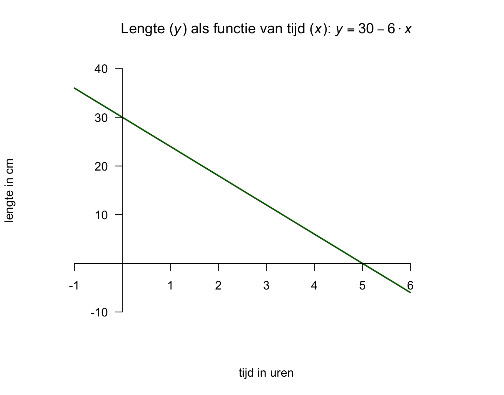
Figuur 5.1: De Romantische Kaars
Moeilijk gezegd, kunnen we nu de ‘lengte van de kaars’ uitdrukken in (beschrijven in termen van) het ‘aantal uren’ dat die kaars gebrand heeft. Anders gezegd, je kunt de tijd (\(x\)) gebruiken om de lengte uit te rekenen. Denk dus aan een machientje (formule) die iets maakt (\(y\), het resultaat) door eerst iets anders (\(x\), de input) in dat machientje te gooien. Als ik er \(3\) uur (\(x=3\)) in gooi, doet het machientje dus voor mij: \(30 - 6 \cdot 3 = 12\), en spuugt het machientje er dus de waarde \(12\) (\(y = 12\)) uit. Dus je kan zeggen dat \(y\) het gevolg is van \(x\)
- De lengte van de kaars (\(y\)) is afhankelijk van drie dingen:
- Hoelang de kaars was toen hij werd aangestoken op tijdstip \(x = 0\)
- De brand-snelheid, gemeten in cm per uur
- De tijd dat de kaars gebrand heeft (gemeten in aantal uren, \(x\))
We zeggen ook wel dat dit een linear model twee parameters heeft, namelijk het ‘startgetal’ en het ‘hellingsgetal’ en we hebben voor onze kaars dus twee vaste waarden in de formule staan (respectievelijk \(30\) en \(-6\)), alleen de \(x\)-waarde die je erin stopt kan dus variëren. Het startgetal (bij ons de waarde \(30\)) noemen we vaak het intercept (ook wel de hoogte van het snijpunt van de lijn met de \(y\)-as) en staat dus voor de waarde van \(y\) als \(x\) een waarde van nul heeft. Dus zeg maar de hoogte van \(y\) (of de lijn, want dat is y) precies waar \(x\) ‘start’. Onze kaars heeft een (start-) lengte van \(30\) cm op tijdstip \(x = 0\).
Het hellingsgetal (bij ons de waarde \(-6\) in de formule) noemen we vaak de richtingscoëfficiënt (of de slope) van de de lijn en vertelt ons hoe snel de lijn daalt of stijgt. Onze kaars wordt \(6\) cm per uur korter. Omdat de kaars dus korter wordt, noemen we het verband, tussen \(x\) en \(y\) negatief. We kunnen nu dus zeggen dat voor elk uur dat het diner vordert (\(x\) dus met één eenheid toeneemt), de lengte van de kaars met \(6\) cm afneemt. Stel dat we nog niet zouden weten hoelang de kaars was bij het begin, en ook niet hoe snel die korter wordt en toch een vast een algemene formule willen opstellen, dan ziet die formule er als volgt uit:
\[\begin{aligned} y = \text{intercept} + \text{slope} \cdot x \end{aligned}\] of omdat we graag symbolen gebruiken:
\(\:\:\:\:\:\:y = a + b \cdot x\) of op zijn kortst \(\:\:\:\:\:\:y = a + bx\)
Hierin is \(a\) het intercept en \(b\) de slope, of in een andere vorm:
\(\:\:\:\:\:\:y = a \cdot x + b\) (zo heb je hem vroeger op school gehad)
hierin is \(a\) juist de slope en \(b\) het intercept. Het intercept of startgetal, staat altijd los en de slope zit altijd vast aan de \(x\) en geeft daarmee de weging (of het gewicht) aan \(x\). Wij gebruiken meestal de vorm waarin eerst het intercept wordt vermeld.
De variabele \(x\) noemen we de ‘voorspeller’ of predictor en is daarmee de ‘onafhankelijke variabele’ (of denk ‘input’ of ‘oorzaak’). De \(y\)-variabele is hier de ‘voorspelde’ variabele en is daarmee de ‘afhankelijke variabele’ (het antwoord, de uitkomst, output, de respons of criterium variabele, of denk dus: ‘gevolg’). Voorlopig mag je wel even voelen alsof \(y\) écht het gevolg is van \(x\) (en \(x\) dus de oorzaak van \(y\)), zolang je maar geen causale uitspraken doet. Voelen wel, zeggen dus niet, heel gevaarlijk!
- Dus bij een formule in de vorm van ’\(y = a + bx\)’we zeggen ook wel:
- \(y\) als functie van \(x\),
- \(y\) uitgedrukt in (termen van) \(x\).
- \(y\) als gevolg van \(x\)
- \(y\) als criterium van \(x\)
- \(y\) als bereik van \(x\)
- \(x\) als oorzaak van \(y\)
- \(x\) als voorspeller van \(y\)
- \(x\) als predictor van \(y\)
In het geval van de kaars is de lengte (\(y\)) niet een direct causaal gevolg van de tijd (\(x\)). Het feit dat de kaars korter wordt, komt puur door de verbranding en niet door de tijd. Maar omdat de kaars systematisch (met de zelfde snelheid) korter wordt, kunnen we dus toch tijd (\(x\)) gebruiken om de lengte (\(y\)) uit te drukken of te voorspellen.
Je ziet nu dat we met een model te maken hebben, dat eigenlijk gewoon een recht (lineair) lijntje is, dat schuin naar beneden loopt. De hoogte (\(y\)) van deze lijn staat voor de lengte van de kaars en wordt steeds minder naarmate het aantal uren toeneemt. Op tijdstip \(x = 0\) is de kaars \(30\) cm en zal elk uur, \(6\) cm korter worden. Naar mate de kaars langer brandt, zal hij dus kleiner worden (duh!). Aan de hand van de grafiek (of formule) kunnen we nu aflezen (of uitrekenen) hoe lang de kaars op een bepaald (specifiek) moment ongeveer zal zijn. Dit betekent dus dat we een nieuw voorspel-model hebben. Natuurlijk is dit nieuwe voorspel-model beter dan het meest simpele model of voorspelling, het grote gemiddelde (de gemiddelde lengte berekend over alle verschillende lengtes van de kaars gedurende het hele diner). We weten natuurlijk (nog) niet precies hoe goed ons nieuwe model zal kloppen. In het (onverwachte) geval van – een veel te – romantisch etentje, kan die kaars misschien die hitte niet aan en smelt dan toch echt sneller dan verwacht op basis van ons model (begin hoogte \(30\) cm en \(6\) cm per uur korter). Any way, we hebben nu dus de lengte van de kaars uitgedrukt in tijd en dus een complexer (en vast wel beter) model gebouwd dan het grote gemiddelde van alle mogelijke lengtes van die kaars. Nu maar wel hopen dat het diner niet langer duurt dan vijf uur (\(x = 5\)), want volgens mij is het dan toch echt gedaan met de pret (of je huis staat in vlammen). Laten we ons richten op de aapjes en kijken hoe goed we hun geobserveerde lengtes kunnen voorspellen op basis van hun leeftijden aan de hand van een enkelvoudig lineair regressie-model.
5.3 De Enkelvoudige Lineaire Regressie-vergelijking, de Regressie-lijn
In de statistiek en de wetenschap draait alles om het verklaren en het voorspellen van zaken, in en om ons heen. Als er verband is tussen twee variabelen, kunnen we een beter model maken dan het nul-model (het grote gemiddelde als beste voorspelling). Met een nieuw (en iets ingewikkelder) model, kunnen we – gemiddeld gezien - beter gokken. Door deze nieuwe manier van voorspellen wordt (hopelijk) de gemiddelde gok-fout dus substantieel kleiner. Het meest basale model (verwachting, voorspelling van de werkelijkheid) dat we inmiddels kennen, is het grote gemiddelde. We noemen dit vaak ook wel het intercept-model of het nul-model. Bij de aapjes was het grote gemiddelde \(150\) cm en dus onze beste gok als we nog geen gebruik maken van informatie over hun leeftijd. We hebben gezien (Hoofdstuk 3) dat er tussen leeftijd en lengte bij onze aapjes een positief verband is (\(r_{xy} = .8944\)) en dat de puntenwolk dus van linksonder naar rechtsboven loopt, via een rechtlijnig (lineair) verband. Je zou dus ook wel kunnen zeggen dat de essentie (of hier ook wel samenvattende beschrijving) van de puntenwolk, een rechte lijn, schuin omhoog is. Deze lijn wordt zodanig door de puntenwolk heen getrokken dat alle negen punten er zo dicht mogelijk bij liggen (de verticale afstanden van een punt tot de lijn, zijn gemiddeld gezien, zo klein mogelijk). We gebruiken deze lijn nu als nieuwe (hopelijk betere) voorspelling dan het grote gemiddelde op \(Y\). We zeggen nu dus dat de hoogte van de regressielijn (die bij elke waarde van \(X\) anders is, vanwege het verband tussen x en y) voor de voorspelde waarde van \(Y\) (lengte) staat, met als symbool:
\(\:\:\:\:\:\:\hat{Y}_i\:\:\) De voorspelde waarde van \(Y\) voor subjectnummer \(i\), of predicted value of \(Y\)
We spreken ‘\(\hat{Y}_i\)’ ook wel uit als ‘Y-dakje’ of in het Engels als ‘Y-hat’. \(\hat{Y}_i\) kun je uitrekenen met de volgende algemene formule, de lineaire regressie-vergelijking (net gebruikte ik \(a\) en \(b\) als parameters, zoals op school vroeger, maar nu spreken we het dus anders af):
\(\:\:\:\:\:\:y = \text{intercept} + \text{slope} \cdot x\)
of omdat we graag symbolen gebruiken:
\(\:\:\:\:\:\:\hat{Y}_i = b_0 + b_1 \cdot X_{i}\)
Als regressie-vergelijking voor je steekproef met \(b_0\) als intercept en \(b_1\) als slope. \(b_0\) en \(b_1\) zijn dus statistieken en statistieken zijn de schatters (estimates) van bijbehorende parameters voor de populatie:
\(\:\:\:\:\:\:\hat{Y}_i = \beta_0 + \beta_1 \cdot X_{i}\)
Als regressievergelijking voor de populatie, waarin ‘\(\beta_0\)’ het populatie-intercept voorstelt en ‘\(\beta_1\)’ populatieslope. De echte waarden hiervan kunnen we dus alleen maar over dromen!
Het symbool ‘\(\hat{Y}_i\)’,dus \(Y\) met een dakje, is dus niet hetzelfde als de geobserveerde waarde van \(Y\) (\(Y_i\)). De geobserveerde waarde van \(Y\)is die waarde qua lengte, die we écht gemeten (geobserveerd) hebben. De (hoogte van de) regressielijn (voor of bij, een bepaalde waarde van \(X\)) is dus wél hetzelfde als \(\hat{Y}_i\) en staat voor die waarde die je zou geven als beste voorspelling als je wél informatie over \(X\) (leeftijd) tot je beschikking hebt. Laat alsjeblieft duidelijk zijn dat zowel bij kaarsen als bij aapjes, je nieuwe voorspelling nog steeds niet altijd perfect hoeft te zijn. Ik wil hier mee dus zeggen dat de geobserveerde waarde, heel vaak, toch even iets anders is dan je voorspelde waarde.
5.3.1 Slope en Intercept, Old School
Om het woord ‘regressie’ beter te begrijpen, zou je ook kunnen zeggen dat je de geobserveerde waarden van \(Y\) terug-brengt (re-gressie) naar de \(X\) waarden (uitdrukt in \(X\)-waarden). Je kijkt dan dus of op basis van de \(X\)-waarden, of de \(Y\)-waarden (beter) verklaard kunnen worden (dan het nulmodel). Laten we eerst maar kijken of we de ligging (positie) van de lijn, voor onze aapjes kunnen bepalen aan de hand van de puntenwolk (zie figuur hieronder).
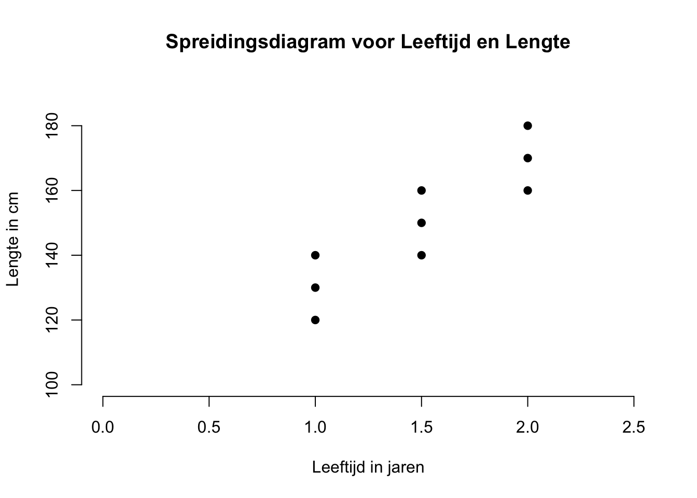
Figuur 5.2: -
In figuur is het hopelijk over-duidelijk wat de ligging of positie van de lijn moet zijn als je dus, met een mes op je keel, er zodanig een lijntje doorheen moet trekken, dat alle negen puntjes (observaties) er zo dicht mogelijk bij in de buurt moeten liggen. Maar bij ‘echte’ data (waar je veel meer puntjes ziet en de puntenwolk er misschien niet zo strak eruit ziet) is dat natuurlijk moeilijker te zien, maar wel ongeveer te schatten. De ligging van een regressie-lijn kan natuurlijk ook berekend worden door formules voor \(b_0\) en \(b_1\) in te vullen (of een programma als JASP of R te gebruiken). Die komen zo, maar eerst de bepaling van het intercept en de slope, aan de hand van onze grafiek. Als we hier een (zo goed mogelijk passende) lijn door de puntenwolk willen trekken (schetsen), zal die – bij elke waarde van \(X\) – precies door de middelste puntjes moeten worden getrokken (zie figuur hieronder). Voor precies deze positie, liggen de \(9\) punten, gemiddeld gezien, het dichtst bij de regressielijn (verticaal gezien):
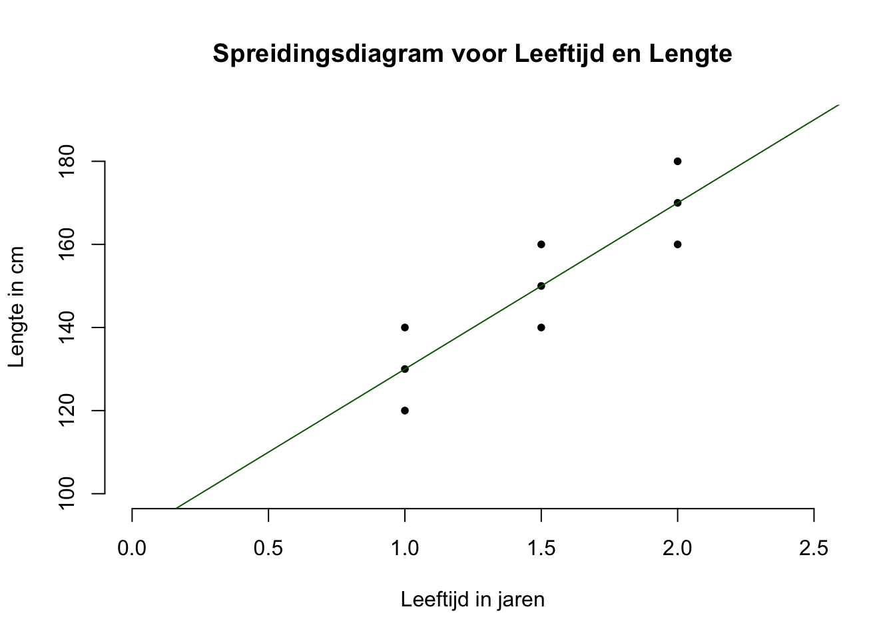
Figuur 5.3: -
Een regressie-lijn (of model) heeft twee parameters (of statistieken in geval van steekproef) die ons precies vertellen hoe we de lijn zouden moeten tekenen (mochten we zelf een plaatjevervan maken, dus van statistieken naar plaatje). Maar wij gaan van plaatje terug naar statistieken.
We beginnen met de slope, dus de helling van de regressielijn:
Eerst schatten we de waarde van de slope door twee punten te zoeken die op de lijn liggen. Neem bijvoorbeeld eerst het punt A (maar elk denkbeeldig punt is prima) met bijbehorende coördinaten \(A(x_A = 1.0; y_A = 130)\), of kortweg: \(A(1.0; 130)\), zie hieronder. Dan nog een punt, zeg punt B, ook gewoon ergens op de regressielijn. Ik heb gekozen voor \(B(x_B = 2.0; y_B = 170)\).
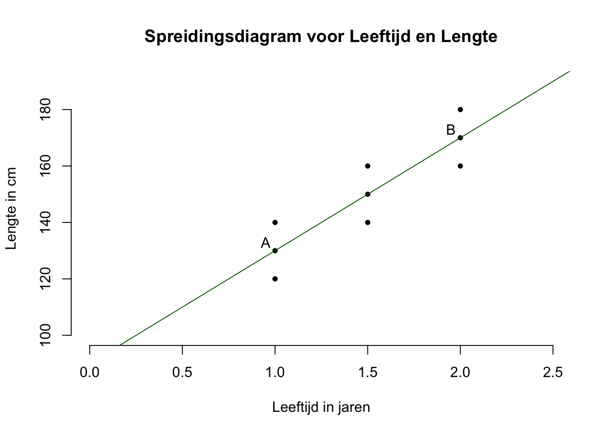
Figuur 5.4: -
Hoeveel eenheden (in jaren) moet je naar rechts (horizontaal), en hoeveel eenheden (in cm) moet je vervolgens omhoog (verticaal) wandelen, om van punt A naar punt B te komen?
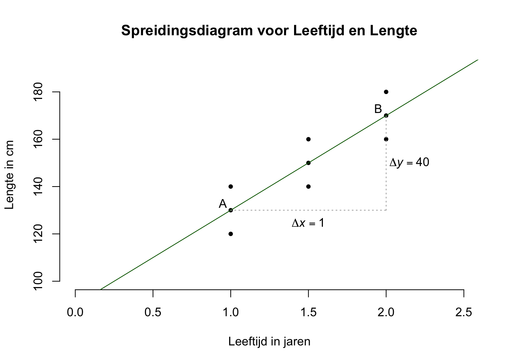
Figuur 5.5: -
Vanuit punt A, moet je dus \(1\) eenheid (in jaren, \(\Delta x = 1\), staat voor Delta of verschil in \(x\)-waarde is dus \(1\), ook wel: \(\Delta x = x_B - x_A = 2 -1 =1\)) naar rechts wandelen (dan zit je precies onder punt B), en vervolgens wandel je \(40\) eenheden (in cm) omhoog, om op punt B uit te komen. Anders gezegd als \(X\) met precies \(1\) eenheid toeneemt, dan is de lijn precies \(40\) cm hoger. Omdat de lijn recht is en dus overal de zelfde helling heeft, stijgt de lijn met \(40\) cm per jaar. Als we \(2\) eenheden naar rechts waren gewandeld, hadden we dus \(2\) keer \(40\) cm (dus \(80\) cm) omhoog gemoeten. Als je de helling van een lijn wilt weten, kijk je dus hoeveel de \(Y\)-waarde van de lijn toeneemt (afnemen kan ook natuurlijk) per toename van \(1\) eenheid voor \(X\). Misschien weet je nog van vroeger als je de richtingscoëfficiënt (slope) wilt op basis van twee punten op een rechte lijn, kan je dat met de volgende formule (maar je mag het vergeten, want in de statistiek doen we het anders):
\(\:\:\:\:\:\:\text{richtingscoëfficiënt} = \frac{\Delta y}{\Delta x} = \frac{y_A - y_B}{x_A - x_B} = \frac{130-170}{1-2} = \frac{-40}{-1} = 40\)
Bij ons heeft de richtingscoëfficiënt of slope dus een waarde van \(40\) Eigenlijk gewoon de groeisnelheid van aapjes (in cm per jaar) dus. Uiteraard zullen aapjes niet eeuwig (even snel) blijven groeien, maar deze groei-trend (\(40\) cm per jaar) geldt in ieder geval voor onze aapjes, voor hun waarden van \(X\).
Nu het intercept, dus de hoogte van de regressielijn waar die de \(Y\)-as snijdt:
Helaas laat ons plaatje niet de ‘echte’ \(x\)-en \(y\)-as zien (waar je ook de oorsprong, dus het punt met \(x = 0\) en \(y = 0\) ziet), Dus ik teken hem even voor je:
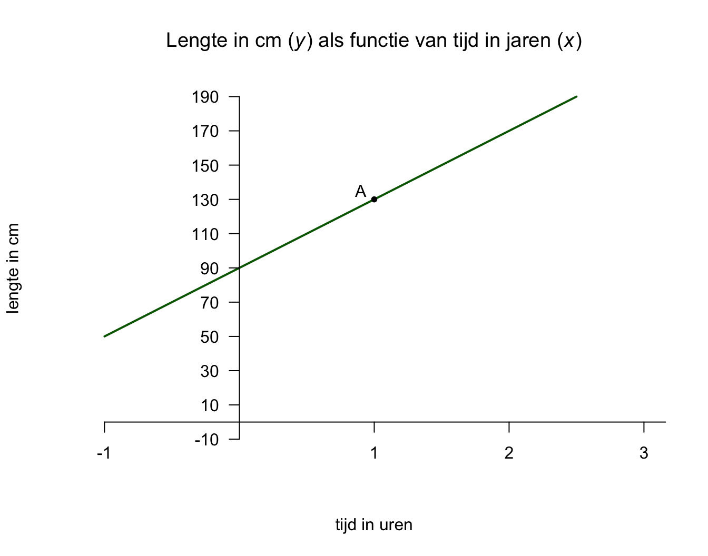
Figuur 5.6: -
Om nu (de hoogte van) de start-positie of het intercept te bepalen van het lijntje te bepalen, kijk je bij welke hoogte de lijn de \(y\)-as snijdt. Dus bij \(y = 90\). Soms zie je de echte y-as dus niet en dan zou je het ook kunnen beredeneren: Zo zou je bijvoorbeeld vanuit punt A (met \(x_A = 1\)) horizontaal naar de \(y\)-as kunnen wandelen, je zult dus één jaar naar links moeten wandelen, maar hoeveel moet je nu omlaag om weer op ons lijntje terecht te komen? Juist omdat de lijn recht is kunnen we dus ook terug redeneren. Eén eenheid naar links wandelen vanuit punt A, betekent dus nu \(40\) eenheden omlaag. Omdat punt A een hoogte had van \(y_A = 130\), komen we dus uit op de \(y\)-as op een hoogte van \(90\) cm, het snijpunt van de lijn met de \(y\)-as.
In formule vorm wordt onze regressievergelijking dus:
\(\:\:\:\:\:\:\hat{\text{lengte}}_i = 90 + 40 \cdot \text{leeftijd}_i\)
of in termen van \(Y\)-dakje en X;
\(\:\:\:\:\:\:\hat{Y}_i = 90 + 40 \cdot X_{i}\:\:\:\)
Je hebt dus nu een heuse regressie-vergelijking, onze voorspelformule! Het intercept dus de waarde \(90\) (\(b_0 = 90\)) en de slope heeft een waarde van \(40\) (\(b_1 = 40\)).
5.3.2 Slope en Intercept, For Real
Om je weer even te laten wennen aan grafieken hebben we hierboven even ouwerwets gedaan. Een schetst (kon bij ons heel precies) van de lijn en vervolgens gekeken wat de waarden van de slope en het intercept ongeveer zijn (kon bij ons dus ook heel precies). Normaal gezien is het helemaal niet zo duidelijk hoe de lijn precies moet lopen en kunnen we hem dus ook niet precies tekenen. Dus dan (of altijd dus) berekenen hem gewoon aan de hand van statistieken voor onze steekproef, die je zo langzamerhand al vast wel kan dromen (of inmiddels je keel uitkomen). Eerst maar de formules voor de slope en het intercept:
- Voor de slope, ofwel \(b_1\):
- \(b_1 = \frac{S_{xy}}{S_x^2}\:\:\:\) Hier heb je dus alleen de covariantie van \(X\) en \(Y\) nodig en de variantie van \(X\) nodig om de slope uit te rekenen. Of:
- \(b_1 = \frac{r_{xy}}{S_x \cdot S_y}\:\:\:\) Hier dus de correlatie en de twee standaardafwijkingen.
- Voor het intercept, ofwel \(b_0\):
- \(b_0 = \overline{Y} - b_1 \cdot \overline{X}\:\:\:\) Om het intercept uit te rekenen, heb je dus de slope en de twee gemiddelden nodig.
En nu gaan we dus de boel invullen onze gegevens (van de enige echte steekproef nog steeds):
- Onze statistieken:
- \(n=9\),
- \(\overline{Y} = 150\), \(S_y^2 = 375\),
- \(\overline{X} = 1.50\), \(S_x^2 = 0.1875\),
- \(S_{xy} = 7.5\), \(r_{xy} = .8944\) (afgerond op \(4\) decimalen)
- Invullen geeft, we beginnen met de slope en dan pas het intercept:
- \(b_1 = \frac{S_{xy}}{S_x^2} = 7.5/0.1875 = 40\:\:\:\) of;
- \(b_1 = \frac{.8944}{\sqrt{0.1875} \cdot \sqrt{375}} = .8944/(\sqrt{0.1875} \cdot \sqrt{375}) = 40\:\:\:\) Vergeet niet de wortel te trekken, ik had jullie immers de twee varianties gegeven,, terwijl we de standaardafwijkingen nodig hadden!
- \(b_0 = \overline{Y} - b_1 \cdot \overline{X} = 150 - 40 \cdot 1.5 = 90\)
- klopt wéér, fijn!
- \(b_0 = \overline{Y} - b_1 \cdot \overline{X} = 150 - 40 \cdot 1.5 = 90\)
We kunnen nu dus eindelijk zeggen dat wat de regressie vergelijking, dus de voorspelformule is om op basis van leeftijd, de lengte te voorspellen:
\[\hat{Y}_i = 90 + 40 \cdot X_{i}\]
Zodat we voor ieder aapje (nummer \(i\)), op basis van zijn leeftijd, de waarde van zijn lengte kunnen voorspellen.
5.4 Voorspelkracht
Nu we weten hoe wat de ligging (positie) is van de regressie-lijn voor onze aapjes, willen we natuurlijk ook weten, hoe goed ons nieuw voorspel-modelletje (de regressie-vergelijking) werkt. Hoe krachtig is die nieuwe manier van voorspellen? Hoe groot zou de gemiddelde gok-fout zijn als (gegeven dat) we dit nieuwe model gebruiken? We willen dus weten hoe krachtig een model is qua voorspelling. Het mooie (in ieder geval voor mij) van dit hoofdstuk is dat de kern (of praktische essentie) van statistiek, eindelijk duidelijk gaat worden. Nieuwe begrippen die je hier leert, zijn toepasbaar (generaliseerbaar) op elk model. Of je nu spreekt over een gedachte (idee) als model (een verwachting), een trein-modelletje van je pappa, een foto-model van TV laatst, een regressie-model, een confirmatief factor model, of werkelijk wat dan ook, het maakt mij niet uit, want elk idee of model, komt in meer of mindere mate overeen, met datgeen wat we willen bereiken (representeren) of waar we naar op zoek zijn (of waar we echt van dromen). En waar zijn we naar op zoek? Een prettig leven voor jezelf en anderen, mag ik hopen, maar in de wetenschap, naar een zo goed mogelijke beschrijving van wat er (in en) om ons heen gebeurt. Al die aspecten van de werkelijkheid (datgeen wat we zien of observeren) kunnen voor een gedeelte verklaard worden, maar ook, voor een gedeelte niet. In dit hoofdstuk wordt duidelijk in hoeverre we de werkelijkheid (met een beter model dan het nul-model) kunnen verklaren, maar ook in hoeverre, of voor welke gedeelte, we de werkelijkheid niet kunnen verklaren. We keren snel terug naar ons voorspel-spelletje, maar nu aan de hand van ons nieuwe model, onze regressie-vergelijking.
5.4.1 Het Spel bij Regressie
We beginnen vanaf het begin. Kijk naar de twee tabellen hieronder, je mag alle informatie (data-punten en statistieken) gebruiken die je ziet.
| \(i\) | \(Y_i\) | \(X_i\) |
|---|---|---|
| 1 | 120 | 1.0 |
| 2 | 130 | 1.0 |
| 3 | 140 | 1.0 |
| 4 | 140 | 1.5 |
| 5 | 150 | 1.5 |
| 6 | 160 | 1.5 |
| 7 | 160 | 2.0 |
| 8 | 170 | 2.0 |
| 9 | 180 | 2.0 |
| \(\overline{Y} = 150\) | \(\overline{X} = 1.50\) |
| \(S_y^2 = 375\) | \(S_x^2 = .1875\) |
| \(S_y = 19.365\) | \(S_x = 0.433\) |
5.4.2 Opdeling van Totale Afwijking in Model en Error per Individu
Alle negen aapjes staan op de gang en er komt er slechts één binnen wandelen, natuurlijk vertel ik je niet welke (ik weet het stiekem wel).
Vraag 1 – Wat is je beste gok qua lengte als er een aapje binnen komt wandelen?
Je roept nu natuurlijk heel hard: ‘\(150\) cm, want dat is het grote gemiddelde (\(\overline{Y}=150\))’, ook wel het nul-model. Als je iets anders had geroepen (\(140\) cm of zo) dan zou de gemiddelde gok-fout groter worden en dat wil je natuurlijk niet! (\(150\) was het goede antwoord, heel goed!)
Even later… Heel toevallig komt aapje nummer \(9\) binnen wandelen (\(Y_9 = 180\)). Oeh, je hebt in dit geval een verkeerde voorspelling gemaakt. Hoe groot is de gok-fout of individuele afwijking voor case \(9\)?
\(\:\:\:\:\:\:Y_i - \overline{Y}\:\:\:\:\:\:\:\:\:\:\:\:\:\:\) Individuele afwijking (naar het grote gemiddelde) voor casenummer \(i\)
\(\:\:\:\:\:\:Y_9 – \overline{Y} = 180 – 150 = 30\:\:\:\:\:\:\:\:\:\:\:\:\:\:\) Individuele afwijking voor case 9.
Vraag 2 – Alle aapjes staan weer op de gang en ik vraag je nog een keer te gokken, maar nu krijg je extra informatie: Ik vertel je dat het aapje dat binnenkomt, een leeftijd heeft van twee jaar (\(X = 2\)). Ik heb je dus (diagnostische) informatie gegeven over een tweede variabele (leeftijd) waarvan we eerder al hadden gezien dat deze een positieve samenhang vertoont met lengte (\(r_xy= .89\)), wat betekent dat jongere aapjes over het algemeen wat kleiner zijn dan oudere aapjes. Sterker nog, we hebben zelfs een regressie-vergelijking gebouwd, die ons helpt bij het – beter – voorspellen:
\[\hat{Y}_i = 90 + 40 \cdot X_{i}\:\:\:\]
Omdat je dus de waarde qua leeftijd van mij hebt gekregen, kan je die (diagnostische) informatie (\(X = 2\)) gebruiken en invullen als \(X\)-waarde in de regressie-vergelijking;
\(\:\:\:\:\:\:\hat{Y}_{x=2} = 90 + 40 \cdot 2.0 = 170\)
Nu je weet wat de voorspelde waarde is voor alle aapjes, die precies \(2\) jaar oud zijn, roep je dus nu als antwoord (weer heel hard): ‘\(170\) cm, want het aapje is een half jaar ouder dan gemiddeld en zal dus ook wel wat langer zijn. Sterker nog, ik voorspel dat hij \(20\) cm boven het grote gemiddelde zit.’
Ik heel blij, want je hebt het antwoord alweer goed! Doordat je nu gebruik hebt gemaakt van het nieuwe model (dat rekening houdt met leeftijd, middels onze regressie-vergelijking), heb je je meest basale voorspelling (150) met \(20\) cm bijgesteld. Door of vanwege regressie zeggen we nu \(170\) in plaats van \(150\) en dat is \(20\) punten meer. En besef dus dat je deze verschuiving in voorspelling (\(20\) cm) altijd (systematisch) zou doen als een aapje een half jaar ouder is dan het gemiddelde (\(\overline{X} = 1.50\)).
Even later… Heel toevallig komt aapje nummer \(9\) weer binnen wandelen (hij is immers één van de twee-jarigen). Laten we snel kijken hoeveel jouw laatste voorspelling (gebaseerd op de leeftijd) nu nog afwijkt van de werkelijkheid. Of beter, hoe de werkelijkheid afwijkt van jou nieuwe verwachting (dus gebaseerd op ons regressiemodel). Aapje nummer \(9\) heeft een geobserveerde waarde van \(Y_9 = 180\) terwijl jouw voorspelling, \(\hat{Y}_{9} = \hat{Y}_{x=2} = 170\) was. Nu ligt de geobserveerde waarde nog maar \(10\) cm boven onze nieuwe (en hopelijk betere) verwachting!
Conclusie:
Ten opzichte van het nul-model, wijkt aapje nummer \(9\), dus \(30\) cm af, omdat:
\(\:\:\:\:\:\:Y_9 – \overline{Y} = 180 – 150 = 30\)
Door het regressie-model hebben we de voorspelling met \(20\) cm aangepast, omdat de nieuwe voorspelling, \(170\) is:
\(\:\:\:\:\:\:\hat{Y}_{9} – \overline{Y} = 170 – 150 = 20\)
Omdat we het regressie-model hebben gebruikt, maken we nu een kleinere gok-fout van nog maar \(10\) cm:
\(\:\:\:\:\:\:Y_i – \hat{Y}_{i}\)
\(\:\:\:\:\:\:Y_9 – \hat{Y}_{9} = 180 – 170 = 10\)
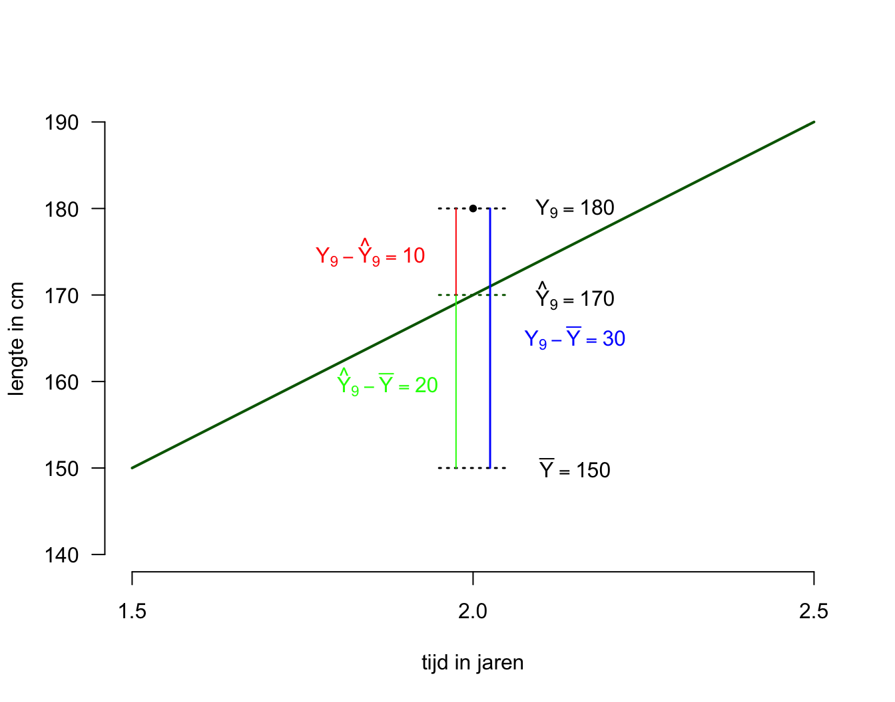
Figuur 5.7: Opdeling Totale Afwijking in Model en Error voor Aapje nummer \(9\)
Conclusie nog een keer, maar dan in andere woorden en figuur 5.2: We hebben de totale afwijking van aapje nummer \(i = 9\) (\(30\) cm, de lengte van het blauwe verticale lijntje geeft de afwijking tussen de geobserveerde waarde en het grote gemiddelde) gesplit (of opgedeeld) in twee stukjes. Het eerste stukje (\(20\) cm, groen) is het gedeelte van de totale afwijking dat door ons regressie-model verklaard is. Het tweede stukje is het gedeelte dat we niet konden verklaren, het laatste restje dus (Jeetje… waar zou het woord ‘rest’ vandaan komen, ‘residu’ misschien?, ik teken residuen altijd rood). We hebben nu alleen naar deze opdeling gekeken voor aapje nummer \(9\). Het moge inmiddels duidelijk zijn dat voor dit aapje het regressie-model een betere voorspelling gaf dan het nul-model. Ik laat dit verschil, qua betere voorspelling met het regressiemodel in vergelijking tot het nul-model, in het algemeen en specifiek voor aapje nummer \(9\), even statistisch, technisch of wiskundig zien:
Heel algemeen:
\(\:\:\:\:\:\:DATA = FIT + RESIDU\)
Je komt deze uitspraak in vele vormen tegen, bijvoorbeeld:
\(\:\:\:\:\:\:DATA = Model + Residual\:\:\:\) of;
\(\:\:\:\:\:\:Observed = Expected + Error\:\:\:\) of;
\(\:\:\:\:\:\:\text{Werkelijkheid} = \text{Theorie} + \text{Wat niet klopt}\:\:\:\) en soms;
\(\:\:\:\:\:\:\text{Skinny Jeans} = \text{Vorm van benen enzo} + \text{niks}\)
Maar we bedoelen dus echt hetzelfde, wordt zo duidelijk… Aan de hand van het nul-model (\(M_0\)) en voor aapje nummer \(9\):
\(\:\:\:\:\:\:Data = M_0 + Error\)
\(\:\:\:\:\:\:Data = \overline{Y} + Error\:\:\:\:\:\) Dus in het geval van aapje voor \(i = 9\);
Aapje nummer \(9\) heeft een lengte van \(180\), terwijl het nul-model \(150\) voorspelde, waar hij dus nog \(30\) cm naast zat én is dus de gokfout (of error) die je maakt in het geval van het nul-model;
\(\:\:\:\:\:\:Y_i = \overline{Y} + e_i\)
\(\:\:\:\:\:\:Y_9 = \overline{Y} + e_9\)
\(\:\:\:\:\:\:180 = 150 + 30\)
Zijn score (\(Y_9 = 180\)) is dus opgebouwd uit twee termen, het grote gemiddelde en de error (gokfout, of ook wel ‘blauw streepje’ de gewone afwijking van een observatie naar het grote gemiddelde) die je in zijn geval maakt.
Als je dus nog niet weet over welk aapje uit je steekproef je het hebt, dan hou je het lekker algemeen (dus voor je steekproef):
\(\:\:\:\:\:\:Y_i = \overline{Y} + e_i\)
Maar als je over de populatie spreekt moet het natuurlijk aan de hand van parameters:
\(\:\:\:\:\:\:Y_i = \mu_y + \epsilon_i\)
Nu aan de hand van het regressie-model (\(M_1\)) en voor aapje nummer \(9\):
\(\:\:\:\:\:\:Data = M_1 + Error\)
\(\:\:\:\:\:\:180 = 170 + 10\)
Op basis van het regressie-model (\(M_1\)), zou je zeggen dat aapje nummer \(9\), die twee jaar is, dat hij \(170\) cm zou moeten zijn, en dan hou je nog maar een error over van \(10\) cm;
\(\:\:\:\:\:\:Y_9 = \hat{Y}_{9} + e_9\)
Zijn score (\(Y_9 = 180\)) is dus opgebouwd uit twee termen, de voorspelde waarde (\(\hat{Y}_{9} = 170\)) door of vanwege \(M_1\) en de error (\(e_9 = 10\)) die je in zijn geval maakt. Waar kwam \(Y\)-dakje (\(\hat{Y}_{9}\)) ook al weer vandaan? Die hadden we met de regressievergelijking berekend;
\(\:\:\:\:\:\:Y_9 = (90 + 40 \cdot X_9) + e_9\)
of zonder haakjes:
\(\:\:\:\:\:\:Y_9 = 90 + 40 \cdot X_9 + e_9\)
Als je dus nog niet weet over welk aapje je praat, hou je het lekker algemeen:
\(\:\:\:\:\:\:Y_i = \hat{Y}_{i} + e_i\)
of:
\(\:\:\:\:\:\:Y_i = (90 + 40 \cdot X_i) + e_i\)
Aangezien de haakjes hier dus voor ‘Jan Doedel’ staan:
\(\:\:\:\:\:\:Y_i = 90 + 40 \cdot X_i + e_i\)
Als je zelfs nog niet weet wat de waarden van het intercept (\(b_0\)) en de slope (\(b_1\)) zijn in je steekproef:
\(\:\:\:\:\:\:Y_i = b_0 + b_1 \cdot X_i + e_i\)
En natuurlijk willen zouden we uiteindelijk willen weten hoe het zit met het intercept en de slope voor de hele populatie aapjes, dus aan de hand van parameters:
\[\:\:\:\:\:\:Y_i = \beta_0 + \beta_1 \cdot X_i + \epsilon_i\]
Dit noem je het algemene regressie-model voor de populatie, waarmee we dus precies laten zien, met welke symbolen (parameters), hoe wij een geobserveerde score opdelen in een stuk verklaard door het model en een stuk onverklaard wat we vaak error (of ruis) noemen.
5.4.3 Opdeling van Totale Variatie in Model Variatie en Error Variatie
Hoe zou de opdeling qua voorspelling (fit) en error (residu) bij de andere aapjes zitten? Dus welke gedeeltes van alle afwijkingen tezamen (totale variatie) worden verklaard door het model en welk gedeelte is ruis? Wat ik net voor aapje nummer \(9\) heb gedaan doen we nu voor elk aapje, maar dan aan de hand van de de formules. We gaan het bekijken aan de hand van een tabel met ‘kwadratensommen’. Er zijn maar drie soorten kwadratensommen (Voor Totaal, Model en Error natuurlijk). Om zo’n tabel als hieronder aan te maken, zul je dus het spelletje moeten spelen voor ieder aapje uit onze steekproef (of heel goed je formules moeten kennen). Ik loop de berekeningen natuurlijk met jullie door.
| \(i\) | \(Y_i\) | \(X_i\) | \(\hat{Y}_i\) | \(Y_i - \overline{Y}\) | \((Y_i - \overline{Y})^2\) | \(\hat{Y}_i - \overline{Y}\) | \((\hat{Y}_i - \overline{Y})^2\) | \(Y_i - \hat{Y} = e_i\) | \((Y_i - \hat{Y})^2 = e_i^2\) |
|---|---|---|---|---|---|---|---|---|---|
| 1 | 120 | 1 | 130 | -30 | 900 | -20 | 400 | -10 | 100 |
| 2 | 130 | 1 | 130 | -20 | 400 | -20 | 400 | 0 | 0 |
| 3 | 140 | 1 | 130 | -10 | 100 | -20 | 400 | 10 | 100 |
| 4 | 140 | 1.5 | 150 | -10 | 100 | 0 | 0 | -10 | 100 |
| 5 | 150 | 1.5 | 150 | 0 | 0 | 0 | 0 | 0 | 0 |
| 6 | 160 | 1.5 | 150 | 10 | 100 | 0 | 0 | 10 | 100 |
| 7 | 160 | 2 | 170 | 10 | 100 | 20 | 400 | -10 | 100 |
| 8 | 170 | 2 | 170 | 20 | 400 | 20 | 400 | 0 | 0 |
| 9 | 180 | 2 | 170 | 30 | 900 | 20 | 400 | 10 | 100 |
| \(\sum\limits^{i=9}_{i=1}{(Y_i-\overline{Y})^2} = 3000\) | \(\sum\limits^{i=9}_{i=1}{(\hat{Y}_i-\overline{Y})^2} = 2400\) | \(\sum\limits^{i=9}_{i=1}{(Y_i-\hat{Y}_i)^2} = 600\) |
Mijn gedachte nu:
Oh wat een frustratie, natuurlijk ook voor jou, maar vooral voor mij, want ik wil zo graag naar de essentie en we zijn er bijna. Maar uit ervaring weet ik dat het zo moeilijk is om je aandacht bij suffe dingen te houden. Natuurlijk ben ik inmiddels dus bang dat ik je kwijt ben, juist omdat we in een snelle wereld leven waar aandacht alleen breed is… Hou vol, nog eventjes, want de kern komt écht bijna! Ik weet, we leven immers in een wereld waar je bijna niet meer hoeft na te denken, want alles wordt voor je gedaan. Laten we wel wezen, weet jij nog hoe kaas gemaakt wordt of hoe je een band moet plakken? Of weet jij écht hoe jouw computer werkt? Meestal niet van belang, omdat het gewoon werkt of voor jou wordt gedaan, dus waarom zou je nadenken en moeite doen? Waarom ben je iets wetenschappelijks gaan studeren?
Inzicht Kicks Ass!
Anyway, tabel 5.2 is de keiharde werkelijkheid, waar we eerst doorheen moeten. In de tabel heb ik, naast de bekende data, een aantal extra kolommen aangemaakt. Een aantal kolommen zou je al moeten herkennen. Kolom 5 en 6 (‘Total’ en ‘Squared Total’) geven respectievelijk de individuele afwijkingen ten opzichte van het grote gemiddelde (blauwe streepjes) en de gekwadrateerde afwijkingen (blauwe vierkantjes), die we ook nodig hadden om de variantie (\(S_y^2\)) en de standaardafwijking (\(S_y\)) voor lengte uit te rekenen. De gekwadrateerde afwijkingen (tot het grote gemiddelde) tellen samen op tot \(3000\). In kolom \(4\) vind je de voorspellingen (predicted values voor lengte, ‘\(Y\)-dakje’ dus) op basis van onze regressievergelijking (\(\hat{Y}_i = 90 + 40 \cdot X_{i}\)). Dus op basis van de leeftijd van die aapjes, die je invult in de regressie-vergelijking om hun voorspelde waarde (\(\hat{Y}_i\)) uit te rekenen. In kolom \(7\) vind je de ‘systematische verschuiving in voorspelling door het regressie-model’ (t.o.v. het nul-model, ik noem dat de groene streepjes, zie ook figuur), de optelling is natuurlijk 0. Daarom kolom \(8\), maar daar vind je de gekwadrateerde ‘nodel verschuivingen’, die tellen samen op tot \(2400\). In de ener laatste kolom vind je de error (\(e_i\)), wat de gok-foutjes zijn als je dus regressie gebruikt als voorspelling, die tellen (natuurlijk) ook op tot nul. Daarom de aller laatste kolom met gekwadrateerde errors, die samen optellen tot \(600\).
5.4.3.1 Sum of Squares voor Total, Model en Error
5.4.3.1.1 Sum of Squares voor Total
Beetje flauwe vraag maar verschillen (of varieren) onze aapjes? Ja, want ze hebben niet allemaal dezelfde lengte. Maar hoeveel variatie is er dan? We hebben verschillende maten voor variatie. Zo zijn de variantie (\(S_y^2 = 375\) voor onze aapjes) of de standaardafwijking (\(S_Y = 19.365\)) natuurlijk veel gebruikte variatie- of spreidingsmaten. Kwadratensommen (optelling van vierkantjes) zijn ook heel handige en veel gebruikte maten voor spreiding. Er zijn drie soorten kwadratensommen (Sum of Squares of kortweg \(SS\)) voor de afhankelijke variabele, we beginnen met Sum of Squares Total (\(SST\)), deze wordt gebruikt als maat voor de Totale variatie van de afhankelijke variabele (dus voor \(Y\) en is dus de optelling van alle gekwadrateerde blauwe streepjes). We zijn ‘hem’ al tegengekomen in Hoofdstuk 0, omdat het een tussenantwoord is als je de varaiantie berekend, maar hij is dus zo belangrijk dat ie een eigen naam heeft gekregen (\(SST\), \(SSTotal\), soms zie je ook: \(SSY\) of \(SS\)lengte in geval van de variabele ‘lengte’)
\(\:\:\:\:\:\:SST = \sum\limits^{i=n}_{i=1}{(Y_i-\overline{Y})^2}\)
En als we het zouden invullen voor onze aapjes, wederom in stapjes:
\(\:\:\:\:\:\:SST = \sum\limits^{i=9}_{i=1}{(Y_i-\overline{Y})^2} = (Y_1-\overline{Y})^2 + (Y_2-\overline{Y})^2\;+\; \dots \; +\;(Y_8-\overline{Y})^2 + (Y_9-\overline{Y})^2\)
\(\:\:\:\:\:\:SST = \sum\limits^{i=9}_{i=1}{(Y_i-\overline{Y})^2} = (120-150)^2+(130-150)^2\;+\; \dots \;+\;(170-150)^2+(180-150)^2\)
\(\:\:\:\:\:\:SST = \sum\limits^{i=9}_{i=1}{(Y_i-\overline{Y})^2} = (\text{-}30)^2+(\text{-}20)^2\;+\; \dots \;+\;20^2+30^2\)
\(\:\:\:\:\:\:SST = \sum\limits^{i=9}_{i=1}{(Y_i-\overline{Y})^2} = 900+400\;+\; \dots \;+\;400+900 = 3000\)
De sommatie van de totale gekwadrateerde individuele afwijkingen naar het grote gemiddelde, dus Sum of Squares (due to) Total (\(SST\)) heeft een waarde van \(3000\). Denk maar even aan een gezellig tuintje vol van variatie (mooie bloemetjes en onkruid) met een oppervlakte van \(3000\) \(text{cm}^2\). Tuurlijk willen we straks weten welk gedeelte van de tuin bezaaid is met bloemen en welk deel met onkruid.
5.4.3.1.2 Sum of Squares voor Model
De sommatie van de gekwadrateerde ‘systematische verschuivingen’ door het regessie-model (groene streepjes), noemen we ook wel Sum of Squares (due to) Regression of kortweg \(SSReg\), \(SSM\) of \(SS\hat{Y}\):
\(\:\:\:\:\:\:SSM = \sum\limits^{i=n}_{i=1}{(\hat{Y}_i-\overline{Y})^2}\)
\(\:\:\:\:\:\:SSM = \sum\limits^{i=9}_{i=1}{(\hat{Y}_i-\overline{Y})^2} = (\hat{Y}_1-\overline{Y})^2 + (\hat{Y}_2-\overline{Y})^2\;+\; ...\; +\;(\hat{Y}_8-\overline{Y})^2 + (\hat{Y}_9-\overline{Y})^2\)
\(\:\:\:\:\:\:SSM = \sum\limits^{i=9}_{i=1}{(\hat{Y}_i-\overline{Y})^2} = (130-150)^2+(130-150)^2\;+\; \dots \;+\;(170-150)^2+(170-150)^2\)
\(\:\:\:\:\:\:SSM = \sum\limits^{i=9}_{i=1}{(\hat{Y}_i-\overline{Y})^2} = 20^2+ 20^2+20^2+0^2+0^2+0^2+20^2+20^2+20^2\)
\(\:\:\:\:\:\:SSM = \sum\limits^{i=9}_{i=1}{(\hat{Y}_i-\overline{Y})^2} = 400 + 400+ 400 +0+0+0+400+400+400 = 2400\)
We kunnen dus nu zeggen dat de waarde van de kwadratensom voor het model dus een waarde heeft van \(2400\) Denk dus maar eventjes dat dit de oppervlakte is (\(2400\) \(\text{cm}^2\)) die de netjes en systematisch geplante bloemetjes beslaan in de tuin van gezelligheid (met een totale oppervlakte van \(3000\) \(\text{cm}^2\)).
5.4.3.1.3 Sum of Squares voor Error
Het enige dat ons nog rest is de troep die we overhouden (de prut die in een filter bijft zitten, ook wel het ‘residu’). We kijken dus nu naar de onverklaarbare variatie (waarom zijn alle aapjes van \(2\) jaar oud, niet precies \(170\)?). Bij mij dus de rode streepjes (rood van de liefde, die wat mij betreft ook onverklaarbaar is). Dus ook hier weer, eerst alle rode streepjes (\(e_i\)) voor elke waarde van \(i\) kwadrateren en dan pas optellen:
\(\:\:\:\:\:\:SSE = \sum\limits^{i=n}_{i=1}{(Y_i-\hat{Y}_i)^2} = \sum\limits^{i=n}_{i=1}{e_i^2}\)
\(\:\:\:\:\:\:SSE = \sum\limits^{i=9}_{i=1}{(Y_i-\hat{Y}_i)^2} = (Y_1 -\hat{Y}_1)^2 + (Y_2 -\hat{Y}_2)^2\;+\; ...\; +\;(Y_8 -\hat{Y}_8)^2 + (Y_9 -\hat{Y}_9)^2\)
\(\:\:\:\:\:\:SSE = \sum\limits^{i=9}_{i=1}{(Y_i-\hat{Y}_i)^2} = (120 - 130)^2 + (130 -130)^2\;+\; \dots \; +\;(170 -170)^2 + (180 -170)^2\)
\(\:\:\:\:\:\:SSE = \sum\limits^{i=9}_{i=1}{(Y_i-\hat{Y}_i)^2} = \text{-}10)^2 + 0^2 + 10^2 + \text{-}10)^2 0^2 + (10)^2 + \text{-}10)^2 0^2 + (10)^2\)
\(\:\:\:\:\:\:SSE = \sum\limits^{i=9}_{i=1}{(Y_i-\hat{Y}_i)^2} = 100 + 0 + 100 + 100 + 0 + 100 + 100 + 0 + 100 = 600\)
De sommatie van de gekwadrateerde afwijkingen van een observatie naar de (eigen) voorspelling door het regressie-model, of de gekwadrateerde errors, noemen we ook wel Sum of Squares (due to) Error, of kortweg \(SSE\), \(SSRes\), \(SSResidual\).
Nu hebben we dus drie soorten sommaties van kwadraten uitgerekend. \(SST\), \(SSM\) en \(SSE\). Laten we die stelling van daarnet er nog eens bijpakken:
\(\:\:\:\:\:\:DATA = FIT + RESIDU\)
Kan die al omvattende stelling niet toevallig ook worden uitgedrukt in termen van de drie verschillende vormen van de sum of squares? Ja!
\(\:\:\:\:\:\:SSTotal = SSModel + SSError\)
Of nog schoner (zonder woorden):
\(\:\:\:\:\:\:\sum\limits^{i=n}_{i=1}{(Y_i-\overline{Y})^2}= \sum\limits^{i=9}_{i=1}{(\hat{Y}_i-\overline{Y})^2}+ \sum\limits^{i=n}_{i=1}{(Y_i-\hat{Y}_i)^2}\)
Wel zo fijn voor het marsmannetje. Maar in het bijzondere geval van onze aapjes bedoelen we natuurlijk gewoon:
\(\:\:\:\:\:\:3000 = 2400 + 600\)
Wat je nu ziet is een opdeling van de totale variatie voor lengte (\(SST\)), in een gedeelte verklaard (\(SSM\)) en een gedeelte onverklaard (\(SSE\)). \(SST\) is ook een maat voor (totale) variatie, net zoals de variantie en de standaard afwijking. Het is alleen niet de gemiddelde oppervlakte van een vierkantje (zoals de variantie dat wel is), maar puur de optelling van al die blauwe vierkantjes, dus hun totale oppervlakte, Bij ons dus een oppervlakte van \(3000\) \(\text{cm}^2\). Denk dus maar aan een tuintje vol van (totale) variatie (verschillende netjes geplante bloemen en onkruid) met een oppervlakte van \(3000\) vierkante centimeter. In dat tuintje is een gedeelte strak georganiseerd (rijtjes met prachtige bloementjes, \(SSM\)) en een gedeelte is wildgroei (random onkruid, \(SSE\)). Welk gedeelte van dit tuintje (totale variatie) is strak georganiseerd? Aangezien het strakke gedeelte bij elkaar een oppervlakte heeft van \(2400\) cm2, beslaat dat dus vier-vijfde deel van het hele tuintje, want met de breuk:
\(\:\:\:\:\:\: \frac{SSM}{SST} = \frac{2400}{3000} = \frac{4}{5} = .8\)
bereken je het gedeelte systematische variatie ten opzichte van de totale variatie, bij ons dus: Proportioneel gezien, neemt het systematische of het verklaarde gedeelte dus een proportie van \(.80\) (of \(80\) procent) in beslag.
Ik kwam op een eiland waar ik een werkelijkheid tegen kwam, die mijn pet, in eerste instantie te boven ging. Ik zag een boel aan (totale) variatie qua lengtes, bij die schattige aapjes op dat eiland. In eerste instantie kon ik die variatie niet thuis brengen en moest ik accepteren dat de gemiddelde gok-fout niet lager kon dan \(19.365\) cm. Eigenlijk onacceptabel. Het vermoeden rees, dat die variatie, echt niet zomaar, of puur random was. Sterker nog, ik kreeg zelfs het idee, dat deze variatie in lengte wel eens kon samenhangen met variatie in een andere variabele, namelijk leeftijd. Ook voor leeftijd was er namelijk spreiding en het bleek dat jonge aapjes over het algemeen wat kleiner zijn dan oudere aapjes (\(r_{xy} = .89\)). Vanwege deze samenhang, heb ik besloten om hun lengtes aan de hand van een regressie-vergelijking te voorspellen (\(\hat{Y}_i = 90 + 40 \cdot X_i\)). Dit lukte zo goed, dat ik zelfs in staat was om maar liefst \(80\) procent van de totale variatie in lengte te verklaren, enkel en alleen op basis van de variatie in leeftijd!
5.4.4 Grand Final
(Proportion of) Variance Accounted For (VAF), proportie verklaarde variantie
We hebben nu de belangrijkste maat binnen de statistiek (wetenschap) gevonden. Wanneer je een model bouwt, dus een idee over de werkelijkheid hebt en dat toepast om te voorspellen, zijn we vooral geïnteresseerd in de mate waarin dat model overeenkomt met die werkelijkheid, de geobserveerde wereld. De maat die we hebben gevonden, noemen we de proportie verklaarde variantie of ook wel de (Proportion of) Variance Accounted For (VAF). Het lullige (hehe) is dat je deze waarde ook vindt, door – simpelweg – de correlatie (\(r_{xy}\)) te kwadrateren. Maar waar het mij om ging is dat je nu gezien hebt, hoe we naar de wereld kijken en hoe we verklaarde en onverklaarde zaken van elkaar scheiden en daar maten aan toe kennen. Resumé, met de juiste symbolen:
\(\:\:\:\:\:\: VAF = R_{yx}^2 = \frac{SSM}{SST}\)
‘R-kwadraat’ noemen we dus ook wel de proportie verklaarde variantie (de \(VAF\)). Ik gebruik hier een hoofdletter omdat ik het over ‘een model’ heb. Maar dit is hetzelfde als:
\(\:\:\:\:\:\: VAF = R_{yx}^2 = r_{yx}^2 = r_{xy}^2 = \frac{SSM}{SST}\)
\(\:\:\:\:\:\: VAF = R_{yx}^2 = \frac{2400}{3000} = .80\)
Dus \(80\) procent van de totale variatie in lengte scores (in onze steekproef) kan verklaard worden op basis van (variatie in) leeftijd, we houden dus \(20\) procent _on_verklaarde variatie over:
\(\:\:\:\:\:\:1 – R_{yx}^2 = 1 – \frac{SSM}{SST} = \frac{SSE}{SST}\)
Dit is de proportie _on_verklaarde variantie, het gedeelte van de totale variatie in lengte scores, dat we niet konden verklaren, voor onze aapjes:
\(\:\:\:\:\:\:1 – .80 = .20\)
5.4.4.1 Standaardafwijking van de error
Op basis van het nul-model hebben we voor lengte, te maken met een gemiddelde gok-fout van \(19.365\) cm, de standaardafwijking (\(S_y\)). Maar hoe zit het met de gemiddelde gok-fout die we overhouden als we het regressie-model gebruiken? \(SSE\) is een maat voor de hoeveelheid error en we hebben de individuele errors gebruikt om \(SSE\) te berekenen (gewadrateerd en daarna opgeteld). Een individuele error (\(e_i\)) is ook wel de verticale afstand van een observatie naar de regressie-lijn, ik teken ze altijd rood. Dit zijn dus de gokfoutjes die je overhoudt als je de regressie-lijn gebruikt om een voorspelling te doen.
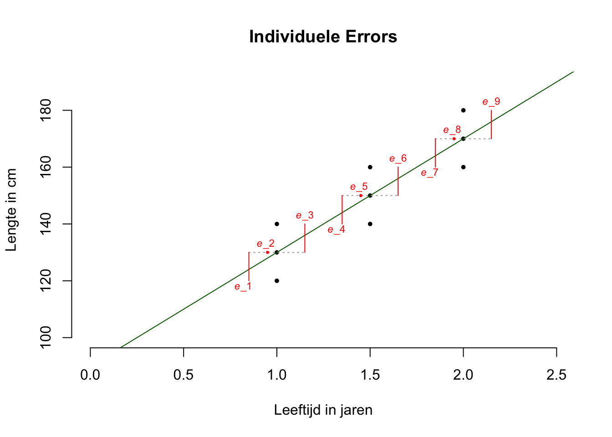
Figuur 5.8: -
De regressie-lijn hebben we zodanig getrokken dat al die individuele errors (\(e_i\), error-termen), gemiddeld gezien, zo klein mogelijk zijn. Dat was ook het doel, een model bouwen, zodanig dat we beter kunnen voorspellen. Wat is de gemiddelde waarde van al die negen error-termen, dus de gemiddelde lengte van een rood streepje? Ik vraag hier dus naar de standaardafwijking voor de errors. Natuurlijk gaat (berekenen we) dat via de variantie voor de error (\(S_e^2\)):
\(\:\:\:\:\:\:S_e^2 = \frac{SSE}{n-p-1}\) of:
\(\:\:\:\:\:\:S_e^2 = \frac{\sum\limits^{i=n}_{i=1}{(Y_i-\hat{Y}_i)^2}}{n-p-1}\)
De formule voor variantie van de error. Hierbij staat ‘\(p\)’ voor het aantal predictoren in onze regressievergelijking. Wij hebben maar 1 predictor (onafhankelijke variabele), namelijk leeftijd. Als je een meervoudige regressieanalyse zou doen, dan heb je dus ook meer predictoren en dan wordt de waarde van \(p\) dus pas groter. Bij ons kunnen we dus zeggen: \(p=1\). Onder de breukstreep, dus in de noemer, zie je het aantal vrijheidsgraden voor de Error staan (\(dfE = n - p -1\)). We kunnen de formule dus ook anders opschrijven:
\(\:\:\:\:\:\:S_e^2 = \frac{SSE}{dfE}\)
Heel vervelend, maar de variantie voor de error (\(S_e^2\)) noemen we ook ‘Mean Square Error (MSE)’, Een variantie is immers de gemiddelde oppervlakte van alle (voor nu rode) vierkantjes dus:
\(\:\:\:\:\:\:MSE = S_e^2 = \frac{SSE}{dfE}\)
Hoe zit het bij ons aapjes? Invullen geeft:
\(\:\:\:\:\:\:MSE = S_e^2 = \frac{600}{9-1-1} = \frac{600}{7} = 85.71429\)
Dus de error variantie heeft een waarde van \(S_e^2 = 85.71\). Wij willen natuurlijk de standaardafwijking voor de error:
\(\:\:\:\:\:\:S_e = \sqrt{S_e^2} = \sqrt{85.71429} = 9.258201\)
De standaardafwijking van de error (\(S_e\)) heeft dus afgerond een waarde van \(9.26\) (cm). Nu weten we dus eindelijk hoe goed (of hoe slecht) we kunnen voorspellen aan de hand van het regressiemodel in termen van de gemiddelde gokfout. We hebben dus nu nog maar te maken met een gemiddelde gokfout van \(9.26\). Dit is dus ook meteen de gemiddelde afstand van een observatie naar de regressie lijn, de gemiddelde error waarde. We hebben dus de gemiddelde gokfout van \(19.365\) teruggebracht naar een waarde van \(9.26\), ruim \(10\) punten kleiner dus. En dit allemaal aan de hand van een predictor, de variabele leeftijd. Dus twintig procent van de variatie in lengtes kan niet verklaard worden. Misschien als we een nog complexer model bouwen dat we dan nog minder error (\(SSE\)) overhouden. Misschien zou een verklarend model op basis van leeftijd én vitamientjes wel meer dan tachtig procent kunnen verklaren! Multipele Regressie-Analyse is het onderwerp van het volgende hoofdstuk. Maar eerst nog de generalisatie van ons (gevonden) enkelvoudig regressie-model naar de populatie. We mogen dan een leuk effect hebben ontdekt, maar zijn onze resultaten ook significant?
5.5 Betrouwbaarheidsintervallen en Significantietoetsen voor Regressie-Parameters.
We hebben nu het belangrijkste begrip, de proportie verklaarde variantie (\(VAF\)) van een model behandteld. Bij ons geeft de \(VAF\) dus aan welk deel van de totale variatie in lengtescores, verklaard kan worden op basis van variatie in leeftijd-scores. Aan de hand van leeftijd, kunnen we 80 procent van de variatie in lengte verklaren. Deze waarde geldt in ieder geval voor onze steekproef, maar we gaan nu na in hoeverre we onze regressie-vergelijking, dus ons model, kunnen generaliseren naar de populatie. In hoofdstuk 4 hebben we gekeken naar de generalisatie van steekproef-gegevens (statistieken) naar populatie-gegevens (parameters) aan de hand van betrouwbaarheidsintervallen en significantie-toetsen. Gaan we nu weer doen, maar dan dus voor onze regressie-vergelijking. Alhoewel een enkelvoudige regressie-vergelijking twee parameters heeft (het intercept en de slope) is het alleen de slope die iets zegt over het verband tussen \(X\) en \(Y\). Het intercept vertelt je alleen wat de waarde van de hoogte van het snijpunt met de \(y\)-as is, en zegt dus niets over de helling van de lijn. De nadruk ligt dus altijd op de slopes bij regressie.
5.5.1 Betrouwbaarheidsinterval (BI) voor de populatie-slope \(\beta_1\)
Om een betrouwbaarheidsinterval voor een regressiegewicht (\(\beta_i\)) te bouwen (berekenen), heb je nooit een \(H_0\) verwachting nodig. Voor een betrouwbaarheidsinterval in het algemeen heb je nooit een \(H_0\) nodig. Inmiddels komt dit bekend voor hoop ik. Verder is het ‘gevoel’ gewoon hetzelfde, alleen in hoofdstuk \(4\) keken we naar gebeurtenissen zoals het steekproefgemiddelde, nu kijken we naar de steekproefuitkomst de slope! Eerst even onze gevevens over onze enige echte op een rijtje en dan kunnen we knallen en de meest basale ondezoeksvraag (“Wat is de waarde van een ding?”) voor de slope beantwoorden:
Wat is met 95 procent zekerheid de waarde van de populatieslope?
- Onze Steekproefgegevens:
- \(n=9\), \(\overline{Y} = 150\), \(S_y^2 = 375\),
- \(\overline{X} = 1.50\), \(S_x^2 = 0.1875\),
- \(r_{xy} = .8944\),
- \(\hat{Y}_i = 90 + 40 \cdot X_{i}\), (\(b_0 = 90\), \(b_1 = 40\)),
- \(R_{yx}^2 = .80\)
- \(SST = 3000\), \(SSM = 2400\), \(SSE = 600\),
- \(S_e = 9.2582\)
In onze enige echte steekproef hebben we een slope gevonden met een waarde van \(b_1 = 40\) gebaseerd op een steekproef van \(n = 9\). Als je nu al de onderzoeksvraag moest beantwoorden, maar met slechts één enkel getal, een puntschatting dus, wat zou jij dan zeggen qua waarde voor de populatieslope (\(\beta_1\))? Stel dat je nu nog veel meer steekproeven zou nemen. Denk dus weer aan een grabbelton waarvan je alleen weet hoe de eerste en enige echte steekproef die je daaruit hebt genomen, eruit ziet, voor de rest weet je niets. Wat zou jij zeggen als je nu een nieuwe steekproef neemt en opnieuw de slope zou uitrekenen, welke waarde zou je dan verwachten? Ik hoop hetzelfde als wat je in je eerste steekproef hebt gevonden (\(b_1 = 40\)). Stel dat je dit spel eindeloos herhaalt en je rekent je voor al die steekproeven de waarde van hun (individuale steekproef-) slope uit, zeg duizend keer (liefst nog vaker natuurlijk). Als je dit werkenlijkzou doen, heb je weer een steekproevenverdeling, maar dan dus eentje voor de slope! Elke keer als je een steekproef neemt, is de verwachting dus dat je een waarde rond de \(40\) zal vinden (want dat vond je ook in je enige echte steekproef). Dus al die duizenden slopes liggen qua waarde rond de \(40\), de één wat dichter bij dan de andere. Door steekproef-fluctuatie zal de waarde dus rond \(40\) variëren. Om te weten met hoeveel variatie de slope zal variëren, kun je de standaard error (voor de slope) uitrekenen:
\(\:\:\:\:\:\:SE_{b_1} = \frac{S_e}{\sqrt{(n-1)\cdot S_x^2}}\) invullen geeft:
\(\:\:\:\:\:\:SE_{b_1} = \frac{9.2582}{\sqrt{(9-1)\cdot 0.1875}}=\frac{9.2582}{\sqrt{8\cdot 0.1875}} = \frac{9.2582}{\sqrt{1.5}} = 7.5593\)
Afgerond heeft de standaard error voor \(b_1\) dus een waarde van \(7.56\). Nu weten we hoe sterk de gebeurtenis \(b_1\) zal varieëren in de steekproevenverdeling (bij herhaalde steekproeftrekking) en kunnen we dus een schets maken van de steekproevenverdeling. De standaard error voor de slope (\(SE_{b_1}\)) kun je als volgt interpreteren: Het is de gemiddelde gokfout die je maakt als je verwacht dat de slope \(40\) zal zijn en dat dus telkens als beste gok of verwachting neemt. Alle steekproefuitkomsten zullen daar dan, gemiddeld gezien, \(7.56\) punten (of centimeters in ons geval) naast zitten. Hoe kleiner de \(SE\), hoe minder variatie, en hoe stabieler je uitkomst dus zal zijn bij herhaling van steekproeftrekking. Hoe groter je steekproef (de enige echte) hoe kleiner je \(SE\) zal zijn, net zoals bij \(SE\)’s voor gemiddelden \(SE_{\bar{y}}\) zoals in hoofdstuk 4. Hieronder dus de steekproevenverdeling voor de slope.
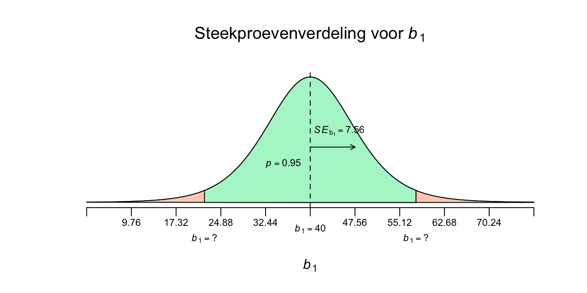
Figuur 5.9: -
Om de onderzoeksvraag volledig te beantwoorden moeten we eerst nog de onder en bovengrens voor het betrouwbaarheidsinterval voor de ware slope vinden en dan wel met een confidence level van \(95\) procent. Of natuurlijk de margin of error, \(m\), zodat we weten hoeveel de ware slope, met \(95\) procent zekerheid naast je puntschatting kan zitten. Ook slopes gedragen zich volgens de \(t\)-verdeling, dus we kunnen de \(t\)-tabel gebruiken om op te zoeken hoeveel standaard errors we naar links en naar rechts moeten wandelen om de onder en bovengrens te bereiken. Bij het opzoeken gebruiken we het aantal vrijheidsgraden die bij de ERROR hoort: \(dfE = n-p-1 = 9-1-1 = 7\). Bedenk nog even dat bij een betrouwbaarheidsinterval altijd een symmetrische driedeling hoort met, in ons geval, een middenstuk van 95 procent en twee staartjes van 2.5 procent. Dus je kan zoeken bij een rechterstaart van met \(p = .025\) en \(df = 7\).
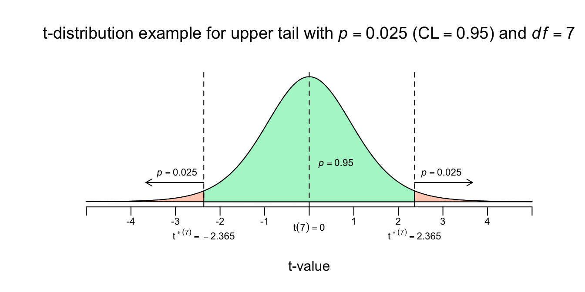
Figuur 5.10: -
We zijn er bijna. Nu weten we het aantal standaard errors dat we moeten wandelen (\(t_7^{*} = 2.365\)). We gaan dus \(2.365\) SE’s naar links en naar rechts vanuit het midden, met de formule erbij geeft dat:
Lower and Upperbound for Confidence Interval (\(CI\)) for population slope (\(\beta_1\)):
\(\:\:\:\:\:\:b_1 \pm t^{*} \cdot SE_{b_{1}}\:\:\:\:\) en \(\:\:\:\:df = n-p-1\)
Voor de ondergrens krijgen we:
\(\:\:\:\:\:\:40 - 2.365 \cdot 7.56\)
\(\:\:\:\:\:\:40 - 17.88 = 22.12\)
Dus voor de bovengrens krijgen we:
\(\:\:\:\:\:\:40 + 2.365 \cdot 7.56\)
\(\:\:\:\:\:\:40 + 17.88 = 57.88\)
Nu kunnen we tot een conclusie overgaan. We hebben één steekproef getrokken en vonden een waarde van \(b_1 = 40\) en we kunnen dus nu stellen dat bij steekproef-herhaling, we met 95 procent zekerheid, een nieuwe steekproefslope zullen vinden tussen de waarden \(b_1 = 22.12\) en de \(b_1 = 57.88\). We generaliseren deze uitspraak dus ook naar de populatieslope: Met \(95\) procent zekerheid ligt de waarde van \(\beta_1\) dus ergens tussen de waarden \(22.12\) en de \(57.88\). Of voor in je artikel:
\(\:\:\:\:\:\:95\%\:\:CI_{\beta_1} = [22.12;\:57.88]\)
We kunnen dus nu zeggen dat die ware slope dus ergens tussen de \(22.12\) en de \(57.88\) zit qua waarde. Officieel is de interpretatie van een betrouwbaarheidsinterval iets ingewikkelder, net zoals bij gemiddelden, maar in het gebruik kom je het gewoon tegen zoals hierboven beschreven. Dus laten we niet moeilijker doen dan nodig. Onze uitkomst wil dus zeggen dat in het ‘slechtste’ geval de lijn een helling heeft van \(22.12\) en dat twee aapjes dus naar verwachting dus \(22.12\) cm in lengte verschillen als ze in leeftijd precies één jaar verschillen. Terwijl als de slope juist een waarde van \(57.88\) had gehad zouden twee aapjes, die één jaar in leeftijd van elkaar verschillen dus maar liefst \(57.88\) cm qua lengte verschillen, een stuk meer dus. Of anders gezegd de ware regressielijn zou in het slechtste geval een helling hebben van \(22.12\) en in het geval met het meeste verband dus een helling van \(57.88\), een stuk steiler dus. Hadden we een een stelsel van hypotheses nodig om een betrouwbaarheidsinterval te maken? Nee, maar we kunnen wel een uitspraak doen over een \(H_0\) op basis van het gevonden interval, laten we dat meteen maar doen, kijk eerst maar even naar het plaatje met het \(95 \%\) betrouwbaarheidsinterval:
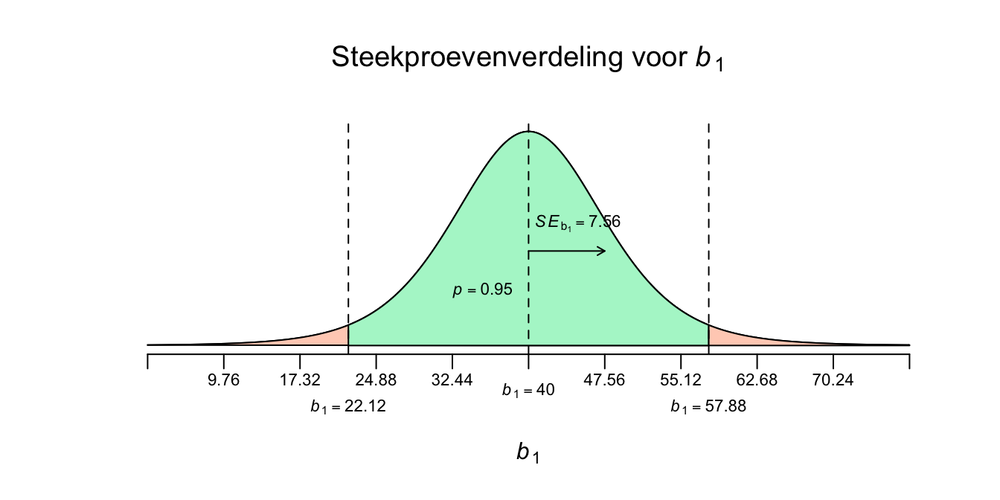
Figuur 5.11: -
De \(H_0\) die zegt natuurlijk dat er geen verband of geen voorspelling mogelijk is voor lengte, op basis van leeftijd. Hoe ziet dan een popluatiepuntenwolk eruit als geen verband is? De puntenwolk ligt dan horizontaal (ovaal of gewoon rond), omdat dan, voor iedere waarde van \(X\) de gemiddelde waarde van \(Y\) hetzelfe is. Dus als je bijvoorbeeld de waarde \(X = 1.75\) neemt, zie je dat de \(Y\)-waarden daarboven variëren en dat het gemiddelde rond ter hoogte van \(Y=150\) ligt. Zo ook voor de andere waarden van \(X\). Het maakt dus niet uit wat de \(X\)-waarde is, de voorspelling voor \(Y\) blijft altijd hetzelfde, dus geen verband.
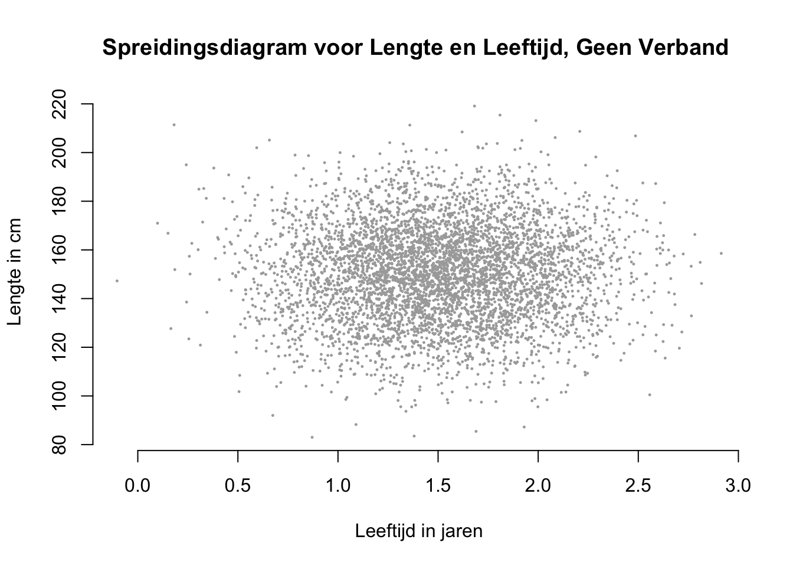
Als een puntenwolk horizontaal gepositioneerd is dan ligt de best passende lijn dus óók horizontaal. Zie plaatje hieronder met een horizontale regressielijn. Dus als je ergens op die lijn staat en je wandelt één eenheid (qua \(X\)) naar rechts, hoef je dus niet omhoog of omlaag want de slope is daar dus gelijk aan \(0\).
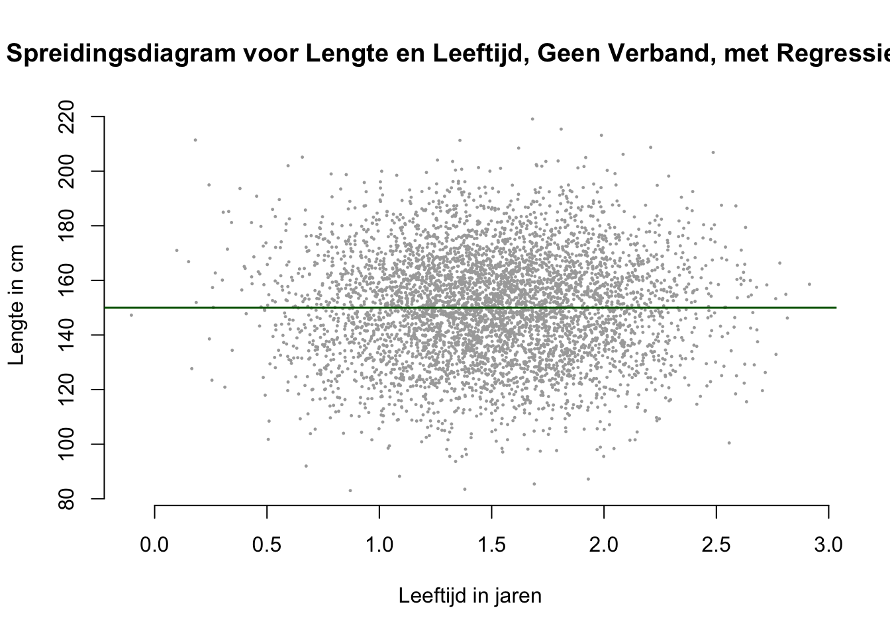
De \(H_0\) die stelt dus dan ook: \(\beta_1=0\). Een helling of slope van \(0\) betekent dus dat er geen verband is. Kijk nu nog een keer naar ons \(95\%\) Betrouwbaarheidsinterval hieronder nog een keer.
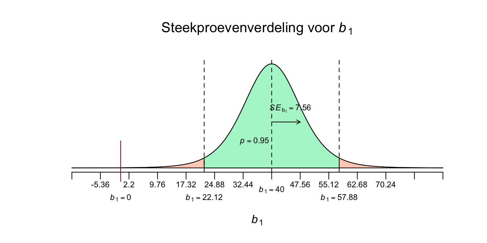
Figuur 5.12: -
En kom je die waarde tegen als je van je linker grens naar je rechter grens wandelt? Nee, de \(H_0\)-verwachting (\(b_1 = 0\)) kom je niet tegen en is die nul-waarheid dus ook onwaarschijnlijk, en daarmee te verwerpen! Omdat we de \(H_0\)-verwachting (\(b_1 = 0\)) niet tegenkomen, lijkt de alternatieve hypothese dus waarschijnlijk (\(H_1:\) \(\beta_1 \ne 0\)). We kunnen dus aannemen (op basis van het \(95\%\) \(CI\)) dat er een verband is (oudere aapjes zijn over het algemeen langer, jongere aapjes over het algemeen kleiner) en dat je dus wel degelijk leeftijd kan gebruiken om lengte te voorspellen!
5.5.2 Significantietoets voor de Populatie Slope
Beetje flauw dus als je al weet, vanwege de vorige paragraaf, welke hypothese het meest waarschijnlijk is gegeven onze enige echte steekproef. We doen maar even of ons neusje bloedt en toetsen de boel (het stelsel van hypothese) nu netjes via een significantietoets.
Onderzoeksvraag:
Is er een verband tussen leeftijd en lengte in de populatie aapjes? Of;
Kunnen we op basis van leeftijd, lengte voorspellen?
Is er een effect leeftijd op lengte?
Weer allemaal hetzelfde natuurlijk en gesteld in termen van \(H_1\), maar dan wel met een vraagteken. Besef ook dat ik de onderzoeksvraag tweezijdig heb geformuleerd, omdat ik in het midden laat of het verband positief of negatief is. Lang leve Pipi Langkaus dus;
Stelsel van hypotheses in woorden:
\(\:\:\:\:\:\:H_0\) : Geen verband tussen leeftijd en lengte
\(\:\:\:\:\:\:H_1\) : Wel verband tussen leeftijd en lengte
Stelsel van hypotheses formeel:
\(\:\:\:\:\:\:H_0\) : \(\beta_1 = 0\)
\(\:\:\:\:\:\:H_1\) : \(\beta_1 \ne 0\)
of;
\(\:\:\:\:\:\:H_0\) : \(\rho_1 = 0\)
\(\:\:\:\:\:\:H_1\) : \(\rho_1 \ne 0\)
Bij dit laatste stelsel denk je meer in termen van correlatie, maar als er een correlatie is, dan is er ook regressie mogelijk, wat mij betreft nog steeds allemaal één pot nat! Goed, daar gaan we. We toetsen de \(H_0\), altijd en altijd, dus laat die ook even waar zijn, en vergeet nog eventjes de enige echte steekproef. Denk dus maar aan een grabbelton met aapjes waarvoor geldt dat er _geen_verband is tussen leeftijd en lengte. Een ton waarvoor dus een populatie-puntenwolk geldt die horizontaal ligt. Zie plaatje:

Figuur 5.13: -
Als de \(H_0\) waar zou zijn, en je zou dan een steekproef (\(n=9\)) nemen uit deze ton en de slope uitrekenen, welke waarde zou je dan verwachten voor je steekproef resultaat voor \(b_1\), de slope? Als er geen verband is, zou je natuurlijk (idealiter of ongeveer) \(b_1 = 0\) moeten vinden. Ik heb voor de grap maar es \(6\) steekproefjes genomen uit die nul-ton en dus zes keer de slope berekend (zie hieronder), al zijn ze niet precies nul, maar ze liggen wel dichtbij de waarde nul. Je ziet dus dat de slope zal variëren rond nul.
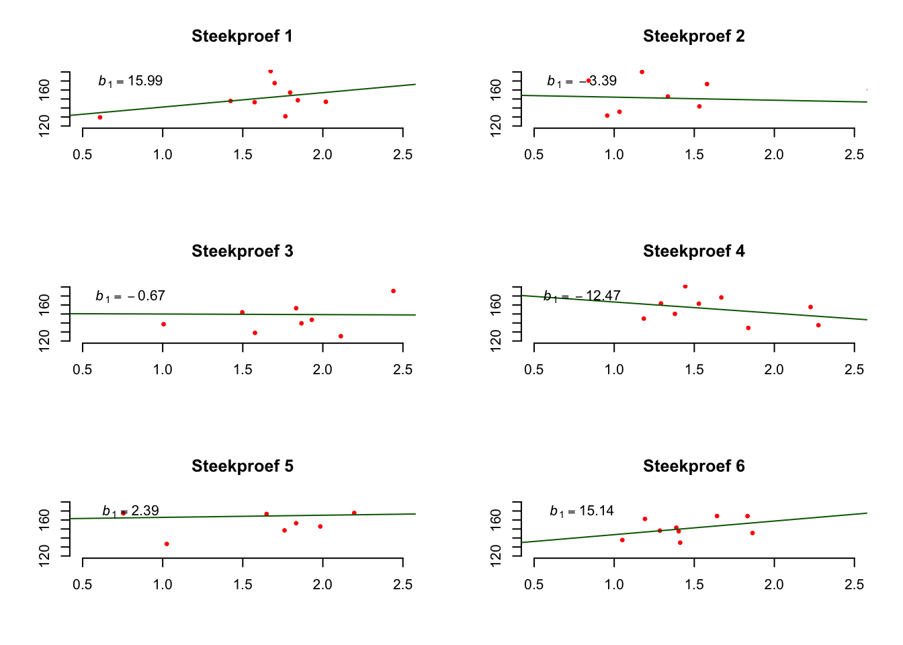
Figuur 5.14: -
Wat denk jij? zou de uitkomst \(b_1 = 40\) een fiets zijn? Ik denk het wel! Laten we maar gaan toetsen.
5.5.2.1 De t-toets voor een regressieslope
Voor de onderzoeksvraag of er een verband is tussen leeftijd en lengte in de populatie aapjes, gebruik ik nu even het volgende stelsel van hypothese (zodat we vooral in termen van slope kunnen denken, maar het maakt dus niet zoveel uit):
\(\:\:\:\:\:\:H_0\) : \(\beta_1 = 0\)
\(\:\:\:\:\:\:H_1\) : \(\beta_1 \ne 0\)
- Met onze enige echte steekproefgegevens:
- \(n=9\), \(\overline{Y} = 150\), \(S_y^2 = 375\),
- \(\overline{X} = 1.50\), \(S_x^2 = 0.1875\),
- \(r_{xy} = .8944\),
- \(\hat{Y}_i = 90 + 40 \cdot X_{i}\), (\(b_0 = 90\), \(b_1 = 40\)),
- \(R_{yx}^2 = .80\)
- \(SST = 3000\), \(SSM = 2400\), \(SSE = 600\),
- \(S_e = 9.2582\)
- Stap 1: Schets de steekproevenverdeling onder aanname dat de \(H_0\) waar is, we toetsen immers de ‘houdbaarheid’ van de \(H_0\):
- Zet je \(H_0\) verwachting (\(b_1 = 0\)) in het midden
- Bereken de standaard error voor de slope \(SE_{b_1} = \frac{S_e}{\sqrt{(n-1) \cdot S_x^2}}\)
- \(SE_{b_1} = \frac{9.2582}{\sqrt{8 \cdot 0.1875}} = 7.56\)
- Zet je enige echte steekproef-slope erin (\(b_1 = 40\)) en beoordeel zelf vast grofjes of je (voldoende) bewijs (verschil) ziet om de \(H_0\) te verwerpen:
In geval van een links of rechtszijdige toetsing (hier dus niet), kijk je of de slope ook echt daadwerklijk links of rechts zit van \(b_1 = 0\) zoals verwacht onder de alternatieve hypothese, zo niet, zit hij aan de verkeerde kant, kan je dus al meteen stoppen, omdat je dan al weet dat het niet in die richting zit zoals jij gesteld had in de alternatieve hypothese (en daardoor kun je sowieso de \(H_0\) niet verwerpen).
Kijk vast hoeveel standaard errors de enige echte slope van het midden verwijderd zit.
Maak een schatting van je éénzijdige \(p\)-waarde (dus weg van het midden), bij ons dus de rechter staart, zie hieronder, hij is wel erg klein vind je niet?
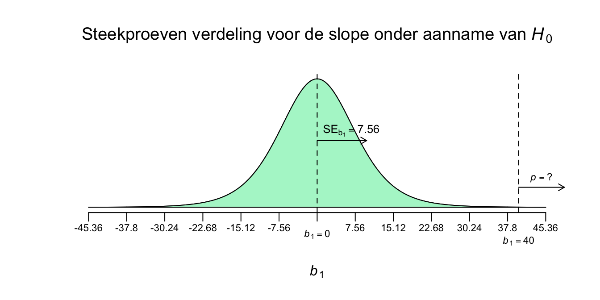
Figuur 5.15: -
- Stap 2: We gaan over tot standaardizatie (om uiteindelijk de \(p\)-waarde te kunnen opzoeken. Een slope gedraagt zich volgens de \(t\) verdeling met het aantal vrijheidsgraden voor de Error (\(dfE = n - p -1\), met \(p\) voor het aantal predictoren dus, hier alleen leeftijd). Schets nu de t-verdeling en
- Bereken je bijbehorende toetsstatistiek, jouw \(t\)-waarde dus. Ook hier betekent ‘\(t\)’ gewoon het aantal standaard errors dat onze slope weg van het midden (de \(H_0\)-verwachting) zit.
- \(t(df) = \frac{b_1}{SE_{b_1}}\) met \(dfE = n-p-1\)
- \(t(df) = (40)/7.56 = 5.291\) met \(df = 9-1-1= 7\) dus;
- \(t(7) = 5.29\)
- \(t(df) = \frac{b_1}{SE_{b_1}}\) met \(dfE = n-p-1\)
- Zet je \(t\)-waarde in de schets en zoek de juiste éénzijdige \(p\)-waarde op (bij het juiste aantal vrijheidsgraden) en zet de gevonden \(p\)-waarde bij de rechter staart in je schets.
- Onze toetstatiek (\(t^(7) = 5.29\)) zit tussen de \(t^{*}(7) = 4.785\) en de \(t^{*}(7) = 5.408\) en natuurlijk zoek je eerst de rij met het juiste aantal vrijheidsgraden op, voor \(df = 7\). Omdat die kleinere \(t\)-waarde, een grotere rechterstaart (\(p=.0010\)) heeft dan die van ons (\(p=??\)), en de grotere \(t\)-waarde juist een kleinere staart (\(p=.0005\)) heeft dan die van ons (nog steeds \(p=??\)), ligt onze \(p\) natuurlijk daartussen (“Ja ja, best lastig.” zei Flip). Dus;
- \(t^(7) = 5.29\), \(.0005 < p < .0010\) (éénzijdig)
- Is je alternatieve hypothese éénzijdig, dan ben je klaar en kun je overgaan tot een beslissing, op basis van je éénzijdige \(p\)-waarde.
- Is je alternatieve hypothese twéézijdig, dan vermenigvuldig je jouw gevonden \(p\)-waarde nog met \(2\) voordat je kunt overgaan tot een beslissing. Wij moeten dus nog even met \(2\) vermenigvuldigen, dus bij ons:
- \(t^(7) = 5.29\), \(.0010 < p < .0020\) (twéézijdig).
- Weet jij nog wat de toetswaarden waren bij de toetsing van de correlatie (\(r_{xy}\)) in hoofdstuk 4? Ik bedoel maar, regressie of correlatie, allemaal één pot nat!
- \(t^(7) = 5.29\), \(.0010 < p < .0020\) (twéézijdig).
- Bereken je bijbehorende toetsstatistiek, jouw \(t\)-waarde dus. Ook hier betekent ‘\(t\)’ gewoon het aantal standaard errors dat onze slope weg van het midden (de \(H_0\)-verwachting) zit.
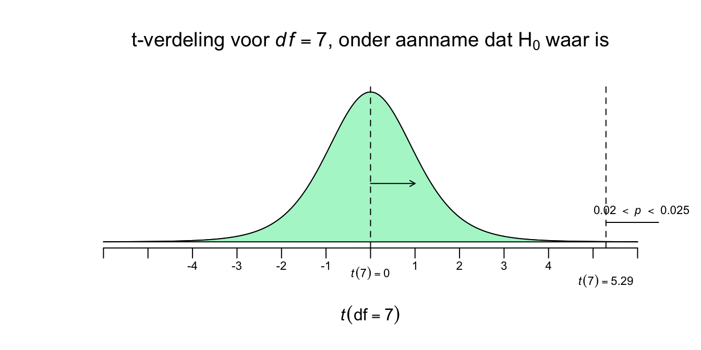
Figuur 5.16: -
Conclusie:
We hebben nu dus de juiste twéézijdige \(p\)-waarde te pakken. Die is behoorlijk klein, namelijk zelfs iets kleiner dan twee tiende procent (\(.0010 < p < .0020\)). Dit betekent, als er in het écht geen verband is, er een heel kleine kans bestaat, dat wanneer je een steekproef trekt, dat je een slope extremer dan een waarde van \(b_1 = 40\) (of extremer dan \(b_1 = \text{-}40\), maar dan wel links daarvan) vindt. En tóch hebben wíj hem gevonden. Hoe raar en onverwachts. Dus gegeven dat de \(H_0\) waar is, is onze steekproefuitkomst (\(b_1 = 40\)) behoorlijk onverwachts en we schrikken er dus een beetje van.
When \(p\) is low \(H\)-O must go!
ALs je met een significantieniveau van \(\alpha = .05\) hanteert bij toetsing, kunnen we dus de \(H_0\) verwerpen en stellen dat onze slope (\(b_1 = 40\)) significant afwijkt van de waarde \(b_1=0\) (zoals onder \(H_0\) verwacht). We nemen de gevonde afwijking dus serieus en kunnen dus het effect generaliseren en zeggen dat de slope dus in de populatie ook van \(0\) zal afwijken (en positief is, al stelde de \(H_1\) dit strikt genomen niet, maar we zeggen het vaak wel!). Ook als we strenger waren geweest bij toetsing en een kleinere \(\alpha\) hadden gekozen (zolang die maar niet onder de \(\alpha =.002\) komt), zou het resultaat nog steeds significant zijn.
5.5.3 Betrouwbaarheidsinterval en Toetsing van het Intercept
Het intercept (\(\beta_0\) of \(b_0\)) in een regressievergelijking heeft niks met het verband te maken tussen onafhankelijke en de afhankelijke variabele. In die zin dus niet relevant. Het intercept is normaal gezien te interpreteren als de voorspelde waarde van \(Y\) (dus \(\hat{Y}\)) voor een case (aapje) die op de predictor variabele nul scoort. In geval van onze aapjes heeft het intercept een waarde van \(b_0 = 90\) en wiskundig zou je het dus kunnen interpreteren als de gemiddelde of voorspelde lengte bij geboorte (als \(X=0\).
\(\:\:\:\:\:\:\hat{Y}_i = 90 + 40 \cdot X_i\)
\(\:\:\:\:\:\:\hat{Y}_{x=0} = 90 + 40 \cdot 0 = 90\) of algemeen:
\(\:\:\:\:\:\:\hat{Y}_{x=0} = b_0 + b_1 \cdot 0 = b_0\)
Het enige probleem bij ons is dat onze aapjes een leeftijd hebben tussen de \(1\) en \(2\) jaar. De puntenwolk ligt dus boven de \(x=1\) en \(x=2\) en niet boven \(X=0\)! Het intercept ligt dus niet in de puntenwolk. Misschien is onze regressielijn alleen reeel boven onze \(X\)-waarden. We weten het niet want we hebben het niet onderzocht. Een regressielijn doortrekken tot (ver) buiten je wolk en die lekker toch gebruiken als voorspelling van \(Y\) bij \(X\)-waarden, die je nog nooit bent tegengekomen, noem je extrapolatie (‘extra’ van buiten, en ‘polatie’ wan waarde toekennen). Het zou ook raar zijn om te zeggen dat een aapje van \(X=10\) jaar, \(490\) cm zou zijn;
\(\:\:\:\:\:\:\hat{Y}_{x=10} = 90 + 40 \cdot 10 = 490\)
Anyway, you moet dus oppassen als je \(Y\)-waarden toekent op basis van een regressiemodel, bij waarden van \(X\) waar je niks over weet. Natuurlijk kunnen we toetsen of het intercept echt van \(0\) afwijkt, maar goed het zecht dus niets over het verband, het zegt hooguit iets of aapjes dus echt een gemiddelde lengte groter dan \(0\) hebben als ze geboren worden. Ik mag hopen van wel, maar om dit te doen hadden we dus eigenlijk ook aapjes in onze steekproef nodig die net geboren waren, hoe schattig zou dat zijn. In de JASP opgaven, laat ik zien hoe we toch het intercept betekenisvol kunnen maken als we geen \(0\)-waarden voor \(X\) hebben gemeten. Maar omdat een \(CI\) of toetsing dus kan, doe ik het even voor, in een wat sneller tempo, je hebt inmiddels heel wat oefening achter de rug.
5.5.3.1 Betrouwbaarheidsinterval voor het Populatie Intercept (\(\beta_0\))
Onderzoeksvraag: Wat is met \(95\) procent zekerheid het ware populatie intercept?
- Met onze enige echte steekproefgegevens:
- \(n=9\), \(\overline{Y} = 150\), \(S_y^2 = 375\),
- \(\overline{X} = 1.50\), \(S_x^2 = 0.1875\),
- \(r_{xy} = .8944\),
- \(\hat{Y}_i = 90 + 40 \cdot X_{i}\), (\(b_0 = 90\), \(b_1 = 40\)),
- \(R_{yx}^2 = .80\)
- \(SST = 3000\), \(SSM = 2400\), \(SSE = 600\),
- \(S_e = 9.2582\)
- Confidence Interval for Population Intercept (\(\beta_0\))
- lower and upperbound: \(b_0 \pm t_{dfE}^{*} \cdot SE_{b_0}\)
- Met \(SE_{b_0} = s_e \cdot \sqrt{\frac{1}{n} + \frac{\bar{x}^2}{(n-1)\cdot s_x^2}}\)
- invullen geeft: \(SE_{b_0} = 9.2582 \cdot \sqrt{\frac{1}{9} + \frac{1.5^2}{(9-1) \cdot 0.1875}}\)
- \(SE_{b_0} = 9.2582 \cdot \sqrt{\frac{1}{9} + \frac{2.25}{1.5}}\)
- \(SE_{b_0} = 9.2582 \cdot \sqrt{1/9 + 2.25/1.5}= 11.75139\)
- \(dfE = n-p-1 =9-1-1 = 7\)
- de \(t\)-tabel geeft voor \(CL_{95\%}\), \(t^{*}(7) = 2.365\)
- Met \(SE_{b_0} = s_e \cdot \sqrt{\frac{1}{n} + \frac{\bar{x}^2}{(n-1)\cdot s_x^2}}\)
- lower and upperbound: \(90 \pm 2.365 \cdot 11.75139\)
- lower and upperbound: \(90 \pm 27.79204\)
- \(CI_{95\%} \: \beta_0:\) \([62.21;\: 117.79]\)
- lower and upperbound: \(b_0 \pm t_{dfE}^{*} \cdot SE_{b_0}\)
Zo snel kan het dus, een betrouwbaarheidsinterval. Als conclusie kunnen we dus nu zeggen dat het ware intercept met \(95\) procent zekerheid ergens tussen de \(62.71\) en de \(117.79\) ligt, maar of we dit als gemiddelde geboortelengte mogen interpreteren weten we dus niet, niet doen dus!
5.5.3.2 Significantietoets voor het Populatie Intercept (\(\beta_0\))
Onderzoeksvraag: Wijkt het ware populatie intercept (\(\beta_0\)) echt af van \(0\)?
Om dit te onderzoeken (analyseren) stellen we eerst het bijbehorend stelsel van hypotheses op:
\(\:\:\:\:\:\:H_0\) : \(\beta_1 = 0\)
\(\:\:\:\:\:\:H_1\) : \(\beta_1 \ne 0\)
- Met onze enige echte steekproefgegevens:
- \(n=9\), \(\overline{Y} = 150\), \(S_y^2 = 375\),
- \(\overline{X} = 1.50\), \(S_x^2 = 0.1875\),
- \(r_{xy} = .8944\),
- \(\hat{Y}_i = 90 + 40 \cdot X_{i}\), (\(b_0 = 90\), \(b_1 = 40\)),
- \(R_{yx}^2 = .80\)
- \(SST = 3000\), \(SSM = 2400\), \(SSE = 600\),
- \(S_e = 9.2582\)
- \(t\)-test for Population Intercept (\(\beta_0\))
- \(t(dfE) = \frac{b_0}{SE_{b_0}}\)
- Met \(SE_{b_0} = s_e \cdot \sqrt{\frac{1}{n} + \frac{\bar{x}^2}{(n-1)\cdot s_x^2}}\)
- invullen geeft: \(SE_{b_0} = 9.2582 \cdot \sqrt{\frac{1}{9} + \frac{1.5^2}{(9-1) \cdot 0.1875}}\)
- \(SE_{b_0} = 9.2582 \cdot \sqrt{\frac{1}{9} + \frac{2.25}{1.5}}\)
- \(SE_{b_0} = 9.2582 \cdot \sqrt{1/9 + 2.25/1.5}= 11.75139\)
- \(dfE = n-p-1 =9-1-1 = 7\)
- Met \(SE_{b_0} = s_e \cdot \sqrt{\frac{1}{n} + \frac{\bar{x}^2}{(n-1)\cdot s_x^2}}\)
- Bereken je bijbehorende toetsstatistiek;
- \(t(7) = \frac{b_0}{SE_{b_0}} = 90/11.75139=7.66\)
- Zoek eerst éénzijdige \(p\)-waarde op in de \(t\)-tabel bij \(df = 7\)
- Onze t-waarde valt buiten de tabel, onze \(p\) is dus kleiner dan de kleinste staart uit de tabel (\(p =.0005\))
- \(p < .0005\) (éénzijdig)
- \(p < .0010\) (tweezijdig)
- \(t(dfE) = \frac{b_0}{SE_{b_0}}\)
We kunnen dus stellen dat ons intercept (\(b_0=90\)) significant afwijkt van \(0\) omdat onze \(p\)-waarde hartstikke klein is. Dus ook in de populatie zal het intercept (\(\beta_0\)) hoogstwaarschijnlijk afwijken van \(0\). Maar goed, waarom zou hier je toetsen? Wil je bewijzen dat aapjes echt langer zijn dan \(0\) cm als ze geboren zijn?
5.6 Toetsing van een Model als ‘Geheel’
5.6.1 Toetsing van het regressie_model_ aan de hand de hand van een ANOVA tabel
In de statistiek hebben we vaak met (veel) grotere voorspelmodellen te maken, zoals bij een Meervoudige Regressie Analyse (MRA), dus met twee of meer predictoren. Bij toesting kijken we dan altijd eerst of het model als geheel, dus het gezamenlijke effect van de predictoren (uitgedrukt in \(R^2\), de \(VAF\)), significant bijdraagt aan de voorspelling en als dat een ‘Ja’ is, dan pas kijken we naar het effect van de individuele predictors op de afhankelijke variabele aan de hand van de slopes. Dus van overkoepelend naar specifiek. Bij een Enkelvoudige Regressie Analyse (ERA) is het effect van het model als geheel hetzelfde als het effect van de énige predictor, want het model bestaat maar uit een predictor. Dus hier is geen sprake van een stappenplan qua toetsing, het maakt hier niet uit. Wat je dus moet onthouden is dat er dus drie manieren zijn bij ERA om de significantie van het effect van de predictor te bekijken;
- Significantie toets voor \(\rho_{y \cdot x_1}^2\:\:\) (rho-square, dus de \(VAF\) voor het ‘gehele’ model)
- Dit doe je aan de hand van een ‘Analysis of Variance’ (ANOVA) en de \(F\)-toets.
- Significantietoets voor \(\beta_1\)
- \(t\)-toets voor slope, of als je van \(BI\)’tjes houdt;
- Betrouwbaarheidinterval voor \(\beta_1\)
- \(t\)-interval voor slope
Stel dat je een regressieanlyse zou doen met twee predictoren dan heb je wel te maken met een stappenplan, die er dus als volgt uitziet:
- Significantie toets voor \(\rho_{y \cdot x_1 x_2}^2\:\:\) (rho-square voor het ‘gehele’ model)
- Dit doe je weer aan de hand van een ‘Analysis of Variance’ (ANOVA), dus de \(F\)-toets.
- Significantietoets voor \(\beta_1\)
- \(t\)-toets voor slope, of;
- Betrouwbaarheidsinterval voor \(\beta_1\)
- \(t\)-interval voor slope
- Significantietoets voor \(\beta_2\)
- \(t\)-toets voor slope, of;
- Betrouwbaarheidsinterval voor \(\beta_2\)
- \(t\)-interval voor slope
Dit, en veel meer, gaan we natuurlijk doen in het volgende Hoofdstuk. Maar omdat een variantie analyse ook bij enkelvoudige regressie analyse kan, doen we ook nog de ANOVA met de bijbehorende \(F\)-toets. Dit doen we aan de hand van de ANOVA-tabel voor het model als geheel, al hebben wij dus maar één predictor en weten dus allang, hoe de vork in de steel zit! Ik heb al vaker gezegd dat het allemaal één pot nat is, en dat meen ik ook, dus let vooral op welke uitkomsten vergelijkbaar zijn met de uitkomsten van de toetsing van de correlatie tussen leeftijd en lengte in Hoofdstuk 4 en de uitkomsten van de \(t\)-toets voor de slope bij onze regressie.
ANOVA staat voor Analysis of Variance, met de bijbehorende \(F\)-test kijkt specifiek of het verklaarde gedeelte van de variatie in \(Y\) scores (\(R_{model}^2\)) significant van nul afwijkt. Om de \(F\)-test zelf te kunnen doen, moeten we eerst de kwadratensommen (die we eerder hebben uitgerekend; \(SST\), \(SSM\) en \(SSE\)) verder bewerken. Eerder had ik het over een ‘tuin’ vol met systematische en error variatie voor de opdeling van de \(SST\) in het stuk \(SSM\) en \(SSE\). Normaal gezien representeren we deze opdeling aan de hand van een Venn-diagram. Een Venn-diagram is plaatje met meestal cirkels (ook ovalen of andere vormen), waarbij de overlap tussen de cirkels laat zien of iets ‘iets’ gemeenschappelijk is:
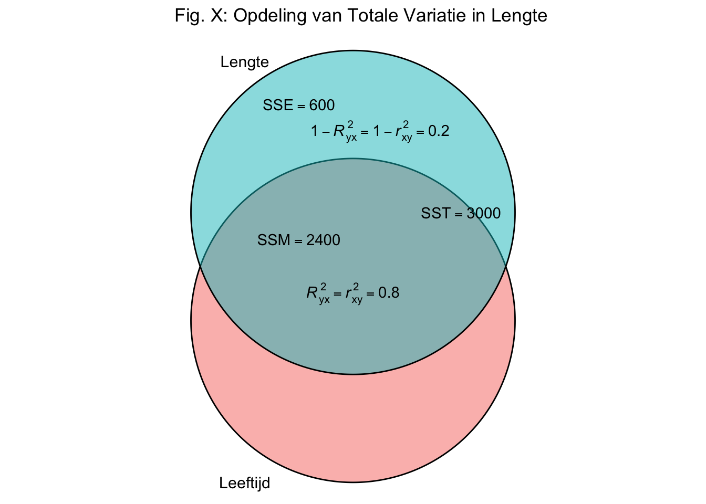
Figuur 5.17: -
De bovenste cirkel staat voor alle variatie (dus \(100\%\)) in de afhankelijke variabele, bij ons dus de variabele lengte (\(Y\)) en heeft dus een ‘oppervlakte’ van \(SST = 3000\). Ook de onafhankelijke variabele, leeftijd (\(X\)), variëert. De overlap tussen de twee cirkels bestrijkt het verklaarde gedeelte en laat dus zien welk deel van de totale variatie in \(Y\) samengaat met de variatie in \(X\). Goed laten we toetsen of het verkaarde gedeelte (\(R^2 = .80\)) significant afwijkt van nul.
\(\:\:\:\:\:\:H_0\) : \(\rho_{yx}^2 = 0\)
\(\:\:\:\:\:\:H_1\) : \(\rho_{yx}^2 > 0\)
Hier hoort dus de onderzoeksvraag bij of het model, gebaseerd op leeftijd, als ‘geheel’ variatie in lengte verklaard. En eigenlijk gewoon weer hetzelfde als altijd: is er verband? Hier is één of tweezijdigheid van de alternatieve hypothese een beetje verwarrend. de Alternatieve hypothese lijkt rechtszijdig en dus éénzijdig. Maar schijn bedriegt hier. Een correlatie \(r_{xy}\) kan negatief zijn, maar kan een VAF, dus \(r_{xy}^2\) ook negatief zijn? Nee nooit, want een kwadraat van een (negatief) getal is altijd positief. Dus het verband kan wel negatief zijn maar de VAF nooit. Een model voorspeld gewoon óf hij doet dat niet. Of het verband nou negatief is of positief, voor voorspellen maakt dat niet uit.
- Onze gegevens, die we nodig hebben voor de ANOVA tabel (voor enkelvoudige regressie analyse) en de bijbehorende \(F\)-toets te doen:
- \(n = 9\)
- \(SST = 3000\), \(SSM = 2400\), \(SSE = 600\)
- \(R_{yx}^2 = .80\) (ik heb graag het ‘y’-tje vooraan staan, omdat die de focus heeft, die willen we verklaren, maar het maakt natuurlijk geen donder uit, ‘\(xy\)’ of ‘\(yx\)’)
Om het stelsel van hypotheses te toetsen, maken we eerst een ANOVA tabel aan met de opdeling in kwadratensommen. Hieronder vast een ONaangevulde ANOVA tabel, maar wel vast met de formules om de tabel verder af te kunnen maken. Goed, we willen de toetsstatistiek \(F\) berekenen, zodat we een \(p\)-waarde kunnen opzoeken (JASP doet natuurlijk alles voor ons, maar wij doen het nu even zelf!). Net zoals je het opzoeken van een \(p\)-waarde bij \(t\) eerst moet weten bij welk aantal vrijheidsgraden je moet kijken, heb je bij de \(F\)-verdeling (\(F\)-tabel) zelfs twee getallen nodig om bijbehorende \(p\)-waarde op te zoeken. Komt zo, eerst maar es die tabel afmaken.
| Bron | \(SS\) | \(df\) | \(MS\) | \(F(df_{model}, df_{error})\) | \(p\) |
|---|---|---|---|---|---|
| Model | \(2400\) | \(p\) | \(\frac{SSM}{p}\) | \(\frac{MSM}{MSE}\) | \(?\) |
| Error | \(600\) | \(n-p-1\) | \(\frac{SSE}{n-p-1}\) | ||
| Total | \(3000\) | \(n-1\) | \(\frac{SST}{n-1}\) |
Even achteruit geredeneerd: Om de \(F\) waarde te berekenen neem je de verhouding (deling) van de Mean Square Model (\(MSM\)) en de Mean Square Error (\(MSE\)), dus:
\(\:\:\:\:\:\:F = \frac{MSM}{MSE}\)
Maar \(MSM\) en \(MSE\) hebben we nog niet, die kun je berekenen door de Sum of Squares (\(SS\)) door de vrijheidsgraden te delen:
\(\:\:\:\:\:\:MSM = \frac{SSM}{df_{model}} = \frac{SSM}{p}\), waarbij \(p\) voor het aantal vrijheidsgraden voor het model staat en is dus het aantal predictoren, bij enkelvoudige regressie dus altijd \(1\)! Dit geeft,
\(\:\:\:\:\:\:MSM = \frac{SSM}{df_{model}} = \frac{SSM}{p}\)
Waarbij \(p\) voor het aantal vrijheidsgraden voor het model staat en is dus het aantal predictoren, bij enkelvoudige regressie dus altijd \(1\)! Invullen geeft:
\(\:\:\:\:\:\:MSM = \frac{2400}{1} = 2400\)
Super flauw dus, want bij ERA zijn \(SSM\) en \(MSM\) dus altijd hetzelfde! Denk hier maar even dat er ‘per predictor’ dus ‘\(2400\)’ wordt verklaard. Voor de \(MSE\) krijgen we:
\(\:\:\:\:\:\:MSE = \frac{SSE}{df_{error}} = \frac{SSE}{n-p-1}\) Invullen geeft;
\(\:\:\:\:\:\:MSE = \frac{600}{9-1-1} = \frac{600}{7} = 85.7143\)
Besef nog even dat de \(MSE\) hetzelfde is als de variantie van de error (\(S_e^2\)), dus gewoon een ander naampje voor het zelfde dingetje (de gemiddelde oppervlakte van een rood vierkantje)
\(\:\:\:\:\:\: S_e^2 = MSE = 85.7143\)
Nu kunnen we dus wel de \(F\) waarde berekenen:
\(\:\:\:\:\:\:F(df_{model}, df_{error}) = \frac{MSM}{MSE} = \frac{2400}{85.7143} = 28.00\)
Dus nu hebben we de waarde van de toetsstatistiek \(F\) gevonden, als we de bijbehorende \(p\)-waarde willen opzoeken in de \(F\)-tabel, kijken we bij \(df_{model} = 1\) voor de ‘teller’ en bij \(df_{error} = 7\) voor de ‘noemer’. Bij het berekenen van de \(F\)-waarde stond namelijk de \(MS\) van het ‘model’ in de teller (numerator) van de breuk (deling) en de \(MS\) van de error, in de noemer (denominator) van de breuk. We moeten dus zoeken naar de \(p\)-waarde die hoort bij:
\(\:\:\:\:\:\:F(df_{numerator} = 1, df_{denominator} = 7) = 28.00\)
De vorm van de \(F\)-verdeling is hartstikke rechtsscheef en ook nog es een keer afhankelijk van bijbehorend ‘koppel’ aan vrijheidsgraden, maar in principe boeit die vorm voor ons niet, omdat wij alleen een \(p\)-waarde willen weten. Maar voor het idee toch ook even een voorbeeld met een schets van de verdeling van \(F\) voor \(df_m = 10\) en \(df_e = 20\) waarbij ik de kritieke \(F\)-waarde voor een rechterstaart van \(p = .05\) laat zien:

Figuur 5.18: -
In de Appendix staan drie \(F\)-tabellen met kritieke \(F\)-waarden voor een \(\alpha\) (of \(p\)), van \(.05\), \(.025\) en \(.01\). Je moet dus eerst weten bij welk aantal vrijheidsgraden je moet kijken, dus voor de teller en de noemer. Ik laat slechts een aantal combinaties van vrijheidsgraden in de tabellen zien, anders zouden ze monstergroot worden. Natuurlijk rekent JASP gewoon de boel uit en laat ik die tabellenn meer zien voor het idee en gevoel voor \(F\). Mocht de waarden voor vrijheidsgraden die jij nodig hebt niet in de tabel staan, rond je altijd af naar beneden, lekker conservatief!
ALs je dus kijkt bij de eerste tabel, voor \(\alpha = .05\), bij \(df = 1\) voor de teller en \(df = 7\) voor de noemer, dan zie je een \(F\)-waarde van \(F(1;7)=5.59\). Dus deze \(F\)-waarde heeft een staart van \(p = .05\). Onze \(F\)-waarde is (veel) extremer en moet dus een (veel) kleinere staart hebben. Als je naar de meest conservatieve tabel kijkt, voor \(\alpha = .01\), dan vind je \(F(1;7)=12.25\). Nog steeds is onze \(p\)-waarde dus kleiner, dus we kunnen zelfs stellen voor onze \(F\)-waarde (\(F(1;7)=28.00\)) dat bijbehorende \(p\)-waarde nog kleiner moet zijn dan \(.01\). Ons toetsresultaat is dus:
\(\:\:\:\:\:\:F(1; 7) = 28.00\), \(p < .01\)
En nu hebben we ook alle informatie om onze ANOVA tabel verder in te vullen:
| Bron | \(SS\) | \(df\) | \(MS\) | \(F(df_{model} = 1, df_{error} = 7)\) | \(p\) |
|---|---|---|---|---|---|
| Model | \(2400\) | \(p =1\) | \(2400\) | \(28.00\) | \(< .01\) |
| Error | \(600\) | \(n-p-1 = 7\) | \(85.71\) | ||
| Total | \(3000\) | \(n-1 =8\) | \(375\) |
Ik heb ook de means-square voor Total (\(MST\)) ook in de tabel gezet en dat is hetzelfde als de gemiddelde oppervlakte van een blauw vierkantje, de variantie van de afhankelijke variabele \(S_y^2\) dus!
\(\:\:\:\:\:\:MST = \frac{SST}{n-1} = \frac{3000}{8} = 375\)
Heel verwarrend maar als je een ANOVA test uitvoert, dan is de \(p\)-waarde van de rechterstaart, een twéézijdig antwoord. Dus klaar om te beslissen! Omdat onze \(p\)-waarde dus kleiner is dan zelfs \(\alpha = .01\) kunnen we dus de \(H_0\) verwerpen et een significantie-niveau van \(\alpha = .01\) en aannemen dat het ‘model als geheel’ dus echt variatie verklaart. Onze \(R^2\) van \(.80\) wijkt dus significant af van nul en daarmee mogen we dus aannemen dat \(\rho^2\) in de populatie, ook afwijkt van nul. Er is dus verband tussen leeftijd en lengte, maar dat wisten we al want, de \(t\)-toets voor de correlatie is significant, de \(t\)-toets voor de slope is significant, en nu de ANOVA met de \(F\)-toets natuurlijk ook. Sterker nog bij enkelvoudige regressie kun je altijd stellen:
\(\:\:\:\:\:\:t^2 = F\) of
\(\:\:\:\:\:\:t = \sqrt{F}\) bij ons dus:
\(\:\:\:\:\:\:5.29 = \sqrt{28.00}\) klopt!
Nou hebben we die aapjes behoorlijk uitgekauwd. En zijn we telkens dezelfde conclusie tegen gekomen: er is verband in de steekproef en we mogen ook aannemen dat er in de populatie een verband tussen leeftijd en lengte is. Tot vermoeiens toe zelfs. Maar (en) helaas is de wereld nog vermoeiender want voordat we die boute uitspraak echt mogen maken (“Er is verband in de populatie”) hadden we eerst nog een aantal populatieaannamens (assumpties) moeten checken, heel vervelend en wel waar.
5.7 De 4 Populatie-assumpties bij Lineaire Enkelvoudige Regressie Analyse.
Mag je altijd je \(p\)-waarde geloven en op basis daarvan een beslissing nemen? Nee, nee, nee, dat mag niet zomaar! Voordat je je \(p\)-waarde gebruikt om een conclusie te trekken, moet je eigenlijk altijd eerst nog een aantal zaken checken.
Stel je voor dat ik bij jou een kopje thee wil drinken. Dan ga ik naar jouw huis en bel aan (aanbellen is een toets uitvoeren). Stel dat er niemand open doet, mag ik dan meteen concluderen dat je niet thuis bent? Misschien doen we dat wel in de praktijk, maar zou het niet handig zijn om eerst even te kijken (checken) of je niet toevallig de muziek op tien hebt staan? Het zou kunnen en in dat geval zou je de bel misschien niet horen. Stel dat ik geen muziek uit je huis hoor komen, maar wel het licht zie branden (en je hebt nog steeds niet open gedaan), kan ik bijvoorbeeld concluderen dat je me niet aardig vindt, maar misschien heb je wel gewoon een koptelefoon op. Het zou toch wat zijn als ik met een onterechte conclusie weer naar huis ga… Als ik bijvoorbeeld twijfel over de muziek, zou ik ook hard op je ramen kunnen bonken, zodat je me dan wel hoort.
Wat ik hier mee wil zeggen, zijn eigenlijk twee dingen. Wanneer je een significantie toets uitvoert en interpreteert, zul je eerst moeten checken of aan bepaalde (rand-) voorwaarden voldaan is, of je assumpties (of aannames) over de populatie, waaruit jij een steekproef hebt getrokken, dus kloppen of aannemelijk zijn. Mocht dit niet het geval zijn, kan je niet zomaar je resultaten (schattingen van parameters, toets-statistieken en \(p\)-waarden) serieus nemen en had je misschien een ander soort toets of analyse moeten doen (op de ramen bonken), die wel opgewassen (robuust) is tegen rariteiten (schendingen van aannamens) in de populatie. Dit zijn robuustere toetsen (die bestaan, de zogenaamde non-parametrische toetsen of bootstrap-methodes, heel leuk trouwens, maar daar ga ik nu niet op in).
5.7.1 Onafhankelijkheid van Observaties
Dit betekent dat alle mogelijke cases in de populatie (maar dus ook in je steekproef) elkaar niet mogen beïnvloeden (of samenhangen). Deze aanname gaat meer over hoe je je steekproef hebt getrokken (qua onderzoekopzet) en is niet echt een statistische aanname. Als een aapje een broertje is van een ander aapje binnen onze steekproef dan zou het goed kunnen zijn dat als de één heel groot is (en dus boven de regressie-lijn zit qua observatie), de ander er dus ook boven zit (omdat ze genetisch gerelateerd zijn). Je zou in dit geval kunnen zeggen dat hun error-termen (de afstanden van een observatie naar de regressielijn, rode streepjes) gecorreleerd zijn (omdat ze vanwege hun genen dus allebei een positieve error hebben (boven de lijn zitten). Het belangrijkste punt is hier dat wanneer je een steekproef neemt, je goed oplet of respondenten elkaar niet beïnvloeden. Bijvoorbeeld als je respondenten een vragenlijst invullen, dat ze niet van elkaar afkijken, want dan zijn de antwoorden (dus ook de errors) aan elkaar gerelateerd. Gewoon goed opletten tijdens je onderzoek en kijken of de metingen, het afnemen van je vragenlijsten en dergelijke, dus eerlijk gebeuren. Deze aanname van onafhankelijke observaties wordt eigenlijk regelmatig geschonden, maar weinig onderzoekers die zich er echt om bekommeren. Zoals in het geval naar studies naar leerprestaties van leerlingen van verschillende klassen binnen één school, waar de leerlingen binnen één klas zich soms systematisch anders gedragen dan de leerlingen binnen één andere klas. Leerlingen binnen een klas kunnen elkaar beïnvloeden. Of hun leraar is meer gemotiveerd en daarom slaat de lesmethode beter aan dan bij andere leraren. Natuurlijk zijn er statistische analyses die dit soort problemen (afhankelijkheid van observaties) opvangen, zoals Multi-Level Regression Analysis. Maar dat zijn onderwerpen voor een research-master. Mijn advies, blijf opletten, maar wees niet te streng, beetje liberaal mag wel dus.
5.7.2 Lineariteit
Lineariteit Er zijn talloze vormen van verband, wij kijken specifiek naar rechtlijnige (lineaire) verbanden in dit hoofdstuk. Het is dan altijd zaak om even aan de hand van een scatterplot (of via ingewikkeldere manieren) te kijken hoe de puntenwolk eruit ziet. Natuurlijk komt het maar zelden voor dat een (populatie) puntenwolk echt prachtig rechtlijnig is. Soms lijkt een wolk meer op een HEMA-worst en dan is een rechte-lijn, als regressie, geen afspiegeling van wat er echt gebeurt en dus onjuist (al zou het zomaar beter kunnen zijn dan het nul-model en kun je dus toch centjes verdienen met je lineaire regressie-model). Maar er zijn ook regressie-modellen die wel rekening houden met kromlijnige (curve linear) verbanden tussen variabelen. Soms, als je eerst één of meer variabelen transformeert (verandert door bijvoorbeeld eerst de wortel te nemen van elke score) en dan de getransformeerde variabel(en) uitzet in een grafiek, ziet het verband er soms wel weer rechtlijnig uit. Dit is vaak de meest makkelijke oplossing, maar ook hier zijn natuurlijk weer andere oplossingingen voor door kromlijnge regressie-analyses toe te passen op je data.
Hieronder (links) zie je een voorbeeld van een prachtig puntenwolkje waar niks mee aan de hand is met een regressielijn erdoorheen getrokken. De puntenwolk loopt van links onder naar rechtsboven via rechte trend of helling, de wolk is overal ongeveer even stijl. Is de wolk perfect recht? Nee, het is een wolk, maar de best passende lijn is wel recht. Als je kijkt of een wolk recht is, kijk je beter of je sterke afwijkingen ziet van lineariteit, dus afwijkingen van rechtheid. Zie jij een HEMA worst? ik niet, dus dan is het goed. Het tweede plaatje, (rechts) laat nu alleen de afstanden zien van een observatie naar de regressielijn. Je kan dus zeggen dat de regressielijn (\(\hat{Y}\)) in het linker plaatje horizontaal is getrokken in het rechterplaatje. En dat dus alleen nog de afstanden naar de regressielijn te zien zijn, de residuen of errors dus. Zo zie je bijvoorbeeld voor het rode puntje rechts bovenin, dat hij in het linker plaatje boven de regressielijn zit met een geobserveerde score van \(Y = 3924.6\) en bij het rechter plaatje staat het rode puntje boven de waarde \(\hat{Y} =3184.3\) en laat zien dat hij ruim \(700\) punten boven de horizontale regressielijn zit (\(e = Y - \hat{Y} = 3924.6 - 3184.3 = 740.3\) om precies te zijn, lijkt een grote afstand, maar ruw is natuurlijk ruk en zegt niet zoveel, beter zouden we het gestandaardiseerd moeten bekijken). Dit laatste plaatje noemen we een ‘residual plot’, waarin de residuen zijn uitgezet tegen de voorspelde waarden.
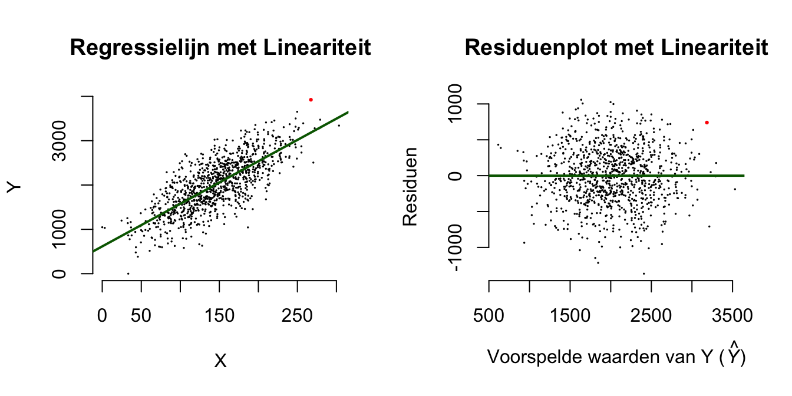
Figuur 5.19: -
We kunnen dus voor deze enkelvoudige regressie zeggen dat het aannemelijk is, dat in de populatie, de puntenwolk óók wel rechtlijnig zal lopen. Of omdat we geen rariteiten zien, dus geen duidelijke afwijkingen van lineariteit, hoeven we die aanname over de populatie ook niet te verwerpen. Beter laat ik een voorbeeld zien waar het mis is, waar dus de lineariteits-assumptie geschonden is. Hieronder zo’n voorbeeld. Je ziet duidelijk een afwijking van lineariteit, het is immers een kromme wolk, een deel van een parabool of HEMA worst dus. Ook in de residuen plot zie dat links de puntjes vooral boven de horizontale groene lijn liggen (rechts ook) en in het midden voornamelijk eronder. Maar, goed in dit geval zou het dus niet netjes zijn om je uitkomsten van een lineaire benadering (de groene regressielijn links) te generaliseren naar de populatie, tenzij je er netjs bij vertelt dat die lineariteits-assumptie dus eigenlijk geschonden is, dan mag de lezer lekker zelf beslissen wat hij er mee doet. Trouwens, nogmaals, in dit geval zou ik dus wel zeggen dat er verband is, maar een kromlijnig verband en dat je dus heus wel geld kan verdienen met een rechtlijnige benadering, maar daar verdien je minder mee dan als je een kromlijnige benadering neemt (Je \(R^2\) zal dan ook relatief hoger zijn als je voor krom gaat, omdat de gemiddelde afstand naar de regressielijn dan ook zal afnemen, kleinere errortermen dus).
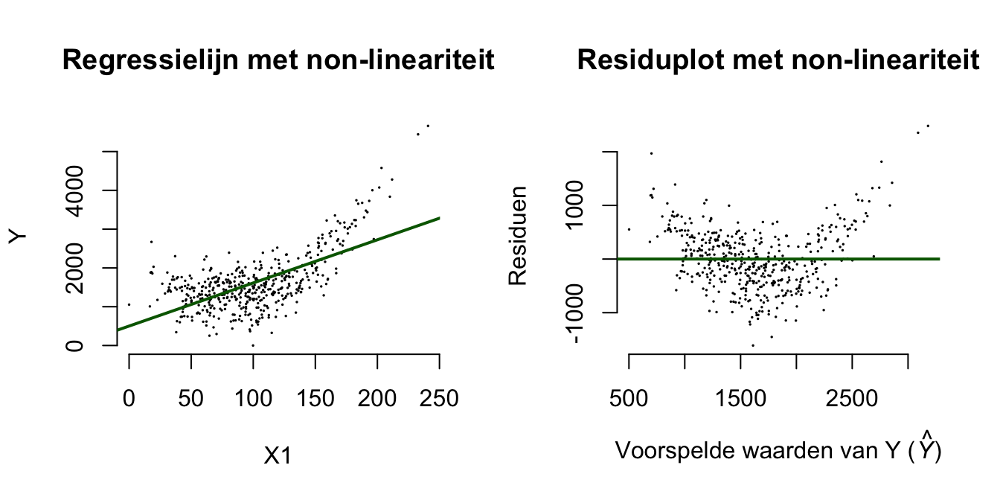
Figuur 5.20: -
5.7.3 Homoscedasticiteit
We willen heel graag dat de voorspelling qua \(y\)-waarde, de afhankijkelijke variabele dus, voor iedere waarde van \(x\) (dus over de hele range van de predictor, die je geobserveerd hebt) ongeveer even ‘goed’ gaat. Stel dat bij jonge aapjes er minder spreiding qua lengte is dan bij oudere aapjes. Dit zou dan betekenen dat je de lengtes van jonge aapjes preciezer zou kunnen voorspellen dan bij oudere aapjes. Bij jongere aapjes zou in dit geval de error, gemiddeld kleiner zijn en dat is niet eerlijk! Graag willen we dus dat de spreiding rond de regressie-lijn dus voor iedere waarde van de predictor, dus ongeveer gelijk is. In de onderste twee plaatjes (regressie en residuenplot) van de vier hieronder, zie je een situatie waar de aanname van homoscedasticiteit geschonden is, hier is dus sprake van heteroscedasticiteit en je ziet dat bij relatief hoge waarden van \(X\) de wolk meer spreiding rond de regressielijn vertoont dan bij lage waarden voor \(X\).
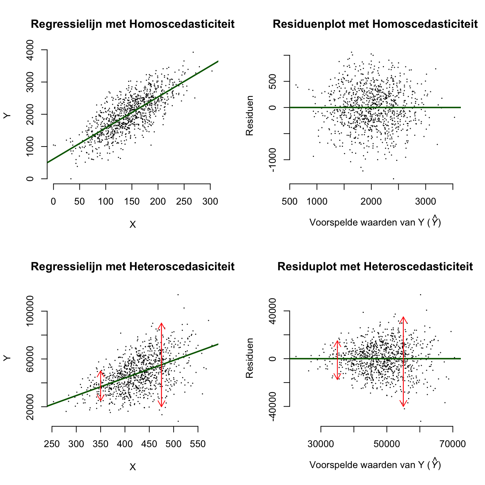
Figuur 5.21: -
Bij schending van homoscedasticiteit (dus bij heteroscedasticiteit), zou ik het voor nu alleen even melden in mijn rapportage, maar me er niet te druk over maken. Mocht er sprake zijn van ongelijke spreiding rond de regressielijn, kan dit ook duiden op mogelijke andere (interactie) effecten die ook een rol kunnen spelen in de verklaring van Y. Dus misschien is het zaak om een multiple-regressie uit te voeren, dus een voorspel-model op basis van meerdere predictoren.
5.7.4 Normaal verdeelde residuen
De errors of residuen in de populatie (\(\epsilon_i\)) zouden normaal verdeeld moeten zijn (met een gemiddelde van altijd nul en een bepaalde waarde voor de standaardafijking \(\sigma_e\)):
\(\:\:\:\:\:\:\epsilon_i \:\: \mathtt{\sim}\:\: N(\mu_{e} = 0 ; \sigma_{e})\)
Waar dit op neer komt is dat voor elke waarde van de predictor, er dichtbij de regressielijn wat meer observaties zitten dan als je je wat meer van de regressielijn af beweegt (maar dan dus wel verticaal gezien). Er zijn verschillende manieren om dit te checken, bijvoorbeeld door een histogram te maken van alle residuen in je steekproef. Als de vorm van de verdeling van de residuen niet te veel afwijkt van normaliteit zijn we blij en zeggen we dat het er goed uit ziet. In de populatie zullen de residuen dan ook wel normaal verdeeld zijn. Mocht het heel veel afwijken van normaliteit (een normaal verdeling), bijvoorbeeld bij een heel scheve verdeling, dan zou je bijvoorbeeld weer aan een transformatie van een (aantal) variabele(n) kunnen denken. Maar maak je daar nog even niet druk om. Bij de drie plaatjes hieronder zit alles goed, dus ook de normaliteit van residuen, je ziet aan de histogram dat de meeste residuen rond nul liggen en redelijk symmetrisch verdeeld, geen duidelijke afwijkingen van normaliteit dus!
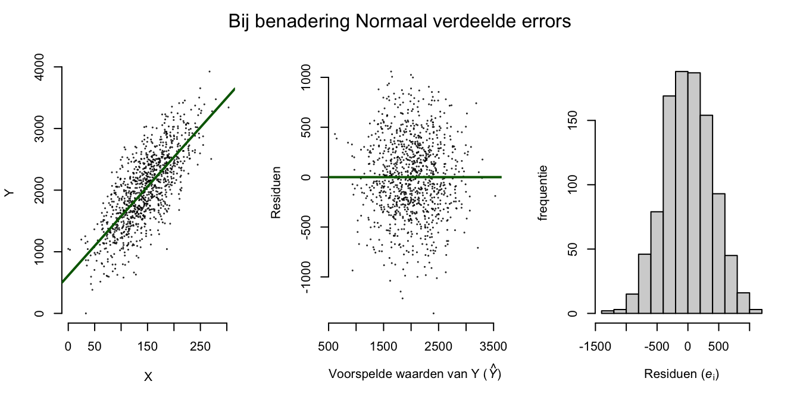
Bij de drie plaatjes hieronder, gaat het dus wel mis. Aan het eerste plaatje zie je al dat boven de regressielijn de puntjes dichter bij elkaar zitten dan onder de regressielijn, daar zie je wat meer spreiding en dus ook wat grotere (verticale) afstanden naar de reggressielijn. De negatieve residuen (links van nul in de histogram) zijn dus, absoluut gezien, vaak wat groter, een linksscheve verdeling dus. Duidelijke afwijking dus van normaliteit en daarmee is de assumptie van normaal verdeelde error termen in de populatie dus geschonden, als het in de steekproef er lelijk uitziet, zal het in de populatie ook wel zo uit zien.
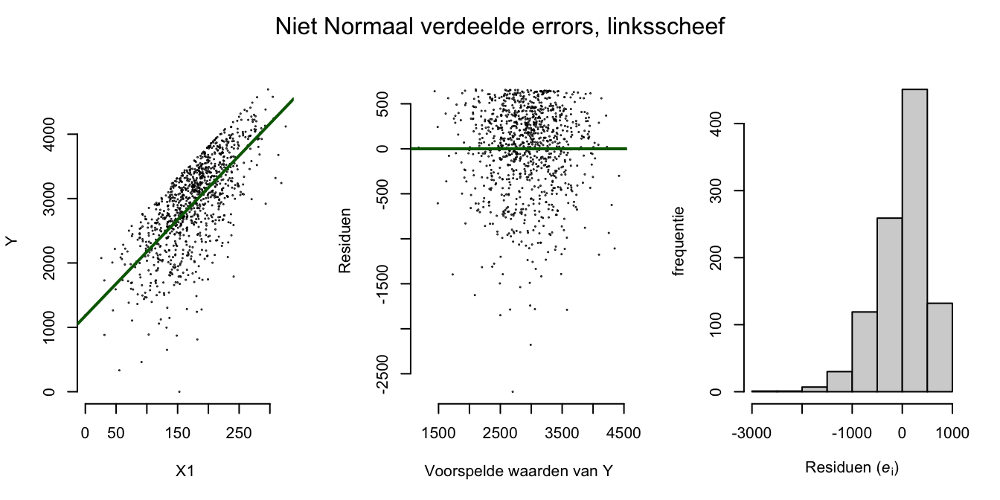
Figuur 5.22: -
5.7.5 Wrapping Up
Statistieken en toets-statistieken zoals \(z\), \(t\) en \(F\), kun je altijd berekenen op basis van je steekproefgegevens, maar wat je er mee mag doen, hangt dus af of de assumpties, die altijd over de populatie gaan, aannemelijk zijn. We kijken dus naar onze steekproef gegevens en als de boel er heel lelijk uit ziet, dan is het wel zo eerlijk als je dat op zijn minst even vermeld in je methode sectie of soms bij je resultaten. Wij hebben nu puur grafisch, dus aan de hand van plaatjes zelf beoordeeld of de boel er mooi uitziet, maar dat is subjectief. Er bestaan ook toetsen om bepaalde assumpties te checken, zoals de Kolmogorov-Smirnov test voor normalteit, die komen zeker ook nog aan bod als echte data bekijken in de JASP secties, ik ga dit niet doen voor die zielige aapjes van mij natuurlijk. Maar als het aannemelijk is dat één van de assumpties niet houdbaar is en dus geschonden is, dan zijn generalisaties van effecten naar de populatie, op basis van berekende toetsstatieken en \(p\)-waarden dus niet echt betrouwbaar. Alhoewel, size matters voor de steekproef dan. Bij grote steekproeven vinden we een schending van een assumptie minder erg. Bij een grote \(n\) zijn toetsstatistieken ook wel robuust tegen schendingen. Tuurlijk zijn er ook oplossingen, bijvoorbeeld in de vorm van transformaties van variabelen, om toch weer aan de assumpties te kunnen voldoen, of assumptie-vrije testen te doen zoals de zogenaamde bootstrap-methode. Daar zullen we in de toekomst ook nog wel naar kijken. Maar voor nu ben je Okay to Go.
5.8 AAPJES en JASP
We hebben nu behoorlijk wat analyses ‘handmatig’ uitgevoerd. Laten we met JASP controleren of we het goed gedaan hebben. Eerst het aapjes databestand (‘aapjes_csv’) importeren (inlezen).
- Open JASP op je computer en zorg dat je weet in welke folder je het databestand ‘aapjes_data.jasp’ hebt staan. Om het bestand te openen, klik je achtereenvolgens op:
- kies drop-down menu ‘main menu’
- kies achtereenvolgens ‘open’, ‘computer’ en dan ‘browse’ en navigeer naar de folder waar je het databestand ‘aapjes_data.jasp’ hebt opgeslagen.
- klik éénmaal op de bestandsnaam ‘aapjes_data.jasp’ en klik op ‘open’.
- kies achtereenvolgens ‘open’, ‘computer’ en dan ‘browse’ en navigeer naar de folder waar je het databestand ‘aapjes_data.jasp’ hebt opgeslagen.
- kies drop-down menu ‘main menu’


Figuur 5.23: Schermadruk openen van een JASP bestand
We beginnen meteen met de onderzoeksvraag: Kunnen we op basis van ‘leeftijd’ de variabele ‘lengte’ voorspellen. De onderzoeksvraag ‘Is er verband tussen ’leeftijd’ en ‘lengte’?’ is ook goed hoor, we hebben al gezien dat bij lineaire enkelvoudige regressie het allemaal een beetje hetzelfde betekent, en je kunt er op verschillende manieren naar kijken (\(R_{yx}^2\), \(r_{xy}\), \(b_1\) of \(\hat{y}_i = b_0 + b_i \cdot x_i\)), de significanties zullen toch allemaal hetzelfde zijn. Al is ons datasetje een beetje te klein (\(n=9\)) voor een mooie representatieve steekproef, we kijken toch ook gewoon even naar de bijbehorende assumpties.
Om een Lineaire Enkelvoudige Regressie-Analyse (ERA) te runnen:
- Kies drop-down-menu ‘Regression’ en kies vervolgens onder ‘Classical’ de optie ‘Linear Regression’. Kijk eerst even naar wat je nu ziet.
- Nu zie je rechts van het panel al de lege output (resultaten), dus zonder getallen erin. Kijk vooral wat je ziet veranderen per handeling die je nu gaat doen.
- Sleep als eerste alleen de afhankelijke variabele, ‘lengte’, naar het vakje ‘Dependent Variable’ (of klik links één keer op de variabele ‘lengte’ en druk klik dan op het zwarte pijltje links van het vakje ‘Dependent Variable’).
- Je ziet nu dat er in het bovenste en onderste tabel in de output iets veranderen. Als je nog géén predictor (in JASP dus covariaat of ‘covariate’) hebt toegevoegd zie je dat je nul procent van de totale variatie in ‘lengte’-scores kan verklaren (\(R^2=0.00\), bovenste tabel) en dat de beste voorspelling voor ‘lengte’ dus \(150.00\) is. Dat is ook wel het grote gemiddelde van lengte en de beste gok als je geen predictor gebruikt (het nul- of interceptmodel dus). Eigenlijk dus alles wat je, onder aanname van \(H_0\), verwacht, niet heel vreemd dus dat er ‘\(H_0\)’ voor staat!


Figuur 5.24: JASP schermafdrukken voor het uitvoeren van een Enkelvoudige Regressie-Analyse
- Nu de echte Regressie-Analyse:
- Voeg de predictor ‘leeftijd’ toe aan het vakje waar ‘Covariates’ boven staat (andere naam voor onafhankelijke variabele of ‘Independent Variable’) en kijk hoe de output nu verandert, dus vooral naar wat erbij komt.

Figuur 5.25: Jasp scherm enkelvoudige lineare regressie output
Hieronder alleen de output nog even uitvergroot voor de leesbaarheid. Dus dit is wat we krijgen als we puur de regressie analyse draaien en dus (nog) niet naar de gewone beschrijvende statistieken (de twee gemiddelden en standaardafwijkingen voor ‘leeftijd’ en ‘lengte’) en de bijbehorende assumptiechecks hebben opgevraagd. In de ANOVA tabel vind je alle getallen die wij allang berekend hebben plus eindelijk de exacte \(p\)-waarden, die wij niet precies konden opzoeken vanwege de beperkte \(t\)- en \(F\)-tabel. Dus als je (zogenaamd) naar het model als geheel kijkt, dan kijk je naar de ANOVA tabel (\(H_0: \rho_{yx}^2 = 0\) tegen \(H_1: \rho_{yx}^2 > 0\)) en kunnen we dus zeggen dat het model echt significant bijdraagt aan de voorspelling van ‘lengte’ (dus variatie verklaart) omdat in de steekproef de VAF, \(80\) procent bedraagt (\(R_{yx}^2= .80\)) en deze waarde significant afwijkt van nul (\(F(1,7) = 28.00\), \(p = .0011\)). Omdat deze \(R^2\) in de steekproef dus significant van nul afwijkt, kunnen we dus zeggen dat de \(\rho^2\) in de populatie dus ook echt groter is dan nul. Dus ook in de populatie zou het model zijn werk doen (omdat we de \(H-0\) dus kunnen verwerpen vanwege de lage \(p\)-waarde)

Figuur 5.26: Jasp enkelvoudige lineare regressie output vergroot
We hadden ook meteen naar de slope kunnen kijken (\(H_0: \beta_1 = 0\) tegen \(H_1: \beta_1 \neq 0\)). Dan kijken we dus meteen naar het effect van de (enige) predictor. De slope in de steekproef is positief en wijkt af van nul (\(b = 40\)). dit betekent dus dat een toename van een éénheid in ‘leeftijd’ overeen komt met (geassocieerd is met) een verwachte toename van \(40\) cm in ‘lengte’. Maar is dit effect ook significant (afwijkend van nul)? Ja, want het gevonden effect is significant, (\(b = 40.00\), \(SE_b = 7.56\), \(t(7) = 5.29\), \(p = .0011\)). We kunnen dus ook voor de slope in de populatie (\(\beta\)) stellen dat deze hoogstwaarschijnlijk (positief) zal afwijken van nul, omdat we de \(H_0\) mogen verwerpen (\(p\) zelfs kleiner dan \(\alpha = .01\)). We kunnen dus concluderen dat de variabele ‘leeftijd’ echt een positief effect heeft op de variabele ‘lengte’. Maar goed, eerst nog bijbehorende assumpties checken en kijken welke extra opties er nog meer zijn.
Eert kijken we even naar de extra statistieken die we met dit menu nog kunnen krijgen.
- Klik op de balk met ‘Statistics’ en kijk eerst welke opties al aangevinkt staan in de drop-down menu van ‘Statistics’ en vink vervolgens ook ‘Confidence Intervals’ en ‘Descriptives’ aan.


Figuur 5.27: extra statistieken
- Je ziet in de tabel met het kopje ‘descriptives’ de ons bekende statistieken voor het gemiddelde en de standaardafwijking voor de twee variabelen plus de twee Standaard Errors (\(SE\)) voor de twee gemiddelden (\(SE_{\bar{x}}\) en \(SE_{\bar{y}}\)), dus denk aan de steekproevenverdeling, als je heel veel steekproeven zou nemen, dan weet je dus hoe het gemiddelde zou variëren (reken maar na of het klopt: \(SE_{\bar{x}} = S_x /\sqrt{n}\) en \(SE_{\bar{y}} = S_y /\sqrt{n}\)).

Figuur 5.28: Descriptive statistics
- De tabel met het kopje ‘Coefficients’ is nu langer (breder) geworden met achteraan de onder- en bovengrenzen voor bijbehorende coëfficiënten. Zo zie je dus dat de ware populatie-slope voor de predictor ‘leeftijd’ (\(\beta\)) dus met \(95\%\) zekerheid ergens tussen de \(22.13\) en de \(57.87\) moet liggen.

Figuur 5.29: Regressie coefficienten
Nu nog de assumptiechecks. De eerste, de assumtpie van onafhankelijke waarnemingen (observaties), kunnen we overslaan: Deze heeft meer met de onderzoeksopzet te maken. We gaan er vanuit dat alle observaties (aapjes) niks met elkaar te maken hebben, dus geen familie zijn ofzo of dat zij elkaar op welke manier dan ook hadden kunnen beïnvloeden qua lengte (en of leeftijd). We kunnen dus aannemen (doen we gewoon) dat iedere observatie onafhankelijk was (van de andere observaties) en de errors dus ongecorreleerd zijn.
Assumtpiechecks for Lineariteit, Homoscedasticiteit en Normaliteit.
Laten we eerst naar de gewone puntenwolk kijken om visueel te zien of er verband is, hoe dit verband eruit ziet en of er sprake is van ernstige afwijkingen van lineariteit endergelijken. We maken dus een spreidingsdiagram (‘scatterplot’) waarin we de variabele ‘lengte’ uit zetten tegen de variabele ‘leeftijd’ (dus \(y\) op basis van \(x\)).
In JASP:
- Om een spreidingsdiagram (scatterplot) te maken gaan we eerst via de hoofd optie ‘Regression’ naar ‘Correlate’, voeg vervolgens de twee variabelen, ‘lengte’ en ‘leeftijd’ toe aan de box onder ‘Variables’. Je zult in de output de afbeeldingen even groter moeten maken om ze goed te kunnen zien, rechtsonder van elk plaatje vind je een ‘trekdingetje’ waarmee je het speciefieke plaatje groter of kleiner kan maken, speel er even mee zodat je weet wat het doet.


Figuur 5.30: JASP maken van een scatterplot
Ik neem even voor het gemak aan dat dit plaatje, je inmiddels alom bekend is van eerdere hoofdstukken:

- Zie je duidelijke afwijkingen van lineariteit (als je naar de wolk en dus niet naar het lijntje kijkt), dus zie je een HEMA-worst ofzo?
- ik niet, dus zit wel goed met die aanname van lineariteit en die aanname hoeft dus niet verworpen te worden, geen schending van lineariteit dus!
- Zie je duidelijke afwijkingen van Homoscedasticiteit, dus zie je een kegel? Dus zoiets als ergens heel smalle en ergens anders heel brede spreiding rond de regressie lijn?
- ik niet, dus zit wel goed met die aanname van Homoscedasticiteit en die aanname hoeft dus ook niet verworpen te worden, geen schending van homoscedasticiteit dus!
- Zie je duidelijke afwijkingen van normaliteit rond de regressie lijn? Deze assumptie bekijken we vooral aan de hand van een ‘QQ-plot’ of een histogram voor de residuen en niet aan de hand van deze scatterplot. Maar ook hier doen we toch even een poging. Het is niet zo dat je boven de regressielijn meer puntjes ziet dan er onder bijvoorbeeld, behoorlijk symmetrisch dus. Dus ook hier, kunnen we vast voorzichtig zeggen dat het wel goed zit met die normaliteits aanname voor de residuen.
Nu de assumptie checks via de officiële weg, dus via het ‘linear Regression’ menuutje.
- Ga weer terug naar hoofdoptie ‘Regression’ boven aan, kies vervolgens ‘Linear Regression’ en zorg dat je variabelen weer goed staan. druk nu op de balk met ‘Plots’ en vink de volgende opties aan:
- ‘Residuals versus predicted’,
- ‘Residuals histogram’,
- ‘Standardized residuals’
- ‘Q-Q plot standardized residuals’


Figuur 5.31: JASP regressie plot opties
En hieronder de drie officiële plotjes die we gebruiken om de bijbehorende assumpties te checken. De plot met de residuen uitgezet tegen de voorspelde waarde, is bedoeld om eventuele afwijkingen van lineariteit en homoscedasticiteit te bespeuren. Nogmaals, met zo weinig dat (\(n=9\)) valt er weinig te zien. De assumptie van Lineariteit lijkt redelijk omdat we weer geen HEMA worst of iets anders krom zien. Rond de regressielijn (die nu dus horizontaal ligt) zie ‘overal’ gelijke spreiding en geen duidelijke kegel of iets dergelijks, dus ook geen duidelijke afwijkingen van homoscedasticiteit.
Normaliteit van residuen beoordelen we aan de hand van een histogram of een Q-Q plot. Je ziet drie balken in de histogram, dat ziet er totaal niet normaal verdeeld uit, maar wat wil je met slechts negen waarnemingen? De vraag is dus ook meer of de residuen uit een populatie kunnen komen waar die residuen dus normal verdeeld zijn. Ik zie niks super scheefs, dus wat mij betreft kan die assumptie best behouden worden. De Q-Q plot kun je dus ook gebruiken voor de beoordeling van normaliteit. Je kijkt dan of de puntjes grof weg op de schuine rechte lijn liggen. Dat is dus niet het geval bij ons, maar liggen ze er ver vandaan? Dit is natuurlijk super subjectief. Maar als jij vindt dat de puntjes er te ver van vandaan liggen (en de puntjes dus niet op één rechte lijn liggen), dan concludeer je dus dat er substantiële afwijkingen van normaliteit zijn. Wat een Q-Q plot officieel laat zien of vergelijkt (dit mag je overslaan), is de theoretische waarde (ruw of gestandaardiseerd) van een score (hoeveel standaardafwijkingen zou hij verwijderd van het gemiddelde moeten zitten, gegeven dat het rangnummer van de score en zijn plek in een normaalverdeling) met de geobserveerde waarde. Als de geobserveerde en zijn theoretische waarde gelijk zijn, dan ligt het puntje op de lijn. Kijk dus gewoon of die puntjes ongeveer op die lijn liggen. God zij dank zijn er ook normaliteits_toetsen_, waarmee je dus kan testen (met een \(p\)-waarde) of de data uit een normaal verdeelde populatie zou kunnen komen. Hoe fijn? Krijgen we ook geen ruzie!


Figuur 5.32: JASP Grafieken
Om te toetsen of de errors uit een normaal verdeelde populatie komen, moeten we wel de errors als data in een kolom hebben staan van ons databestand, we moeten dus een nieuwe variabele (kolom) aanmaken. We doen het in twee stappen (kan ook in één). Ik bereken eerst de voorspelde waarden (\(\hat{Y}_i\)) voor iedereen en vervolgens bereken ik de errors (residuen).
- Zorg dat je in het JASP panel je databestand ziet en druk op het ‘plusje’ rechts van de kolom ‘leeftijd’ om een nieuwe variabele aan te maken.
- Vervolgens geef je een naam aan je nieuwe variabele onder het kopje ‘Create Computed Column’. Ik heb voor de naam ‘y_pred’ (van Y predicted) gekozen voor de voorspelde waarde van lengte. Vervolgens druk je op het ‘R’ icoontje en dan op ‘Create Column’ dan zie hetzelfde als in het vierde plaatje hieronder.


Figuur 5.33: JASP bereken een nieuwe variabele.
- Nu kunnen we de nieuwe variabele, ‘y-pred’, berekenen. We gebruiken hiervoor de het intercept en de slope uit onze regressievergelijking (\(\hat{Y} = 90 + 40 \cdot X_i\)) en de variabele ‘leeftijd’, onze predictor.
- Type de formule onder “Enter your R code here : )”, zorg ervoor dat de variabelenaam ‘leeftijd’ goed spelt; ik heb geen hoofdletters gebruikt omdat de originele naam dat ook niet heeft. De R-code wordt dus:
90 + 40 * leeftijd. - Vervolgens klik je op ‘Compute Column’ en er komt een nieuwe kolom bij in je dataset! Check even of je waarden kloppen, zo zou aapje nummer \(9\) dus een voorspelde waarde moeten hebben van \(170\), omdat hij \(2\) jaar oud is (\(90 + 40 \cdot 2 = 170\))
- Type de formule onder “Enter your R code here : )”, zorg ervoor dat de variabelenaam ‘leeftijd’ goed spelt; ik heb geen hoofdletters gebruikt omdat de originele naam dat ook niet heeft. De R-code wordt dus:


Figuur 5.34: JASP voorbeeld R berekeningen
Nu kunnen we de errors aanmaken in ons databestand, \(e_i = Y_i - \hat{Y}_i\)
- druk weer op op het ‘plusje’ om nog een nieuwe variabele aan te maken.
- Geef je nieuwe variabele een naam, ik heb voor “residual” gekozen, druk op het icoontje voor ‘R’ and vervolgens ‘Create Column’.
- Om de variabele te berekenen, type je in het venster
lengte - y_pred
- Om de variabele te berekenen, type je in het venster
- Geef je nieuwe variabele een naam, ik heb voor “residual” gekozen, druk op het icoontje voor ‘R’ and vervolgens ‘Create Column’.


Figuur 5.35: JASP voorbeeld R berekeningen vervolg
Nu hebben we eindelijk de residuen, dus nu kunnen we ook de normaliteits-toets doen aan de hand van de Shapiro-Wilks test:
- Klik op het icoontje ‘Descriptives’ bovenaan.
- Sleep de variabele ‘residual’ naar de ‘Variables’-box
- Vink onder ‘Statistics’ de optie ‘Shapiro-Wilks test’ aan, dit is een toets voor normaliteit er bestaan ook andere testen hiervoor (zoals de Kolmogorov-Smirnov test, alleen die zie ik er niet bijstaan).
- Sleep de variabele ‘residual’ naar de ‘Variables’-box


Figuur 5.36: JASP shapiro-wilk test
Bij elke toets hoort een stelsel van hypotheses, voor de Shapiro-Wilks test dus ook. De reden waarom we deze test gebruiken is dus om te kijken of een continue (interval) variabele (bij ons ‘residual’) uit een normaal verdeelde populatie kan komen, met het volgende stelsel van hypotheses:
\(\:\:\:\:\:\:H_0\) : De variabele is normaal verdeeld (in de populatie)
\(\:\:\:\:\:\:H_1\) : De variabele is niet normaal verdeeld (in de populatie)

Figuur 5.37: JASP output shapiro-wilk test
In de output vinden we de bijbehorende toetsstatistiek (\(W = .823\)) en de bijbehorende \(p\)-waarde, \(p = .037\), net aan significant dus. We moeten dus de \(H_0\) verwerpen en kunnen dus niet aannemen dat de residuen normaal verdeeld zijn in de populatie! Oh oh, wat een ramp! Deze schending van de normaliteitsassumptie betekent dus eigenlijk dat we de belangrijkste uitkomsten van de regressie analyse (het intercept en de slope) niet heel betrouwbaar kunnen generaliseren, omdat onze \(p\)-waarden (en toetsstatistieken) dus niet meer heel geloofwaardig zijn geworden door deze schending. Jammer joh, maar het zij zo, dus gewoon even melden in je rapport en dan mag de klant zelf beslissen wat hij of zij er mee doet!
5.9 Rapporteren van je Resultaten
Inleiding
Op een bewoond eiland krioelde het van de aapjes, in allerlei soorten en allerlei maten. Jane Goodall heeft in een ver verleden al verschillende onderzoeken naar het gedrag van aapjes gedaan op dit eiland. Helaas was ze vergeten om te kijken of er een verband is tussen de leeftijd van de apen en hun lengte. Omdat dit een heel belangrijk aspect is van het leven, heb ik met mijn onderzoeksmaatjes de relatie tussen de leeftijd en lengte in de eerste jaren na de geboorte onderzocht.
Methode
Participanten
Alleen aapjes die minimaal één banaan per dag weet te bemachtigen kwamen in aanmerking voor dit onderzoek. We hebben een steekproef van negen apen op een anoniem en bewoond eiland kunnen nemen en gaan er van uit dat elke aap in de populatie eerlijk en at random is geselecteerd.
Meetinstrumenten
De variabelen die gemeten zijn, zijn lengte (gemeten met een ijzeren lineaal) en leeftijd (gemeten in jaren, aan de hand van hun gebit, ja ja).
Analyse
Om te onderzoeken of de lengte van aapjes voorspeld kan worden op basis van leeftijd is steekproef genomen (\(n=9\)) en een lineaire regressie-analyse uitgevoerd, met lengte als afhankelijke variabele en leeftijd als onafhankelijke variabele (\(M=1.50\) jaar, \(SD = 0.43\)). ‘Natuurlijk’ hebben we heel braaf, eerst de vier populatie-assumpties gecheckt. De aanname voor onafhankelijke waarnemingen lijkt redelijk houdbaar gezien er geen directe genetische band was tussen de aapjes in onze steekproef. Aan de hand van een visuele inspectie residuen versus voorspelde waarde plot is gekeken of de aannames van lineariteit en homoscedasticiteit reëel lijken, en dit blijkt het geval te zijn, geen substantieële afwijkingen te bespeuren. De histogram voor de residuen bleek bij inspectie ook iets te veel af tewijken van normaliteit, de Shapiro-Wilks test bleek significant te zijn (\(W = .823\), \(p = .037\)) en kunnen we dus niet aannemen dat de residuen uit een normaal verdeelde populatie komen en zullen we dus voorzichtig moeten zijn met eventuele generalisaties van effecten.
Resultaten
Uit de regressie-analyse met lengte als uitkomstvariabele en leeftijd als predictor, bleek dat het regressiemodel \(80\%\) van de totale variatie in lengte te verklaren en dat dit effect significant is (\(R^2 = .80\), \(F(1;\:7) = 28.00\), \(p = .0011\)). Natuurlijk ligt dat aan de enige predictor Leeftijd. Leeftijd en lengte hangen positief en significant samen (\(r = .89\), \(p = .0011\)). Dit betekent dat relatieve Jongere aapjes over het algemeen wat kleiner zijn dan relatief oudere aapjes. Als zijn gemiddeld we concluderen effect op lengte (\(b = 40\), \(SE_b = 7.56\), \(t(7) = 5.29\), $ p .0011$). Dit betekent dat aapjes naar mate ze ouder zijn, ook iets langer zullen zijn, voor elk jaar verschil komt er naar verwachting \(40\) cm bij.
concluderen dat voor twee aapjes die één jaar schelen, de oudste ongeveer 40 cm groter is.
5.10 JASP, Lineaire Enkelvoudige Regressie Analyse, QOL
Open eerst het bestand ‘qol_data.jasp’ in JASP en sla het eerst op onder een nieuwe naam, bijvoorbeeld “qol_data_in_progress.jasp”, zodat je altijd terug kunt naar het originele bestand als je er bijvoorbeeld een bende van maakt. Dus ga naar ‘Main Menu’ helemaal linksboven, dan ‘Safe As’, ‘Computer’ en dan navigeer (‘Browse’) je naar de folder waar je je databestand, met een nieuwe naam, wil opslaan.
5.10.1 Lineaire Regressie aan de hand van één continue (interval) predictor.
\(\:\:\:\:\:\:X (\text{continue})\:\:\rightarrow \:\: Y(\text{continue})\)
Wanneer je een continue variabele (waarvan jij dus aanneemt dat het meetniveau interval, of hoger is) wilt voorspellen op basis van een andere continue variabele en je neemt aan dat het verband tussen de twee variabelen linear loopt, doe je dus een enkelvoudige regressie-analyse.
Opdracht 1
- We gaan onderzoeken of we de score voor kwaliteit van leven (‘KwL’, ‘Quality of Life’ of ‘QoL’ in het databestand) kunnen voorspellen (verklaren) op basis van leeftijd (‘age’). Voordat we tot numerieke voorspellingen overgaan, bekijken we eerst nog even het verband grafisch.
Bekijk de relatie tussen de twee variabelen in een spreidingsdiagram. Zorg ervoor dat ‘QoL’ (Dependent Variable, DV) als functie van leeftijd (‘age’) (Independent Variable, IV) wordt weergegeven. Dus ‘QoL’ op de \(y\)-as en ‘age’ op de x-as. Kijk bij elke ‘klik’ of ‘vink’ die je doet hoe de output veranderd, wel zo handig als je weet wat wat doet!
- Druk op het ‘Descriptives’ icoontje, links bovenaan. Vervolgens voeg je de twee variabelen toe aan de ‘Variables’-box, gooi als eerste ‘age’ erin, dan komt deze variabele op de \(x\)-as te staan.
- Om een spreidingsdiagram op te vragen, druk je eerst op de balk ‘Plots’. Vink dan ‘Scatterplots’ aan en vervolgens heb ik de opties ‘none’ (onder ‘Graph above scatterplot’), nog een keer ‘none’ (onder ‘Graph right of scatterplot’) en ‘linear’ (onder ‘Add regression line’) gekozen.
- Druk op het ‘Descriptives’ icoontje, links bovenaan. Vervolgens voeg je de twee variabelen toe aan de ‘Variables’-box, gooi als eerste ‘age’ erin, dan komt deze variabele op de \(x\)-as te staan.


(#fig:5-Qol-1.1)-
Hieronder het spreidingsdiagram met ‘Qol’ op basis van ‘age’. We gaan weer even subjectief doen, je hoeft het dus (nog) niet goed te doen, het is maar een plaatje. Plaatjes kunnen soms de boel in één keer inzichtelijk maken, maar dat is zeker niet altijd het geval. Soms is het bijvoorbeeld niet duidelijk, als je bijvoorbeeld naar de puntjes in je plot bekijkt, hoeveel puntjes er eigenlijk over elkaar heen liggen. Door ‘overplotting’ kun je dus vaak niet goed zien waar een hogere of lagere concetratie aan punten te vinden is. Dus vaak niet altijd duidelijk, zeker als je dus te maken hebt met heel veel data. Straks keiharde en dus bevrijdende bevindingen aan de hand van statistieken, toets-statistieken en \(p\)-waarden, daar is niks subjectiefs aan. Goed, daar gaan we. Zie jij verband tussen de twee variabelen?

(#fig:5-Qol-1.2)-
Als je moet kiezen (dus met een mes op je keel), zie je dan een positief of negatief verband?
- Ik zie een negatief verband, omdat links, bij lage waarden van leeftijd, liggen de waarden voor KwL over het algemeen wat hoger (gemiddeld gezien) en bij relatief hogere waarden qua leeftijd zie je de puntjes ook wat lager liggen (gemiddeld gezien weer). Als ik moest kiezen zou ik dus zeggen dat de punten wolk van linksboven naar rechts onder loopt, een negatief verband dus. Dus naar mate de \(x\)-waarde toeneemt, neemt de \(y\)-waarde gemiddeld gezien af. Straks dus hopelijk een bevestiging aan de hand van keiharde statistieken.
Als je weer moet kiezen, is het verband dan rechtlijnig (lineair) of voornamelijk kromlijnig (curve-lineair)? Of beter, deze puntenwolk is niet ‘dit’ of ‘dat’ (recht of krom), maar zou jij deze puntenwolk beter met een rechte- of beter met een kromme lijn beschrijven, benaderen of samenvatten?
- Om deze vraag te beantwoorden maken we eerst nog een plaatje om het iets makkelijker te maken: kies ‘smooth’ onder het kopje ‘Add regression line’ en kijk dan wat er dan verandert in je plot (die je al had staan in je output):

(#fig:5-Qol-1.4)-
Als je naar het plaatje hier rechtsboven kijkt, zie je een ‘smooth’ regressielijntje. Deze zoekt naar de gemiddelde waarde voor \(Y\) bij elke waarde van \(X\). Vervolgens verbindt het regressielijntje alle \(y\) gemiddelden met elkaar. Eigenlijk geeft deze lijn de beste beschrijving van hoe de wolk zich gedraagt. Dus als je die lijn zou gebruiken om ‘QoL’ te voorspellen, zouden je errors, gemiddeld gezien, het allerkleinst zijn! Maar willen we de beste en meest complexe beschrijving van een wolk? Weer subjectief, maar nee! Tuurlijk willen we wel een mooi passend lijntje, maar we moeten ook niet overdrijven! We willen wel een samenvatting (theorie, idee, model) die je makkelijk te begrijpen is en niet te moeilijk eruitziet! Vind jij dat die paar extra kromminkjes in dat lijntje nog echt wat toevoegen? Zouden die paar flauwe bochten in het tweede lijntje iets significants toevoegen aan de voorspelling van \(Y\) in vergelijking tot de lineaire benadering? Of zouden die paar flauwe bochten ook precies zo in de populatie lopen? Je zou kunnen stellen dat die krommingen in je steekproef door toeval komen en dat in de populatie het lijntje wel gewoon recht loopt, zomaar mogelijk. We zouden het misschien verder moeten onderzoeken en het verschil in FIT tussen de twee lijnen in termen van \(R^2\) moeten onderzoeken aan de hand van een toets en kijken of de kromlijnige benadering ook daadwerkelijk significant beter voorspelt dan een lineaire benadering. Maar puur op het oog, dus subjectief, vind ik dat de krommingen in dat tweede lijntje nou echt niet zo heftig zijn om ze serieus te nemen. We houden het lekker lineair dus en gaan voor een lineaire benadering.
Opdracht 2
- Nu we grafisch gezien hebben dat het verband tussen de twee variabelen negatief is en het verband “redelijk” lineair lijkt te zijn, kunnnen we een Echte Enkelvoudige Lineaire Regressie Analyse draaien (en bovenal interpreteren natuurlijk!). Al is het een ‘enkelvoudige’ regressie, we beginnen even bij het ‘model als gheel’ aan de hand van de ANOVA tabel en de ‘Model Summary’.
Run de Enkelvoudige Lineaire Regressie Analyse via ‘Regression’ en kies ‘Linear Regression’ onder ‘Classical’:
- Verplaats ‘QoL’ naar het vakje onder ‘Dependent Variable’;
- Verplaats ‘age’ naar de box onder ‘Covariates’;
- Klik dan op ‘Statistics’ en vink - als enige extra - ‘Descriptives’ aan, laat de defaults dus aangevinkt staan:

(#fig:5-Qol-2.1)-
Voordat we ons laten verleiden (verwarren) door de output, kijken we eerst even naar de bijbehorende hypotheses (\(H_0\) en \(H_1\)) voor het model als geheel in gewone woorden en formeel:
- \(H_0:\) Het model als geheel (dus bij ons alleen op basis van leeftijd) kan geen variatie in QoL verklaren.
- \(H_1:\) Het model als geheel (dus bij ons alleen op basis van leeftijd) kan wel
- \(H_0: \rho_{\text{QoL, age}}^2 = 0\) variatie in QoL verklaren.
- \(H_1: \rho_{\text{QoL, age}}^2 > 0\)
Als er in de populatie geen relatie tussen leeftijd en KvL zou zijn (en de \(H_0\) dus waar is), welke waarde zou dan de proportie verklaarde variantie van het regressie-model (\(\rho_{\text{QoL, age}}^2\)) in de populatie moeten hebben?
- Dat is precies wat de \(H_0\) stelt; \(\rho_{\text{QoL, age}}^2 = 0\)
Wat zou je verwachten, onder aanname van de \(H_0\), voor de waarde van de proportie verklaarde variantie (\(VAF\)) in een steekproef (\(R_{\text{QoL, age}}^2\))? En zul je die waarde ooit vinden bij het (herhaardelijk) trekken van een steekproef (gegeven dat de \(H_0\) waar is)?
- Als de \(H_0\) waar zou zijn, dan zou je \(R_{\text{QoL, age}}^2 = 0\) verwachten. Maar zal het ooit gebeuren, dat je precies een steekproef trekt waarvan de regressielijn perfect horizontaal loopt (dus het regressiegewicht voor leeftijd precies nul is; \(b_age = 0.00\))? Waarschijnlijk niet, dus een \(R^2\) met precies een waarde van 0.00 is heel onwaarschijnlijk, maar daar dicht boven, zal heel vaak gebeuren (croissantjes, maar net geen brood).
Laten we naar de output kijken:

(#fig:5-Qol-2.2)-
Hoe groot is de \(R^2\) in onze steekproef? Hoe wordt deze waarde berekend? Hint: gebruik getallen (Sum of Squares) uit de ANOVA tabel.
- Aflezen uit de tabel met ‘Model Summary’: \(R_{\text{QoL, age}}^2 = .055\)
- Berekening aan de hand van de ANOVA tabel: \(VAF = R_{\text{QoL, age}}^2 = \frac{SSM}{SST} = \frac{5472.7219}{98729.5232} = .055\)
Dus \(5.5\%\) van de totale variatie in KwL scores wordt verklaard aan de hand van variatie in leeftijd. Of dit veel of weinig is laat ik het midden. Laat ik het zo zeggen, de pharmaceutische industrie verdient er miljarden aan, althans, wanneer zo’n ieniemienie VAF-je significant is natuurlijk, en als je steekproef maar groot genoeg is, dan is elk effectje, hoe klein dan ook, kneiter en kneiter significant. Als \(n\) groter, dan je \(SE\) kleiner, je toetsstatistiek weer groter en je \(p\) (en daar gaat het om) weer kleiner, dus je significantie weer groter! En dat allemaal onafhankelijk van de grootte van je effect-size! Als je deze laatste twee zinnen inmiddels al direkt voelt en voor het lezen van dit boek, nog niet, dan ben je een behoorlijke held. Maar een hoge significantie zegt dus heel weinig over of je gevonden effect ook daadwerkelijk hout snijdt in de praktijk. Hoe boeiend is het als je zeker weet dat \(12\) jarigen echt, gemiddeld gezien, één tiende puntje in kwaliteit van leven (op een schaal van nul tot honderd) verschillen van \(18\) jarigen. Ik zei er niet eens bij wie van de twee soorten, gemiddeld hoger of lager scoren. Gelukkig maakt die vaagheid van tweezijdigheid - praktisch - dus ook niet eens meer uit.
Natuurlijk ligt het antwoord op de vraag “Waarom zijn er verschillen in Kwaliteit van leven?” (aannemende dat dit echt zo is), in de zoektocht naar andere, betere of (en) samenwerkende factoren (voorspellers) dan leeftijd, verantwoordelijk zijn voor een betere verklaring van de verschillen in Kwaliteit van Leven. Juist daarom Meervoudige Regressie Analyse (MRA), juist om te kijken welke (combinatie van) predictoren winnen! Ja dan wordt het spannend, inhoudelijk bedoel ik dan, lekker denken over hoe de werkelijkheid nou echt werkt (zou kunnen werken)! Nou ja, alleen uitsluiten wat niet kan, ga ik ook voor, ik ga voor zekerheid, significantie dus.
Wat is dus de proportie _on_verklaarde variantie?
- Proportie _on_verklaarde variantie \(1-R^2 = 1-.055 = .945\) of;
- \(1-R^2 = 1-\frac{SSM}{SST} =\frac{SSE}{SST} = \frac{93256.8013}{98729.5232} = .945\)
Wat is de waarde van de bijbehorende toets-statistiek (\(F\)) en wat is het aantal vrijheidsgraden voor de teller (numerator) en welk aantal voor de noemer (denominator)? Hoe worden deze berekend?
- \(F(df_{numerator} = 1, df_{nominator} = 614)= 36.03\)
- Aangezien \(df_{total} = n-1 = 615\), moet \(n\) dus wel \(616\) zijn geweest (of je leest de \(n\) van de descriptives af)
- \(df_{numerator} = p = 1\) (slechts één predictor)
- \(df_{nominator} = n-p-1 = 616 - 1 - 1 = 614\)
Wat is de bijbehorende \(p\)-waarde? Als je naar ‘Preferences’ via ‘Main Menu’ en dan ‘Results’ kiest, kun je de instellingen voor afrondingen veranderen, je output varandert meteen mee! speel er even mee!
- \(p=3.32\:\text{e}-9 = 3.32 \cdot 10^{-9} = .00000000332\) of makkelijker,
- \(p<.001\)
Wijkt de \(R^2\) waarde dus significant af van nul?
- \(R^2\) wijkt significant af van nul want \(F(1,7) = 36.03\),
- \(p <.001\) (we kunnen dus zelfs zeggen dat \(p\) kleiner is dan \(\alpha_{.001}\)).
- Wat is dus je conclusie over het gehele model?
- Omdat de \(R^2\) van het model als geheel dus significant afwijkt van nul, mogen we dus de \(H_0\) verwerpen en aannemen dat in de populatie het model dus echt variatie in KwL scores verklaart.
Wat zegt dit dus over het effect van leeftijd op KvL? Kan je aan de waarde van \(R^2\) zien of het verband tussen de twee variabelen positief of negatief is?
- Alleen dat er een effect is en dat dit effect \(5.5\%\) verklaart, maar je weet niet welke richting (positief of negatief) dit effect heeft. R^2 is natuurlijk altijd positief. Om te bepalen of het effect (verband) positief of negatie is, zul je naar de correlatie (\(r_{xy}\)) of de slope (\(b_1\)) moeten kijken.
Opdracht 3
- Nu we weten dat het model als geheel significant bijdraagt, kijken we naar (de enige) verantwoordelijke predictor en naar zijn regressiegewicht.
Geef de ruwe regressievergelijking voor de voorspelling van ‘KvL’ op basis van ‘age’. Geef deze in de volgende vorm:
\(\hat{Y}_{i} = b_0 + b_1 \cdot X_{i1}\) of;
\(\hat{KvL}_{i} = b_0 + b_1 \cdot age_{i}\) of;
\(\hat{KvL}_{i} = intercept + slope \cdot age_{i}\)
- \(\hat{Y}_{i} = 95.55 - 1.23 \cdot X_{i1}\) of;
- \(\hat{KvL}_{i} = 95.55 - 1.23 \cdot age_{i}\)
Wat is het bijbehorend stelsel van hypotheses wanneer we de slope toetsen? Tweezijdig graag.
- In woorden:
- \(H_0:\) Er is geen verband tussen leeftijd en KwL
- \(H_1:\) Er is wel verband tussen leeftijd en KwL
- Formeel:
- \(H_0: \beta_1 = 0\)
- \(H_1: \beta_1 \neq 0\)
- In woorden:
Interpreteer de slope (\(b_{age}\) of \(b_{1}\)) voor de volgende situaties.
- Voor een toename (of een verschil) van 1 éénheid op de predictor
- Als de leeftijd met één jaar toeneemt, dan neemt KwL met 1.23 éénheid af.
- Voor een toename van 2 éénheden.
- Als de leeftijd met twee jaar toeneemt, dan neemt KwL met \(2 \cdot 1.23 = 2.46\) éénheid af.
- Voor een afname van 3 éénheden.
- Als de leeftijd met drie jaar _af_neemt, dan neemt KwL met \(3 \cdot 1.23 = 3.69\) éénheid toe.
- Voor een toename (of een verschil) van 1 éénheid op de predictor
Wat is de waarde van de bijbehorende standaard error (\(SE_{b_1}\)) en hoe vaak past hij in de waarde van de slope?
- \(SE_{b_1} = 0.2057\)
- Aantal keer dat de \(SE_{b_1}\) in de slope \(b_1\) past:
- \(\frac{b_1}{SE_{b_1}} = \frac{-1.2348}{0.2057} = -6.0029\) (ruim zes keer dus)
Wat is dus de waarde van de bijbehorende toets-statistiek (\(t\))? Wat zijn bijbehorend aantal vrijheidsgraden (\(df\)) en \(p\)-waarde?
- \(t_{df = n-p-1} = \frac{b_1}{SE_{b_1}} = -6.0029\)
- \(t_{df = 614} = -6.00\)
- \(p < .001\), dus kortweg:
- \(t(614) = -6.00\), \(p<.001\)
Vergelijk de twee toetsstatieken (\(t\) voor de slope en \(F\) voor de \(R^2\)). Hoe zijn deze aan elkaar gerelateerd?
- \(t^2 = F\), even checken;
- \((-6.0029)^2 = 36.03\) (klopt)
- Je kan \(F\) dus uitdrukken door het kwadraat van \(t\) te nemen.
- Wat kunnen we dus concluderen over het effect van leeftijd op KvL in de populatie?
- We kunnen dus zeggen dat het waarschijnlijk is dat er ook in de populatie een negatief verband is (want \(b_1= -1.23\)) verband is tussen leeftijd en KvL. Voor elk jaar dat een kind een jaar ouder is, zal hij naar verwachting met \(1.23\) éénheden in KvL lager scoren.
- En dat verschillen in leeftijd ongeveer \(5.5\%\) van de totale variatie in KvL scores verklaart (\(R^2 = .055\)). Voor de populatie zijn we trouwens iets voorzichtiger, met wat de VAF (proportie verklaarde variantie) betreft. \(R^2\), dus voor de steekproef, is eigenlijk iets te mooi (hoog) als schatting voor de verklaarde variatie in de populatie. Voor de populatie zijn we vaak wat voorzichtiger en rapporteren we ‘Adjusted \(R^2\)’ of dus \(R_{\text{Adjusted}}^2\). En de vraag ging over de populatie. Dus voor de populatie zeggen we (als we netjes zijn), dat we daar dus ongeveer \(5.4\%\) van de totale variatie in KvL kunnen verklaren aan de hand van leeftijd. (\(R_{\text{Adjusted}}^2=.054\)).
- Interpreteer het intercept (\(b_{0}\)), is deze interpretatie betekenisvol?
- Wat zegt het intercept over het verband tussen leeftijd en KvL
- Helemaal niks. Echt.
- Wat zegt (betekent) het intercept dus wel?
- Het intercept is het snijpunt van de regressielijn met de verticale as, dus de \(y\)-as, bij ons de waarde op KvL. Dus de hoogte (waarde op KvL) van dat snijpunt, dus bij het begin van de \(x\)-as, dus ‘daarboven’ waar geldt: \(x=0\). Deze hoogte is dus de voorspelde of verwachte waarde (\(\hat{y}_i\) of \(\hat{\text{KvL}}_i\)) voor een kind dat nul jaar oud is, dus net geboren:
- \(\hat{y}_{x=0} = 95.55 -1.23 \cdot 0 = 95.55\)
- De interpretatie van het intercept (\(b_{0}\)) is dus de voorspelde waarde voor de afhankelijke variabele voor wie dus de waarde nul op de onafhankelijke waarde scoort.
- \(\hat{y}_{x=0} = 95.55 -1.23 \cdot 0 = 95.55\)
- Het intercept is het snijpunt van de regressielijn met de verticale as, dus de \(y\)-as, bij ons de waarde op KvL. Dus de hoogte (waarde op KvL) van dat snijpunt, dus bij het begin van de \(x\)-as, dus ‘daarboven’ waar geldt: \(x=0\). Deze hoogte is dus de voorspelde of verwachte waarde (\(\hat{y}_i\) of \(\hat{\text{KvL}}_i\)) voor een kind dat nul jaar oud is, dus net geboren:
- Is deze interpretatie betekenisvol (in de praktijk)?
- Wat mij betreft niet. De interpretatie dat ‘net geboren kinderen gemiddeld gezien \(95.55\) punten op KvL zouden scoren’ zou super raar zijn. Op zich Okay om over de kwaliteit van leven van pas geboren kinderen na te denken en te meten, maar ‘misschien’ moet je dan wel kijken naar andere dingen zoals voedsel, gezondheid, genoten hoeveelheid ouder- en naasteliefde en het aantal verschoonde luiers op een dag. In onze KvL vragenlijst (‘DUX25’), stonden vragen over school en vrienden enzo, die vragen hebben niks met het leven van een pas geborene te maken.
- Bovendien hebben de kinderen die wij gemeten hebben, een leeftijd ergens tussen de acht en achttien jaar, dus sowieso een beetje gevaarlijk om uitspraken te doen over cases buiten jouw onderzoeksdomein (dus kinderen onder de acht of boven de achttien jaar). Als je extrapoleert (uitspraken doet over mogelijke waarden op de afhankelijke variabele voor nieuwe mensen met totaal andere waarden op de predictor dan waarden die je binnen je eigen onderzoek of metingen bent tegengekomen) moet je wel onderzoeken of dat uberhaupt hout snijdt.
- Wat mij betreft niet. De interpretatie dat ‘net geboren kinderen gemiddeld gezien \(95.55\) punten op KvL zouden scoren’ zou super raar zijn. Op zich Okay om over de kwaliteit van leven van pas geboren kinderen na te denken en te meten, maar ‘misschien’ moet je dan wel kijken naar andere dingen zoals voedsel, gezondheid, genoten hoeveelheid ouder- en naasteliefde en het aantal verschoonde luiers op een dag. In onze KvL vragenlijst (‘DUX25’), stonden vragen over school en vrienden enzo, die vragen hebben niks met het leven van een pas geborene te maken.
- Wat wil het zeggen dat het intercept significant afwijkt van nul?
- Het intercept in de steekproef wijkt inderdaad significant af van nul (\(b_0 = 95.55\), \(t(614) = 35.42\), \(p < .001\)). Dus dat betekent dat we ook voor de populatie mogen aannemen dat het intercept (\(beta_0\)) daar dus ook van nul zal afwijken. Maar aangezien het dus niet zoveel zin heeft om over KvL, zoals wij gemeten hebben, voor kindertjes van nul weinig betekenis heeft, boeit de significantie van het intercept sowieso niet.
- Wat zegt het intercept over het verband tussen leeftijd en KvL
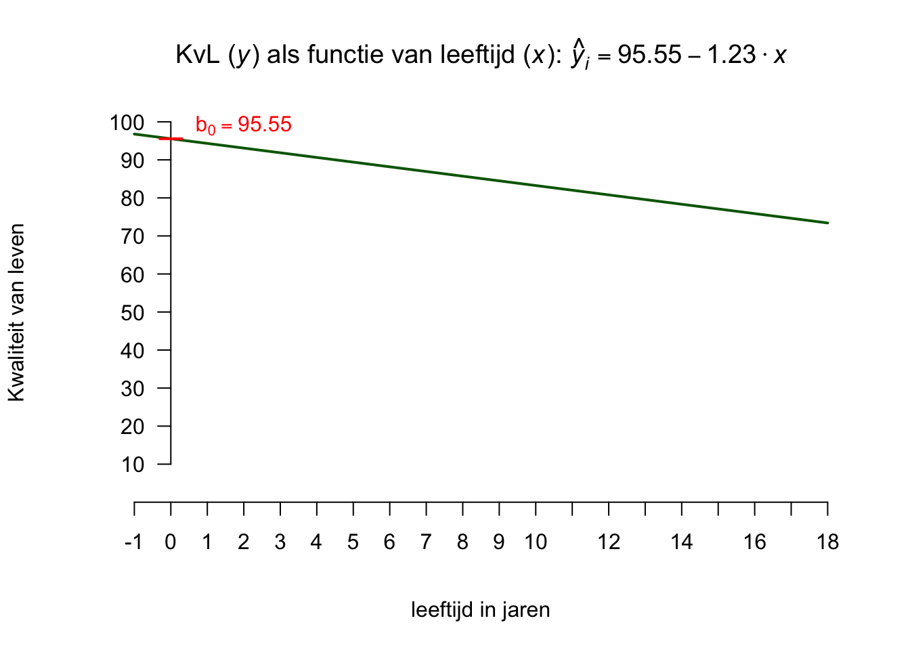
Figuur 5.38: -
We hebben nu de interpretatie behandeld van de slope en het intercept. Het intercept is in ons geval dus niet boeiend (behavle dat je hem wel nodigt hebt in je formule om voorspelde waarden uit te kunnen rekenen voor kinderen van leeftijden tussen de \(12\) en \(18\)). Om toch een formule te creëren waarin het intercept wel interpreteerbaar en praktisch is, gaan we de predictor eerst ‘centreren’ en dan nog een keer een enkevoudige regressie analyse uitvoeren in de volgende opgave.
Opdracht 4
- Enkelvoudige Lineaire Regressie Analyse aan de hand van een ‘gecentreerde’ predictor. We bouwen de boel eerst even op. Je weet al wat het verschil is tussen een ongestandaardiseerde (ruwe) variabele (\(x\)-score) en een gestandaardiseerde variabele (een \(z\)-score). Bij een gestandaardaardiseerde variabele is het gemiddelde altijd nul (\(\bar{z}=0\)) en de standaardafwijking altijd één \(S_z = 1\) en in een populatie natuurlijk ook (\(\mu_{z}=0\), \(\sigma_z = 1\)). Alle \(z\)-scores zijn liggen dus rond de waarde \(0\) en zijn dus gecentreerd rond nul. Denk even aan IQ-scores, waarvan het gemiddelde \(100\) (\(\mu_x = 100\)) is en de standaardafwijking \(15\) (\(\sigma_x = 1\)). Of deze variabele normaal verdeeld is doet er even niet toe. Alle IQ-scores liggen dus rond \(100\), zijn dus gecentreerd rond honderd, omdat honderd het gemiddelde is. Ik, Ben dus, scoor op IQ \(130\) punten (Jaja, echt, God weet). En ligt dus, _ruw gezien, dertig punten boven het gemdiddelde en gestandaardiseerd gezien, dus twee standaardafwijkingen boven het gemiddelde. Ruw centreren rond nul, betekent gewoon dat je kijkt naar de ruwe afwijking van het gemiddelde (dus een blauw streepje). Dus in het algemeen, als je van ieders ruwe score het gemiddelde aftrekt, hou je de ruwe afwijking over en dat noemen we ook wel een ‘gecentreerde variabele’ (gecentreerd rond nul dan). Ruwe afwijkingen (\(X_i - \bar{X}\)) hebben altijd een gemiddelde van nul (als je alle ruwe afwijkingen bij elkaar neemt dan, voor steekproef of voor een populatie). Dus als iemand, als ruwe afwijking, nul heeft (dus op de gecentreerde variabele nul scoort \(X_{\text{centered}} = X_i - \bar{X}= 100 - 100 = 0\)), dan betekent dat dat hij ‘ruw’ (op de oorspronkelijke variabele) dus gewoon gemiddeld is. Nul op gecentreerd (rond nul) betekent dus gewoon ‘oorspronkelijk’ gemiddeld én die nieuwe nul-waarde is dus betekenisvol! Als we een gecentreerde predictor in een regressieanalyse knallen, wordt ook het intercept (\(b_0\)) wel interpreteerbaar en dus ook betekenisvol. Leuk, gaan we doen, zodat we als we multipele regressie gaan doen, super kick ass regressiemodellen kunnen bouwen die lekker interpreteerbaar zijn!
\(\:\:\:\:\:\:X_{\text{Ben}} = 130\)
\(\:\:\:\:\:\:Z_{\text{Ben}} = \frac{X_{\text{Ben}}- \mu_x}{\sigma_x} = (130-100)/15=2.00\)
\(\:\:\:\:\:\:X_{{\text{centered}}_{\text{ Ben}}} = X_{\text{Ben}} - \bar{X} = 130 - 100 = 30\)
- Centreer de variabele leeftijd rond nul en noem hem ‘age_cen’. Om dit te doen moeten we dus wel weten wat het gemiddelde is. Gelukkig stond het gemiddelde voor leeftijd bij de descritpives tabel van onze eerdere output (\(M_{\text{age}} = 12.888\))
- Zorg eerst dat je binnen het JASP panel weer je data ziet (door op het pijltje te drukken dat hélemaal links en dan in het midden staat (en naar rechts wijst, als je erover heen gaat met je cursor zie je ‘Show data’)
- Druk vervolgens op het plusje, bij de meest rechter kolom rechtsboven in je databestand, om een nieuwe variabele (kolom) aan te maken.
- Geef een naam aan je nieuwe variabele:
age_cen, en druk dan op het ‘R’ icoontje en druk op ‘Create column’. - Type het formuletje voor je berekening in het veld onder “# Enter your code here : )”. Type dus
age - 12.888en druk op ‘Compute column’.


(#fig:5-Qol-4.1)-
- Voor dat we de regressie gaan doen, vraag eerst even het gemiddelde op voor onze nieuwe variabele ‘age_cen’ én de originele variabele ‘age’ via ‘Descriptives’.


(#fig:5-Qol-4.2)-
Interpreteer en vergelijk een aantal statistieken en waarden van de nieuwe en de originele variabele ‘age_cen’ en ‘age’:
- Wat is het gemiddelde en de standaardafwijking voor beide variabelen?
- Origineel: \(M = 12.888\), \(SD = 2.42\)
- Gecentreerd: \(M = -1.299\:\text{e}\: 10^{\text{-}5}= \text{-}0.00001299 = 0\), \(SD = 2.42\)
- Dus alleen de standaardafwijkingen zijn het zelfde.
- Origineel: \(M = 12.888\), \(SD = 2.42\)
- Wat is het gemiddelde en de standaardafwijking voor beide variabelen?
- Wat is de laagste gecentreerde score?
- Min \(=-4.888\). Het jongste kind zit dus bijna \(5\) jaar onder het gemiddelde
- Wat de hoogste hoogste waarde?
- Max \(=5.112\). Het oudste kind zit dus ruim \(5\) jaar boven de gemiddelde leeftijd.
- Wat is Range voor de originele variabele ‘age’ en wat voor de gecentreerde variabele?
- \(\text{Range}_{\text{origineel} = \text{Max} - \text{min}} = 18 - 8 = 10.00\)
- \(\text{Range}_{\text{gecentreerd} = \text{Max} - \text{min}} = 5.112 - \text{-} 4.888 = 10.00\)
- Zoek iemand met ongeveer de waarde 0 voor ‘age_cen’, wat scoort deze persoon op de originele var ‘age’?
- Bij mij heeft de eerste persoon toevallig een gecentreerde score van \(0.112\) en scoort dus op de oorspronkelijke variabele ongeveer gemiddeld.
- Nu een enkelvoudige regressie-analyse om KvL te voorspellen op basis van de gecentreerde predictor ‘age_cen’.
- Ga via ‘Regression’, naar ‘Linear regression’ onder ‘Classical’ en gooi ‘QOL’ onder de ‘Dependent Variable’ en ‘age_cen’ onder ‘Covariates’.


(#fig:5-Qol-4.3)-
Geef de nieuwe regressievergelijking.
+ $\hat{\text{KvL}}_{i} = 79.63 - 1.23 \cdot \text{age_cen}_{i}$
Hieronder een plaatje van het nieuwe regressiemodel, hoe interpreteeer je het intercept nu?
- Je zie nu dat het deze regressielijn door de ‘echte’ \(y\)-as gaat ter hoogte van \(Kvl = 79.63\), ons nieuwe intercept (\(b_0\))! Dit is de voorspelling (verwachte waarde of het gemiddelde) voor KvL voor diegenen die op de gecentreerde predictor, precies \(0\) scoren (en dus gemiddeld zijn op de originele variabele leeftijd).
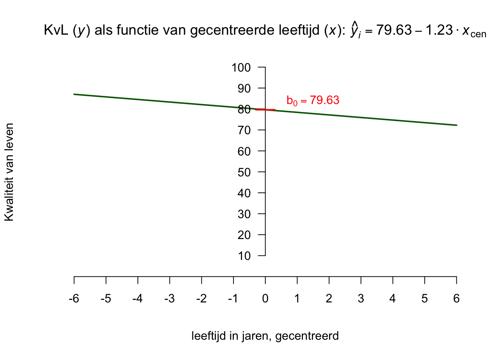
Figuur 5.39: -
Nu nog even terug naar KvL, wat is het grote gemiddelde op KvL?
- \(M_{\text{KvL} = 79.63}\) en dat is precies hetzelfde als onze \(b_0\) in onze gecentreerde situatie!
Wat is nu de waarde van de slope?
- \(b_1 = \text{-}1.23\), dus het effect (verband) van leeftijd op KvL blijft natuurlijk precies hetzelfde!
We kunnen dus nu meteen zeggen, puur op basis van de gevonden regressievergelijking, dat kinderen van een gemiddelde leeftijd een verwachte of voorspelde waarde van \(79.63\) voor KvL hebben en dat een relatief verschil (toename) van één jaar overeenkomt met een afname van \(1.23\) eenheden op KvL. We hebben dus nu de nul-waarde voor de predictor ‘betekenisvol en praktisch’ gemaakt door er een gecentreerde predictor van te maken. De groep mensen die nul scoren op een predictor, noemen we ook wel de ‘referentiegroep’, omdat die dus, qua voorspelling voor de afhankelijke variabele, gelijk zijn aan het intercept. Dus door een predictor te centreren, haal je dus alle mogelijke informatie direkt uit je regressievergelijking. Heel leuk en handig, maar vooral dus als we dus complexere modellen gaan bouwen.
5.10.2 Enkelvoudige Lineaire Regressie-Analyse aan de hand van Nominale Predictoren.
\(\:\:\:\:\:\:X (\text{dichotoom})\:\:\rightarrow \:\: Y(\text{continue})\)
\(\:\:\:\:\:\:X (\text{nominaal})\:\:\rightarrow \:\: Y(\text{continue})\)
ALs je een trucje uithaalt, kun je zelfs nominale (dus ook dichotome) variabelen in je regressievergelijking knallen, Het trucje is eigenlijk om de categorieën van een variabele los te trekken en er ‘dummies’ (dummie-variabelen) van te maken. We kijken eerst even naar het de onderzoeksvraag: Is er een verschil in (gemiddelde) Kwaliteit van leven tussen meisjes en jongetjes. Geslacht is hier een dichotome variabele (dus tweewaardig omdat deze dus twee waarden kan aannemen) en we kijken dus naar het effect van geslacht op KvL. We gaan dus ‘van geslacht naar KvL’, dus van de onafhankelijke variabele naar de afhankelijke variabele:
\(\:\:\:\:\:\:\text{Geslacht} (\text{dichotoom})\:\:\rightarrow \:\: \text{KvL}(\text{continue})\)
Normaal gezien, om een uitspraak te kunnen doen over het verschil in de twee populatiegemiddelden en we graag de boel simpel willen houden, doen we gewoon een \(t\)-test voor twee gemiddelden. Wij gaan het allebei doen: de ‘independent samples \(t\)-test’ voor de twee steekproef gemiddelden en een enkelvoudige regressie aan de hand van een ‘dummy’. We verwachten natuurlijk, precies dezelfde conclusie. We beginnen even simpel. Open het bestand ‘qol_data.jasp’ als die nog niet open stond.
Opdracht 1, ‘independent samples \(t\)-test’ voor het vergelijken van twee steekproefgemiddelden.
Geef de \(H_0\) en de \(H_1\) voor de gegeven onderzoeksvraag.
- \(H_0: \mu_{\text{jongetjes}} = \mu_{\text{meisjes}}\)
- \(H_1: \mu_{\text{jongetjes}} \neq \mu_{\text{meisjes}}\)
Geef de \(H_0\) en de \(H_1\) voor de gegeven onderzoeksvraag nog een keer maar nu in termen van verschil in populatiegemiddelden.
- \(H_0: \mu_{\text{jongetjes}} - \mu_{\text{meisjes}} = 0\)
- \(H_1: \mu_{\text{jongetjes}} - \mu_{\text{meisjes}} \neq 0\)
- ‘meisjes’ - ‘jongetjes’ ook goed natuurlijk, maar houdt even mijn volgorde van aftrekking aan, blijven we samen gelijk.
- Run de ‘independent samples \(t\)-test’ via ‘T-tests’ optie bovenaan en kies dan onder ‘Classical’ de optie ‘Independent Samples \(T\)-Test’.
- Plaats de variabele geslacht (‘sex’) onder de grouping variable (onafhankelijke variabele) en ‘QOL’ onder de ‘Dependent Variables’
- Vink voor de gemiddelden ook nog de optie ‘Descriptives’ aan
- Vink voor het verschil in gemiddelden en bijbehorende \(SE\) ook nog de optie ‘Location parameter’ aan.
- Plaats de variabele geslacht (‘sex’) onder de grouping variable (onafhankelijke variabele) en ‘QOL’ onder de ‘Dependent Variables’


Figuur 5.40: -

Figuur 5.41: -
Hoe groot is het verschil in gemiddelden (\(M_{\text{jongetjes}} - M_{\text{meisjes}}\)) en wie scoren gemiddeld dus het hoogst? Ik noem het verschil in gemiddelden \(M_D\) of kortweg \(D\), ook ik ben nog steeds lui.
Mean Difference: \(M_{\text{jongetjes}} - M_{\text{meisjes}} = 80.44 - 79.01 = 1.43\), \(D = 1.43\) en de jongetjes scoren dus gemiddeld gezien het hoogst.
JASP heeft als ‘Mean Difference’ \(-1.43\) berekend en heeft dus \(M_{\text{meisjes}} - M_{\text{jongetjes}}\) gedaan!
JASP neemt altijd de ‘eerste’ categorie min de ‘tweede’ categorie’, dus als het goed is moeten de ‘meisjes’ dus een lagere codering hebben gekregen dan de ‘jongetjes’ en daarmee zijn de meisjes dus de ‘eerste’ categorie. Check dit even in het databestand door in het databestand op de variabele naam ‘sex’ te drukken en dan zie je daarboven de gekozen codering voor de twee categorieën:

Figuur 5.42: -
+ Nu zie je dus dat de meisjes ('girl') inderdaad de laagst waarde ($0$) als codering is toegekend. Voor 'boy' is de waarde '$1$' gekozen.Wat is de Standaard Error voor het gevonden verschil in gemiddelden (\(SE_D\))?
- \(SE_D = 1.028\)
Hoe vaak past de \(SE_D\) in het gevonden verschil? Wat is dus de waarde van de bijbehorende toetsstatistiek (\(t\))?
- \(t(614) = \frac{D}{SE_D} = \frac{1.43}{1.028} = 1.39\). De standaard error past dus bijna anderhalf keer in het gevonden verschil in gemiddelden.
Wijkt het gevonden verschil in gemiddelden (\(D = 1.43\)) significant af van nul. Onder de \(H_0\) verwachten we voor \(D\) dus nul toch? We toetsen, nog steeds, of we de \(H_0\) kunnen verwerpen of niet. Uitgaande van de \(H_0\) vewachten we \(D=0\) (brood), en we gaan kijken of \(D=1.43\) dus een koekje of een fiets is, wat we natuurlijk vooral aan de \(p\)-waarde zien.
- Nee, het gevonden verschil wijkt niet significant af van nul (\(t(614) = 1.39\), \(p = .16\)). We mogen het gevonden verschil dus ook niet generaliseren naar de twee populaties, omdat we de \(H_0\) niet kunnen verwerpen (\(p> \alpha_{.05}\)).
Als we zo de regressie-analyse pakken, om dezelfde onderzoeksvraag te beantwoorden, let dan vooral welke statistieken overeenkomen met de net uitgevoerde \(t\)-test voor de twee gemiddelden, dus samengevat:
\(M_{\text{jongetjes}} = 80.44\)
\(M_{\text{meisjes}} = 79.01\)
\(\:\:\:\:\:\:D=1.43\), \(t(614) = 1.39\), \(p = .16\) en het gevonden verschil is niet significant, dus we mogen dit gevonden verschil niet generaliseren.
Opdracht 2, ‘Enkelvoudige Regressie-analyse’ voor het vergelijken van twee steekproefgemiddelden aan de hand van een dummy-variabele.
Om deze regressie-analyse weer lekker te kunnen interpreteren, maken we eerst, in plaats van onze dichotome variabele geslacht, één dummy (variabele) aan, dus voor slechts één van de twee categorieën van geslacht. Het boeit niet welk van de twee. Kijk vooral vast even naar het voorbeeld voordat je verder leest, we hebben of ‘Jongetje’ nodig of ‘Meisje’. Maar slechts een van de twee. Je mag dus kiezen.
| \(i\) | Geslacht | Jongetje | Meisje | Aapsoort | Bonobo | Orang-Oetan | Gorilla |
|---|---|---|---|---|---|---|---|
| 1 | jongen | 1 | 0 | Bonobo | 1 | 0 | 0 |
| 2 | meisje | 0 | 1 | Gorilla | 0 | 0 | 1 |
| 3 | jongen | 1 | 0 | Orang-Oetan | 0 | 1 | 0 |
| 4 | jongen | 1 | 0 | Gorilla | 0 | 0 | 1 |
| 5 | meisje | 0 | 1 | Bonobo | 1 | 0 | 0 |
| 6 | meisje | 0 | 1 | Bonobo | 1 | 0 | 0 |
| … | … | … | … | … | … | … | … |
Ik kies nu even voor mezelf, een dummy voor de jongetjes dus! Dummies, bestaan bijna altijd maar uit de twee waarden (‘\(0\)’ en ‘\(1\)’), heel soms uit drie (‘\(-1\)’, ‘\(0\)’ en ‘\(1\)’), maar mag je meteen vergeten. De oorspronkelijk variabele ‘sex’ bestaat dus uit twee categorieën “0 = ‘girl’” en “1 = ‘boy’” dus toevallig ook nul en één, maar dat had ook anders kunnen zijn (\(1\) en \(2\)) bijvoorbeeld. We gaan met JASP een nieuwe kolom (variabele) aanmaken met de naam ‘jongetje’ en als een kind inderdaad een jongetje is, moet er de waarde ‘\(1\)’ staan. Als het kind géén jongetje is (dus een meisje!) dan moet er een ‘\(0\)’ staan. Anders gezegd: als de dummy-variabele ‘jongetje’ de waarde \(1\) draagt bij een kind, dan is ‘jongetje’ dus waar en als de dummy de waarde ‘\(0\)’ heeft, dan is ‘jongetje’ dus niet waar (en is het kind dus de enige andere categorie; ‘meisje’). We hadden dus ook een dummy voor de categorie ‘meisje’ kunnen aanmaken, die zou gelijk aan ‘\(1\)’ zijn, als een kind ook daadwerkelijk een meisje is en dus de waarde ‘\(0\)’ hebben als dat niet waar is (en je dus een jongetje bent). Als je met een dichotome variabele te maken hebt, is één dummy-variabele (kolom) dus genoeg om de twee categorieën van de oorspronkelijke variabele geslacht te definiëren. Ik heb dus voor de dummy ‘jongetje’ gekozen. Er staat ook een voorbeeld in voor de nominale variabele Aapsoort, met drie categorieën. Om aapsoort toch in een regressie te kunnen gooien, heb je slechts 2 dummies nodig. Altijd ééntje minder dan het aantal categorieën. Laten we maar gaan knallen, de dummy in JASP aanmaken en de regressie draaien.
Maak een dummy variabele aan voor de categorie ‘boy’ en noem deze ‘jongetje’ zorg er dus voor dat als een kind een ‘boy’ is dat de dummy ‘jongetje’ de waarde ‘\(1\)’ draagt en anders (als ‘girl’ waar is) de waarde ‘\(0\)’ draagt. We kunnen deze nieuwe variabele aanmaken door JASP ‘te laten checken’ of een bepaalde stelling (uitspraak, vergelijking) klopt (voor een respondent in ons databestand). We kunnen bijvoorbeeld laten checken voor welke respondenten de uitspraak
$age = 10$klopt. Wat JASP dan doet, is voor iedere persoon nagaan of die ‘wel’ of ‘niet’ \(10\) jaar oud is. Vervolgens, als de uitspraak ‘waar’ is voor een persoon, geeft JASP de waarde ‘\(1\)’ terug en zo niet, dan de waarde ‘\(0\)’. En die nulletjes (niet waar) en ééntjes (wel waar) bewaren we natuurlijk als nieuwe variabele, de dummy! Let’s do this.- Zorg dat je de data weer ziet in JASP en druk op het plusje bij de meest rechter kolom om een nieuwe variabele aan te maken.
- Geef een de dummy de naam
jongetje, druk op het ‘R’-icoontje, en vervolgens op ‘Create Column’. - Nu de stelling, vergelijking of uitspraak die JASP moet checken invoeren. we willen graag dat JASP een ‘\(1\)’ teruggeeft als de variabele geslacht (‘sex’) gelijk is aan ‘boy’ en anders een \(0\) teruggeeft. We gebruiken bij dit checken een dubbel ‘=’ teken:
- type onder “Enter your R code here : )” de volgende stelling:
sex == 'boy'en druk op vervolgens op ‘Compute column’
- type onder “Enter your R code here : )” de volgende stelling:
- Kijk nu in je bestand of de hercodering klopt; dus als een kind bij de variabele ‘sex’, de waarde ‘boy’ heeft, dan moet er bij de dummy ‘jongetje’ de waarde ‘\(1\)’ staan en anders dus een ‘\(0\)’


Figuur 5.43: -
- Nu hebben we een dummy (‘jongetje’) die we kunnen gebruiken als predictor, voor de voorspelling van ‘KvL’. Run de regressie (nog steeds lineair) met de dummy ‘jongetje’ als covariaat en ‘KvL’ als afhankelijke variabele. als enige extra heb ik alleen ‘Descriptives’ aangevinkt onder ‘Statistics’.

Figuur 5.44: -
We hebben om een regressievergelijking gevraagd, dus wat is nu de regressievergelijking voor onze steekproef?
- \(\hat{\text{KvL}}_{i} = 79.01 + 1.43 \cdot \text{jongetje}_{i}\)
Wat is dus de voorspelde of verwachte waarde voor de meisjes binnen onze steekproef (gebruik ‘jongetje’\(=0\))?
- \(\hat{\text{KvL}}_{\text{meisjes}} = 79.01 + 1.43 \cdot 0 = 79.01\)
Wat is dus de voorspelde of verwachte waarde voor de jongens binnen onze steekproef (gebruik ‘jongetje’\(=1\))?
- \(\hat{\text{KvL}}_{\text{jongetjes}} = 79.01 + 1.43 \cdot 1 = 80.44\)
We hebben dus nu aan de hand van de regressievergelijking uitgerekend wat het gemiddelde voor de jongens en de meisjes is, gewoon hun groepsgemiddelden dus (kijk naar de samenvatting van de vorige opgave)! Hoe groot is het verschil tussen de twee gemiddelden? Precies \(1.43\) natuurlijk, want dat moet je bij de meisjes (hier de referentiegroep, omdat zij nul scoren op de dummy, net zoals de nulwaarde bij een gecentreerde variabele) optellen om tot het gemiddelde van de jongens te komen. De slope in deze regressievergelijking (\(b_1 = 1.43\)) is dus gelijk aan het verschil in gemiddelden. Laat ik de boel ook even tekenen:
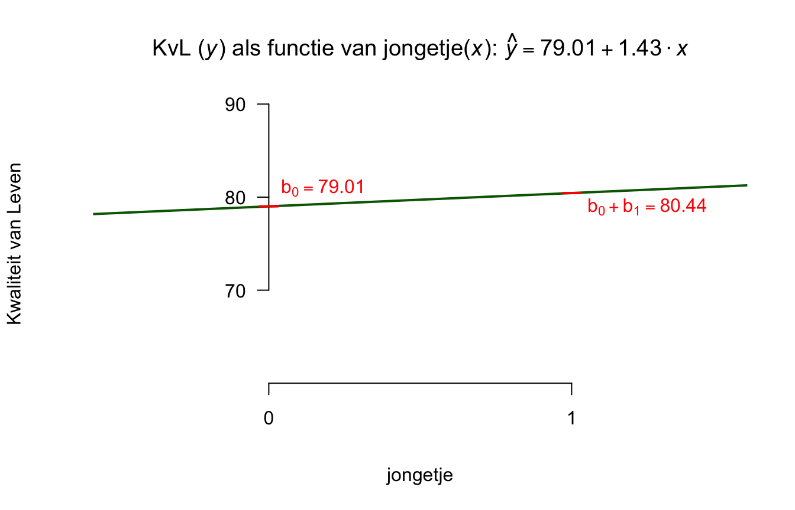
Figuur 5.45: -
Het lijntje, wat een beetje schuin omhoog loopt, is een beetje raar. Alsof we willen weten hoe hoog het lijntje (\(\hat{y}\)) zit bij ‘\(x = 0.5\)’ of ‘\(x = 2\)’. Voor de predictor hebben we maar twee betekenisvolle (praktische) waarden (‘\(0\)’ en ‘\(1\)’). Als \(x = 0\) (of dus \(\text{'jongetje'} = 0\)) dan hebben we het dus over de meisjes (meisjes zijn de referentiegroep, omdat die gelijk zijn, qua voorspelling aan \(b_0 = 79.01\)) en als \(x = 1\) (dus als \(x\) met \(1\) éénheid toeneemt), dan hebben we het over de jongetjes, en dan zit het lijntje \(b_1=1.43\) hoger (\(79.01 + 1.43 = 80.44\)). De slope (\(b_1\)) is de helling van het lijntje maar meteen ook het verschil in gemiddelden. Late we toetsen of de populatieslope (\(\beta_1\)) significant afwijkt van nul, wat denk jij?

Figuur 5.46: -
Geef het stelsel van hypotheses in termen van de ‘slope’:
- \(H_0: \beta_1 = 0\)
- \(H_1: \beta_1 \neq 0\)
Wijkt de slope (dus het verschil in gemiddelden) signifcant af van nul?
- Nee, de slope wijkt niet significant af van nul, omdat de \(p\)-waarde groter is dan \(\alpha = .05\);
- \(b_1 = b_{\text{jongetje}} = 1.43\), \(SE_b = 1.028\), \(t(614) = 1.40\), \(p = .16\).
Ik hoop dat je nu ziet dat het allemaal één pot nat is, een t-test voor twee gemiddeldenn of een enkelvoudige regressie aan de hand van een dummy-variabele. Het verschil in gemiddelden is gelijk aan de slope \(D = b_1\) (hooguit het plus- of minteken is omgedraaid als je voor de andere categorie een dummie gebruikt), verder hebben hun standaard errors (\(SE_D\) en \(SE_b\)), de toetstatieken \(t\), degrees of freedom en de \(p\)-waarde, precies dezelfde waarde! Lekker toch, alles draait om verschil! Een voordeeldje van deze regressie nu is dat we ook nog een proportie verklaarde variantie kado krijgen (\(R^2 = .003\)). Dus slechts \(0.3\%\) van de totale variatie in KvL is te verklaren aan de hand van (verschil in) geslacht.
‘Enkelvoudige Regressie-analyse’ voor het vergelijken van drie steekproefgemiddelden aan de hand van twee dummy-variabelen.
\(\:\:\:\:\:\:X (\text{nominaal})\:\:\rightarrow \:\: Y(\text{continue})\)
In tabel met de aangemaakte dummies, heb ik ook drie dummies gemaakt voor de nominale variabele ‘Aapsoort’ die uit drie categorieën (groepen, levels, waarden, niveaus, condities, cellen) bestaat. Als een predictor nominaal is, noemen we hem ook wel een ‘factor’. En heel vaak willen we weten, als onderzoeksvraag of er verschil is in gemiddelden tussen de drie (of meer) groepen. Als je te maken hebt met slechts één factor (bijvoorbeeld ‘aapsoort’ met drie categorieën) en één afhankelijke variabele (bijvoorbeeld ‘lengte’), dan doen we normaal gezien een éénweg ANOVA (Denk weer proportie verklaarde variantie) en vervolgens doen we \(t\)-testen voor elk ‘paar’ van gemiddelden in de zogenaamde ‘posthoc’ procedure om te kijken welke gemiddelden significant van elkaar verschillen. Maar ook dit kunnen we doen aan de hand van een regressie-analyse! Moeten we dus wel weer dummies maken. Als je factor uit drie categorieën bestaat, zoals bij ‘aapsoort’, heb je slechts twee dummies nodig. Je mag dus weer kiezen. Maar omdat ik zo gek ben op Bonobo’s wil ík graag die groep als referentie (groep). Een referentie punt of ‘ding’ is ook wel een ding ten opzichte waarvan je andere dingen vergelijkt. We zouden dus dus onderzoeken of Gorilla’s bijvoorbeeld groter (of kleiner) zijn dan de Bonobo’s. Een referentiegroep is altijd die groep die als nul gecodeerd staan, zodat hun voorspelling (voor lengte bij aapjes) gelijk is aan het intercept. De referentiegroep is, in geval van twee dummies, als biede dummies de waarde nul hebben en dus beide dummies niet waar zijn, kijk maar weer even in de tabel hieronder.
| \(i\) | Geslacht | Jongetje | Meisje | Aapsoort | Orang-Oetan | Gorilla |
|---|---|---|---|---|---|---|
| 1 | jongen | 1 | 0 | Bonobo | 0 | 0 |
| 2 | meisje | 0 | 1 | Gorilla | 0 | 1 |
| 3 | jongen | 1 | 0 | Orang-Oetan | 1 | 0 |
| 4 | jongen | 1 | 0 | Gorilla | 0 | 1 |
| 5 | meisje | 0 | 1 | Bonobo | 0 | 0 |
| 6 | meisje | 0 | 1 | Bonobo | 0 | 0 |
| … | … | … | … | … | … | … |
Je ziet dus wanneer een aapje een ‘bonobo’ is, dat hij op beide dummies een nul scoort. De regressie vergelijking, met twee dummies (die samen dus voor de drie categorieen coderen van slechts één variabele, ‘Aapsoort’, nog steeds enkelvoudige regressie dus), zou er iets langer uitzien:
+ $\hat{Y}_{i} = b_0 + b_1 \cdot \text{dummy}_{i1} + b_2 \cdot \text{dummy}_{i2}$
+ $\hat{\text{lengte}}_{i} = b_0 + b_1 \cdot \text{Orang-Oetan}_{i1} + b_2 \cdot \text{Gorilla}_{i2}$Als je dus zou weten wat de waarde van de regressiegewichten zouden zijn, kun je dus de drie groepsgemiddelden uitrekenen:
+ $\hat{\text{lengte}}_{\text{bonobo}} = b_0 + b_1 \cdot 0 + b_2 \cdot 0 = b_0$
+ $\hat{\text{lengte}}_{\text{orang}} = b_0 + b_1 \cdot 1 + b_2 \cdot 0 = b_0 + b_1$
+ $\hat{\text{lengte}}_{\text{gorilla}} = b_0 + b_1 \cdot 0 + b_2 \cdot 1 = b_0 + b_2$
+ $b_0$ is dus de verwachte waarde voor de bonobo's.
+ $b_1$ is het verschil in gemiddelden tussen de orang-oetan en de bonobo's
+ $b_2$ is het verschil in gemiddelden tussen de gorilla's en de bonobo's
+ je mist dus alleen het verschil tussen orang-oetans en gorilla's. Daarvoor zou je dus een andere referentiegroep moeten kiezen.Opdracht 3
Nu for real. We gaan kijken of de sociaal economische status (SES) van een kind een effect heeft op de (gemiddelde) Kwaliteit van leven. In ons databetand is SES onderverdeeld in drie groepen (‘low’, ‘middle’ en ‘high’), ordinaal eigenlijk, maar ik behandel het alsof het nominaal is (dus volgorde van de groepen doet er niet toe). De onderzoeksvraag is dus of de drie groepen (populaties) van elkaar verschillen wat betreft hun gemiddelde Kwaliteit van Leven.
\(\:\:\:\:\:\:\text{SES} (\text{nominaal})\:\:\rightarrow \:\: \text{KvL}(\text{continue})\)
Normaal gezien, doe je dus een éénweg ANOVA met daarna (posthoc) de t-toetsen voor elk paar van gemiddelden. Wij pakken gewoon, een regressie-analyse, dus aan de hand van twee dummies. Laten we zorgen dat de groep “Middle (ISCED 3-4)” de referentiegroep wordt wanneer we de dummies aanmaken. Dat betekent dus we twee dummies voor de twee overige categorieën van SES (“Low (ISCED 0-2)” en “High (ISCED 5-8)”) moeten maken.
Hercodeer de variabele SES.
- Zorg dat je de data weer ziet in JASP en druk op het plusje bij de meest rechter kolom om de eerste dummy aan te maken.
- Geef de dummy de naam
sesLow, druk op het ‘R’-icoontje, en vervolgens op ‘Create Column’. - Nu de vergelijking die JASP moet checken invoeren. Let vooral op de spelling van de labels zoals ze in het bestand staan, best tricky soms, ook de spaties en hoofdletters moeten kloppen.
- Type onder “Enter your R code here : )” de volgende stelling:
SES == 'Low (ISCED 0-2)'en druk op vervolgens op ‘Compute column’
- Type onder “Enter your R code here : )” de volgende stelling:
- Kijk nu in je bestand of de hercodering klopt; dus als een kind bij de variabele ‘SES’, de waarde ‘Low (ISCED 0-2)’ heeft, dan moet er bij de dummy ‘sesLow’ de waarde ‘\(1\)’ staan en anders dus een ‘\(0\)’
Herhaal deze grap voor de categorie “High (ISCED 5-8)” en noem de dummy ‘sesHigh’.
- Gebruik dus nu
SES == 'High (ISCED 5-8)'
- Gebruik dus nu

Figuur 5.47: -
Dus nu kunnen we de regressie-analyse draaien.
- Ga via ‘Regression’ en kies ‘Linear regression’ onder ‘Classical’.
- Plaats KvL (‘QOL’) onder ‘Dependent Variable’ en de twee dummies bij de covariates
- Als extra heb ik onder ‘Statistics’ nog de optie ‘Confidence intervals’ en ‘Descriptives’ aangevinkt.
Figuur 5.48: -

Figuur 5.49: -
Hierboven de resultaten van de regressie-analyse, we beginnen even bij het model als geheel, dus kijk naar de ‘Model Summary’ en de ‘ANOVA’ tabel. Hoeveel variatie verklaart ons regressiemodel? Wat is de waarde van de bijbehorende toetsstatiek, met bijbehorende vrijheidsgraden en significantie? Draagt het model significant bij aan de voorspelling van KvL, wijkt \(R^2\) dus significant af van nul?
- \(R^2 =.012\)
- \(F(2, 613) = 3.58\), \(p = .029\)
- Ja, want onze \(p\)-waarde is kleinder dan \(\alpha = .05\)
Het effect van SES is dus significant en we willen nu dus weten welke groepen significant van de referentiegroep verschillen. Geef eerst de regressievergelijking.
\(\hat{KvL}_{i} = 82.00 + \text{-}4.64\cdot \text{sesLow}_{i1} + \text{-}2.90 \cdot \text{sesHigh}_{i2}\:\:\) of korter;
\(\hat{KvL}_{i} = 82.00 -4.64\cdot \text{sesLow}_{i1} - 2.90 \cdot \text{sesHigh}_{i2}\)
Geef voor elke SES groep de verwachte of voorspelde waarde voor KvL ob basis van de regressievergelijking. Dus reken de groepsgemiddelden uit.
- \(\hat{\text{KvL}}_{\text{sesMiddle}} = b_0 + b_1 \cdot 0 + b_2 \cdot 0 = b_0 = 82.00\)
- \(\hat{\text{KvL}}_{\text{sesLow}} = b_0 + b_1 \cdot 1 + b_2 \cdot 0 = b_0 + b_1 = 82.00 - 4.64 = 77.36\)
- \(\hat{\text{KvL}}_{\text{sesHigh}} = b_0 + b_1 \cdot 0 + b_2 \cdot 1 = b_0 + b_2 = 82.00 - 2.90 = 79.10\)
Is het gemiddelde van de groep ‘SES Low’ significant lager dan het gemiddelde voor de referentiegroep (‘SES Middle’)? Besef dat je specifiek voor deze vergelijking onder \(H_0\) verwacht dat beide gemiddelden gelijk zijn, dus het verschil in gemiddelden zou dan nul moeten zijn en het regressiegewicht dus ook. Geef eerst het stelsel van hypotheses voor de slope (\(\beta_{\text{sesLow}}\) of \(\beta_1\)).
\(H_0: \beta_{\text{sesLow}} = 0\)
\(H_1: \beta_{\text{sesLow}} \neq 0\)
De groep ‘SES Low’ scoort, gemiddeld gezien, 4.64 punten lager op KvL dan de groep ‘SES Middle’ en dit verschil is significant lager, \(b_{\text{sesLow}} = -4.64\), \(SE_b =2.16\), \(t(613)=-2.15\), \(p=.032\).
We kunnen dus aannemen dat gemiddeld gezien de populatie kinderen met een lage SES een lagere kwaliteit van leven hebben dan kinderen met een gemiddelde SES.
Wijkt het gemiddelde van de groep ‘SES High’ significant af van de referentiegroep?
- Ook dit gemiddelde ligt lager (2.90 punten) dan dat van de referentiegroep en het verschil wijkt ook significant af van nul (de twee gemiddelden verschillen dus van elkaar), \(b_{\text{sesLow}} = -2.90\), \(SE_b =1.23\), \(t(613)=-2.35\), \(p=.019\).
- We kunnen dus ook aannemen dat gemiddeld gezien de populatie kinderen met een hoge SES een lagere kwaliteit van leven hebben dan kinderen met een gemiddelde SES.
- Nu hebben we twee vergelijkingen bekeken, maar missen nog de vergelijking tussen de groep ‘SES Low’ en ‘SES High’. We zouden nog een dummy, ‘sesMiddle’, kunnen aanmaken, maar daar heb ik nu geen zin in. Sterker nog JASP herkent Nominale predictoren (factoren) en maakt op de achtergrond dummies voor je, je krijgt ze dan alleen niet in je bestand als aparte kolommen. Een ander nadeel als je dit werk weggeeft aan JASP, is dat hij kiest welke categorie de referentiegroep wordt en heb je de boel dus niet meer zelf onder controle. Ik heb de variabele SES twee keer in het bestand staan; de kolom met de naam ‘SES’ erboven heeft de drie categorieën, gewoon als tekst label. De kolom met ‘ses_group’ erboven heeft ook dezelfde drie categorieën, maar ze hebben ook een groepsnummer gekregen, check maar door één keer op de variabelenaam boven aan de kolom te klikken, dan krijg je de coderingen te zien.
- Run opnieuw een regressie met KvL als afhankelijke variabele en kijk of je kunt uitvogelen welke groep JASP als referentie neemt als je alleen de variabele ‘SES’ bij ‘Factors’ knalt.

Figuur 5.50: -
Als het een factor is zonder getal-codering voor de labels, kiest JASP de label als referentiegroep die alpabetisch het eerst voorkomt. Hier dus “High (ISCED 5-8)”).
- Run nog een keer de regressie, maar maak nu gebruik van de factor ‘ses_group’. Weer onder ‘Factors’ dus.

Figuur 5.51: -
Als het een factor is met een getal-codering voor de labels, kiest JASP de label als referentiegroep die het laagste getal als codering heeft. Hier dus “Low (ISCED 0-2)” want deze label is de waarde \(1\) toegekend. Ik laat de output van deze regressie hieronder zien.

Figuur 5.52: -
< br >
Hoe groot is het verschil in gemiddelde KvL tussen de groepen ‘sesLow’ en ‘sesHigh’? Welk groep scoort gemiddeld het hoogst?
- In de ‘Coefficients’ tabel zie je de twee labels achter ‘ses_group’ staan die JASP dus afzet tegen (vergelijkt met) de referentiegroep, de twee dummies. Dan is de andere, niet genoemde label, dus de referentiegroep en hun gemiddelde is gelijk aan het intercept (\(b_0\)).
- De groep ‘sesLow’ scoort gemiddeld het laagst (\(M_{\text{sesLow}} = b_0 = 77.36\)).
- De groep sesHigh scoort gemiddeld het hoogst (\(M_{\text{sesHigh}} = b_0 + b_{\text{sesHigh}} = 77.36 + 1.75= 79.11\)).
- Het verschil in gemiddelden \(M_D=1.75\) wijkt niet significant af van nul, \(b_{\text{sesHigh}} = 1.75\), \(SE_b =1.98\), \(t(613)=0.88\), \(p=.38\).
- In de ‘Coefficients’ tabel zie je de twee labels achter ‘ses_group’ staan die JASP dus afzet tegen (vergelijkt met) de referentiegroep, de twee dummies. Dan is de andere, niet genoemde label, dus de referentiegroep en hun gemiddelde is gelijk aan het intercept (\(b_0\)).
Al met al kunnen we dus concluderen dat kinderen met een gemiddelde sociaal economische achtergrond, over het algemeen hoger scoren op de vragenlijst voor Kwaliteit van Leven (DUX 25) dan kinderen met een lagere, of juist een hogere sociale achtergrond. Die laatste twee groepen scoren over het algemeen min of meer hetzelfde.
Okay, ik moet toegeven, ik maak lange zinnen, maar besef wel dat die laatste twee zinnen, eigenlijk je hele verhaal vertellen en dus niet al die cijfers. Wat dat betreft heeft Wilders wel gelijk; We willen alleen maar “meer” of “minder”, hoeveel meer of minder vergeten we toch wel. Een mens is maar zo kien als dat zijn ‘meetniveau-kunde’ gaat. Maar goed, als je te maken hebt met een factor (nominale predictor) en één afhankelijke variabele doe je normaal gezien dus een éénweg ANOVA (‘oneway ANOVA’), een ‘éénweg’, omdat je maar één factor hebt dus, als je twee factoren zou hebben (dus je respondenten op twee manieren indeelt, zeg ‘aapsoort’ en ‘geslacht’), dan doe je een tweeweg ANOVA. Zowel bij de éénweg als bij de tweeweg zul je nog wel \(t\)-toetsen (voor verschil in gemiddelden) moeten doen om te kijken welke groepen nou echt van elkaar verschillen. ANOVA’s, ook bij regressie zijn een soort poortwachter toetsen, die kijken of er überhaupt iets gebeurt qua verklaarde variatie (\(R^2\)), maar dan weet je dus nog niet wat er precies aan de hand is (welke slope van nul afwijkt of welke gemiddelden van elkaar afwijken). Ik doe in de volgende opgave ‘even’ een echte éénweg ANOVA, zodat je ook weet hoe het makkelijk (en normaal) kan. Het probleem ontstaat pas als we meer predictoren hebben van verschillende meetniveaus, dan moet je wel alles in een regressie knallen om maximale controle te behouden en de boel bregrijpelijk te houden. Daarom oefenden we in dit hoofdstuk vast met dummies!
"Alles is immers Regressie"5.10.3 Eénweg ANOVA (oneway ANOVA)
\(\:\:\:\:\:\:X (\text{nominaal})\:\:\rightarrow \:\: Y(\text{continue})\)
De meest snelle en simpele weg om te onderzoeken of een factor (nominale predictor, dus een groepsindeling) een effect heeft op een continue afhankelijke variabele (of de groepen dus van elkaar verschillen!), doen we normaal gezien een éénweg ANOVA (denk weer \(R^2\)) gevolgd door een aantal \(t\)-testen (eventueel met extra correctie voor type I fouten, die testen zijn dan iets conservatiever dan normaal, zodat er niet te gemakkelijk een type I fout wordt gemaakt) om uit te zoeken welke groepen van elkaar verschillen. Wij hebben alles al uitgezocht via de moeilijkere weg, maar wel de weg die bijna altijd bewandelbaar is. We gaan weer kijken naar het effect van de sociaal economische status, maar nu dus aan de hand van een eenweg ANOVA.
Zonder de handmatige rekenregels en formules voor de kwadratensommen voor de ANOVA tabel endergelijke, behandel ik hier wel even de stappen binnen JASP. Zodat je de boel wel gewoon kunt draaien en interpreteren!
Opdracht 4, Oneway ANOVA
Om toch een klein beetje een (ANOVA) gevoel te krijgen qua gok of voorspel spelletje, beginnen we gewoon even met de groepsgemiddelden. Alleen is het nu niet een aapje dat komt binnen lopen maar een heus kind (Ja ja, en echte data). Laten we eerst de gemiddelden op vragen, het grote gemiddelde en de gemiddelden per SES groep.
Zorg dat je het bestand ‘qol_data.jasp’ hebt openstaan. Om het grote gemiddelde op te vragen neem je de volgende stappen:
- Druk op ‘Descriptives’ en voeg de variabele KvL (‘QOL’) toe aan de box onder ‘Variables’


Figuur 5.53: -
- Om vervolgens ook de gemiddelden per groep (cel-gemiddelden) (in een nieuwe tabel) te laten berekenen, druk je weer op ‘Descriptives’
- Voeg ‘QOL’ weer toe aan de box onder ‘Variables’ en voeg ‘SES_group’ toe onder ‘Split’.

Figuur 5.54: -
Hieronder de twee tabellen om ‘het’ spelletje te kunnen spelen.

Figuur 5.55: -

De Kids staan buiten en iemand komt binnen wandelen, geen idee van welke SES groep, wat is je beste gok voor KvL? Laten we voor het gemak maar één decimaal nauwkeurigheid aanhouden.
- Natuurlijk gebruik je het grote gemiddelde als beste gok als geen diagnostische informatie hebt over het kind, als je dus niet weet uit welke SES groep het kind komt. Je gebruik dus als beste gok: \(\overline{\text{KvL}} = 79.6\)
Heel ‘toevallig’ komt het kind binnen wandelen met \(\text{id} = 15\), bij mij in het databestand, het tweede kind en heeft een (geobserveerde) score van \(92\) punten (\({\text{KvL}}_{\text{id} = 15} = 92\)). Hoe groot is de gokfout die je maakt?
- \(\text{KvL}_{\text{id} = 15} - \overline{\text{KvL}} = 92 - 79.6 = 12.4\)
- Dit is dus de (totale) afwijking van de observatie naar het grote gemiddelde, of ook wel het blauwe streepje.
- Als je dit voor iedereen doet (dus 616 \(keer\)), dan alle afwijkingen kwadrateert en vervolgens optelt, dan heb je Sum of Square due to Total (\(\text{SST}\)), de maat in een ANOVA tabel voor de totale variatie.
- \(\text{KvL}_{\text{id} = 15} - \overline{\text{KvL}} = 92 - 79.6 = 12.4\)
Nog een keer gokken maar dan met diagnostische informatie! Als ik je zou vertellen dat een kind een ‘Middle SES’ als achtergrond heeft, wat zou je dan als beste gok geven?
Je gebruikt nu het specifieke groepsgemiddelde als beste gok. Dus \(\overline{\text{KvL}}_{\text{Middle SES}} = 82.0\).
Hoeveel heb je je voorspelling nu aangepast vanwege deze diagnostische iformatie? Dus hoeveel verschil is er tussen deze specifieke voorspelling en de algemenere?
\(\overline{\text{KvL}}_{\text{Middle SES}} - \overline{\text{KvL}} = 82.0 - 79.6 = 2.4\)
- Bij regressie is dit eigenlijk meer werk, omdat je eerst nog de voorspelde waarde (\(\hat{Y}_i\)) moet uitrekenen om vervolgens \(\hat{Y}_i - \bar{Y}\) in te kunnen vullen. Hier gebruik je meteen het specifieke groepsgemiddelde, wel zo makkelijk!
- Bij mij is dit (\(2.4\)) dus het groene streepje, en als je dit voor iedereen doet, vervolgens kwadrateert, en dan optelt, Krijg je de Sum of Squares due to model (\(\text{SSM}\)), de maat verklaarde variatie. In de literatuur, kom je ook termen als ‘SSTussen’, ‘SSBetween’, ‘SSGroup’ of ‘SSfactor’ tegen.
Dus hoe groot is nu nog de gokfout als kind met \(\text{id} = 15\) binnen komt wandelen als je het specifieke groepsgemiddelde gebruikt? Dus bereken het uitendelijke residu voor dit kind (\(e_{\text{id} = 15}\), dus error of rood streepje).
${ = 15} - {} = 92 - 82 = 10
- Dit stukje (of rood streepje van \(10\) lang) is dus het laatste beetje variatie dat het model (dus de factor SES) niet kan verklaren. Zou je dit voor iedereen doen, de error uitrekenen, dan weer kwadrateren en vervolgens optellen, dan krijg je de Sum of Squares due to Error (\(\text{SSE}\)), of wat je ook vaak tegenkomt zijn termen als ‘SSBinnen’, ‘SSWithin’, ‘SSResidual’.
Laten we de echte eenweg ANOVA draaien en kijken hoeveel variatie verklaard kan worden door verschillen in SES. Het stelsel van hypotheses, kun je op twee manieren formuleren, in termen van de VAF (\(\rho^2\)) of in termen van groepsgemiddelden (\(\mu\)). Geef beide vormen:
- \(H_0: \: \rho^2 = 0\)
- \(H_0\) in woorden: verschillen in SES verklaren geen variatie in
- \(H_1: \: \rho^2 > 0\)
KvL.
- \(H_1\) in woorden: verschillen in SES verklaren wel variatie in KvL.
- \(H_0: \: \mu_{\text{ses low}} = \mu_{\text{ses middle}} =\mu_{\text{ses high}}\)
- In woorden: De drie populaties (groepen) hebben gelijke gemiddelden op KvL.
- \(H_1: \: \text{tenminste twee } \mu\text{-'tjes}\text{ verschillen van elkaar}\)
- Het staat eigenlijk al half in woorden, vooral omdat de \(H_1\) een beetje onhandig of onduidelijk te formuleren is. Ze zeggen ook wel heel flauw:
- \(H_1: \: \text{niet } H_0\)
- Maar denk vooral voor de \(H_1\): Er is dus ergens verschil tussen twee populatiegemiddelden, maar waar, tussen welke twee populaties is er verschil? Dat vertelt de \(H_1\) je niet. Daaram vervolg je de eenweg ANOVA dus ook met een Post Hoc procedure met nog wat t-testjes (per vergelijking van twee populaties) om uit te zoeken waar het verschil zit of welke verschillen significant zijn.
- Het staat eigenlijk al half in woorden, vooral omdat de \(H_1\) een beetje onhandig of onduidelijk te formuleren is. Ze zeggen ook wel heel flauw:
- \(H_0: \: \rho^2 = 0\)
Om het stelsel van hypothese te toetsen gaan we dus de ANOVA tabel voor de éénweg ANOVA opvragen (ik vraag ook meteen de rest op, voor assumptie checks en een Post Hoc procedure):
- Druk in het menu boven aan voor de ‘ANOVA’ optie en druk onder ‘Classical’ de optie ‘ANOVA’ aan.
- Plaats ‘QOL’ in het vakje onder ‘Dependent Variable’.
- Plaats de factor ‘ses_group’ onder ‘Fixed Factors’
- Vink onder ‘Display’ de volgende opties aan:
- ‘Descriptives statistics’
- ‘Eta squared’ (\(\eta^2\)) aan, dit is hetzelfde als \(R^2\), de VAF dus.
- ‘Omega squared’ (\(\omega^2\))
- Onder ‘Assumption checks’ vink je als extra aan:
- ‘Homogeneity tests’
- ‘Q-Q-plot of residuals’
- Onder ‘Post Hoc Tests’ voeg je ‘ses_group’ toe aan de rechter box en onder ‘Type’ vink je de volgende opties aan:
- ‘Standard’
- ‘Effect size’, en onder
- ‘Display’ vink je ook nog ‘Confidence intervals’ aan.
- En bij ‘Descripives plots’ verplaats je ‘ses_group’ naar het vakje onder ‘Horizontal Axis’. Voor een leuk en overzichtelijk plaatje.
- Druk in het menu boven aan voor de ‘ANOVA’ optie en druk onder ‘Classical’ de optie ‘ANOVA’ aan.


Figuur 5.56: -
Laten we naar de resultaten in de output kijken, we beginnen met de ANOVA tabel:

Figuur 5.57: -
Hoeveel Variatie in KvL scores kun je verklaren aan de hand van de factor SES? Geef dus de proportie verklaarde variantie, de VAF. Hoe is deze waarde berekend?
VAF: \(R_{\text{ses}}^2 = \eta_{\text{ses}}^2 = 0.0115\)
- ‘Eta-Squared’ is dus precies hetzelfde als \(R^2\), en we gebruiken dit symbool als effectmaat bij een eenweg ANOVA. We kunnen dus zeggen dat ruim \(1\%\) van de totale variatie in KvL scores verklaard wordt door verschillen in SES. (Das niet veel, gelukkig hangt je KvL ook echt wel van andere dingen af, “Geld maakt niet gelukkig” zeggen ze toch altijd?)
- Voor de berekening moet je het verklaarde gedeelte (\(SSM\) of \(SSfactor\)) delen door de Totale Variatie (\(SST\)). En om \(SST\) te berekenen tel je het verklaarde gedeelte (\(SSM\)) en het onverklaarde gedeelte (\(SSE\) of \(SSResidual\)) bij elkaar op: \(SST = SSM + SSE\).
\[R^2 = \eta_{\text{ses}}^2 = \frac{SSM}{SST} = \frac{SSM}{SSM + SSE}= \frac{1138.44}{1138.44 + 97591.09}= \frac{1138.44}{98729.53}=.0115\]
Wijkt de \(R^2\) (of dus \(\eta^2\)) significant af van nul?
Ja, want \(\eta_{\text{ses}}^2 = .012\), \(F(2, 613) = 3.58\), \(p = .029\)
Aangezien de \(p\)-waarde dus kleiner is dan \(\alpha = .05\), kunnen we de \(H_0\) verwerpen en is de alternatieve hypothese dus waarschijnlijk waar:
- Er valt dus wel degelijk variatie te verklaren, sowieso binnen onze steekproef, maar we mogen dit effect dus generaliseren naar de populatie kinderen, want dat hebben we net getoetst, aan de hand van de \(F\)-toets voor de ANOVA.
- Als er dus variatie te verklaren valt, komt dat dus doordat er tenminste twee (populatie) gemiddelden van elkaar verschillen, maar (en) we weten nog niet welke (de andere \(H_1\), in termen van gemiddelden dus)!
Officieel gebruiken we \(eta^2\) als proportie verklaarde variantie voor de steekproef. Voor de generalisatie naar populaties gebruiken we voor de VAF een iets voorzichtigere maat, namelijk ‘omega kwadraad’ en is altijd iets kleiner kleiner dan eta-kwadraat. Bij regressie analyse gebruiken we \(R_{\text{adjusted}}^2\) voor de populatie als VAF (in plaats van \(R^2\), want die is voor je steekproef). Anders gezegd: \(\omega^2\) is dus te vergelijken met \(R_{\text{adjusted}}^2\). Wat kunnen we dus verwachten voor de proportie verklaarde variatie in KvL in de populatie?
- \(\omega_{\text{ses}}^2 = .008\) Binnen de populatie kunnen dus \(0.8\%\) van de totale variatie in KvL scores verklaren aan de hand van verschillen in SES.
Ik pak de bijbehorende Assumptie check even als laatste, ik wil heel graag naar het antwoord op de vraag “Welke groepen verschillen significant van elkaar?” Maar hoeveel vergelijkingen moet je dan nog bekijken? Als je drie groepen (condities, levels, cellen, populaties of dingen) met elkaar wil vergelijken, en je telkens twee groepen met elkaar vergelijkt (dus een paar vormt van twee dingen), hoeveel vergelijkingen dekken dan alle mogelijke verschillen? Of beter gezegd: Hoeveel t-testen moet je doen om te weten welke groep van welke verschilt? En hoeveel één aan één vergelijkingen moet je bekijken bij vier condities (zeg conditie A, B, C en D)? Hoeveel bij tien categorieën (zeg groep A t/m J)?
Bij een factor met 3 condities (A, B, C): ‘A met B’, ‘A met C’ en ‘B met C’, dus drie vergelijkingen (‘B met A’ is hetzelfde als ‘A met B’, dus die niet dubbel tellen).
Bij een factor met 4 condities (A, B, C, D): ‘A met B’, ‘A met C’ en ‘A met D’, ‘B met C’, ‘B met D’ en ‘C met D’ dus zes vergelijkingen.
Bij een factor mer 10 condities (A, B, …, J): Ja wacht is ff, dat zijn er heel veel, die ga ik toch niet uitschrijven? Laten we het even bekijken aan de hand van een ‘matrix’, een \(10\) x \(10\) matrix, dus tien rijen en tien kolommen (een vierkante tabel met tien rijen en tien kolommen), dan kunnen we even ‘makkelijk’ en systematisch tellen hoeveel combinaties van twee letters er mogelijk zijn:
| A | B | C | D | E | F | G | H | I | J | |
|---|---|---|---|---|---|---|---|---|---|---|
| A | AA | AB | AC | AD | AE | AF | AG | AH | AI | AJ |
| B | BA | BB | BC | BD | BE | BF | BG | BH | BI | BJ |
| C | CA | CB | CC | CD | CE | CF | CG | CH | CI | CJ |
| D | DA | DB | DC | DD | DE | DF | DG | DH | DI | DJ |
| E | EA | EB | EC | ED | EE | EF | EG | EH | EI | EJ |
| F | FA | FB | FC | FD | FE | FF | FG | FH | FI | FJ |
| G | GA | GB | GC | GD | GE | GF | GG | GH | GI | GJ |
| H | HA | HB | HC | HD | HE | HF | HG | HH | HI | HJ |
| I | IA | IB | IC | ID | IE | IF | IG | IH | II | IJ |
| J | JA | JB | JC | JD | JE | JF | JG | JH | JI | JJ |
Als ik vraag naar het unieke aantal ‘combinaties’ van twee verschillende letters (denk dus condities) dan doet de volgorde van de letters er niet toe (anders had ik wel naar het aantal ‘permutaties’ gevraagd en dit mag je meteen vergeten). Dus “AB” is dezelfde combinatie als “AB” (maar het zijn wel twee verschillende ‘permutaties’ of ‘volgordes’).
- In totaal heeft deze matrix \(100\) elementen of cellen (\(10\) x \(10\)).
- Op de diagonaal van linksboven naar rechtsonder, zie je letters met zichzelf, dus “AA”, “BB” enzovoort. Die zijn niet interessant voor ons. Dit zijn er tien, en die moeten ervan af, houden we dus nog \(90\) vakjes over.
- Dan hebben we nog met de ‘dubbele combinaties’ te maken: Waar de eerste rij en de tweede kolom samen komen, zie je de combinatie “AB” staan, maar diezelfde ‘combinatie’ zie je ook op positie waar de tweede rij en de eerste kolom samen komen, maar dan dus “BA”. Dus nog een keer delen door \(2\) en we zijn klaar. Altijd handig zo’n matrix om dus even systematisch bepaalde combinaties van dingen te tellen.
Om uit te rekenen hoeveel unieke combinaties (\(k\)) in deze matrix staan, kun je ook de volgende formule toepassen:
\[k = \frac{\text{aantal condities} \cdot \text{aantal condities}-\text{aantal condities}}{2}\] Omdat we voor het aantal condities van een factor, vaak de hoofdletter ‘I’ gebruiken, wordt het formuletje, en ingevuld, ook wel:
\[k = \frac{I \cdot I - I}{2} = \frac{I \cdot (I - 1)}{2} = \frac{10 \cdot (10 - 1)}{2} = \frac{10 \cdot 9}{2} = \frac{90}{2} = 45\]
Dit betekent dus dat als je tien condities in een factor hebt, dan heb je dus te maken met maar liefst \(45\) vergelijkingen en dus ook \(45\) \(t\)-testen die je moet bekijken. Best veel dus. En juist daarom doen we een Post Hoc procedure. Want als je veel toetsen moet doen, en je hebt bij elke toets een kans van \(5\%\) op een type I fout (omdat je normaal gezien \(\alpha = .05\) hanteert), dan wordt de kans wel heel groot dat je ergens, of bij tenminste één van die t-testjes, dus zo’n type I fout maakt. Bedenk nog even dat een type I fout hetzelfde is als ‘iemand onterecht in de gevangenis gooien’ of ‘zeggen dat iemand ziek is, terwijl hij dat niet is’. Of dus in de statistiek: zeggen of beslissen dat er een verschil (effect) is, terwijl er in de populatie helemaal geen verschil is. Een ‘false positive’ dus. De Post Hoc procedure is strenger (conservatiever) dan normaal en zorgt ervoor dat je dus iets minder gemakkelijk de \(H_O\) verwerpt. Er bestaan binnen de Post Hoc procedures verschillende soorten correcties voor type I fouten, wij pakken gewoon de standaard optie in JASP, dus “Tukey”! Hier onder nog een keer de gemiddelden en daaronder de drie ‘Post Hoc’ \(t\)-testen.

Figuur 5.58: -

Figuur 5.59: -
Gelukkig hebben wij maar met drie vergelijkingen te maken en dus niet \(45\)! Ik kijk eerst even naar de eerste en tweede groep (Low en Middle). Wat zegt de \(H_0\) over het verschil in gemiddelden voor deze twee populaties (condities)?
- \(H_0: \: \mu_{\text{low}} = \mu_{\text{middle}}\:\:\:\) of;
- \(H_0: \: \mu_{\text{low}} - \mu_{\text{middle}}=0\:\:\:\) of;
- \(H_0: \: \mu_{\text{middle}} - \mu_{\text{low}}=0\)
Wat is het geobserveerde verschil in gemiddelden, en welke volgorde van aftrekking heeft JASP dus gekozen.
- \(\overline{\text{Kvl}}_{\text{low}} - \overline{\text{Kvl}}_{\text{high}} = 77.36 - 82.00 = -4.64\)
Wat is de bijbehorende toetsstatistiek en hoe is die berekekend?
\(t(613) = -2.15\), het minnetje mag je van mij weglaten, wij weten welk gemiddelde hoger is, en daar gaat het om, het minnetje heeft alleen met volgorde van aftrekking te maken
\(t(df_{\text{error}}) = \frac{\bar{Y}_{\text{low}}-\bar{Y}_{\text{middle}}}{SE_D}\)
- \(t(613) = \frac{77.36 - 82.00}{2.16} = \frac{-4.64}{2.16} = -2.15\)
- De vrijheidsgraden haal je dus uit de ANVO tabel, of;
- \(df_{\text{error}} = N - I = 616 - 3 = 613\), Waarbij ‘\(N\)’ het totale aantal observaties is en ‘\(I\)’ het aantal categorieën (condities, groepen) voor de factor.
Als je de bijbehorende \(p\)-waarde zelf zou opzoeken in de \(t\)-tabel (zie appendix) en neem \(df = 100\) (in plaats van \(df = 613\), je rondt vrijheidsgraden dus altijd naar beneden af), wat zou dan de tweezijdige overschrijdingskans zijn?
- Eénzijdig overschrijdingskans: Onze toetsstatistiek (\(t=2.15\)) ligt tussen \(t_{df = 100}=2.081\) en de \(t_{df = 100}=2.364\), dus onze \(p\) ligt tussen de \(p = .01\) en \(p = .02\).
- Dus de uiteindelijk tweezijdige overschrijdingskans ligt tussen de \(.02\) en de \(.04\) (dus keer 2).
- \(.02<p<.04\)
- Tot welke conclusie zou dit leiden over de houdbaarheid van de \(H_0\)?
- \(H_0\) verwerpen omdat de de \(p\)-waarde kleiner is dan \(\alpha = .05\). We mogen dus zeggen dat de populatie kinderen van ‘SES Low’ gemiddeld gezien lager scoort op KvL dan de populatie kinderen met ‘SES middle’.
Vergelijk de tweezijdige overschrijdingskans (significantie of \(p\)-waarde) volgens de Post Hoc procedure volgens “Tukey” met de handmatig opgezochte \(p\)-waarde, welk van de twee is het meest conservatief en welk van de twee het meest signicicant? Wat zou volgens deze \(p_{tukey}\)-waarde de conclusie zijn?
\(p_{tukey} = .081\) is in ieder geval groter dan $.02 <p_{handmatig}< .04
Dus \(p_{tukey}\) is de conservatievere \(p\)-waarde en dus het minst significant. Algemeen: Hoe hoger een \(p\)-waarde, des te minder significant (belangrijk). Dus hoe lager een \(p\)-waarde, des te significanter (belangrijker) is je gevonden verschil juist. Bij een lage \(p\)-waarde zou je eigenlijk moeten schrikken (van jouw gevonden verschil), omdat het blijkbaar een fiets is, en dat ligt niet in de verwachting binnen de \(H_0\), zoals brood en koekjes.
Omdat \(p_{tukey}>\alpha_{.05}\) kunnen we de \(H_0\) niet verwerpen en moeten we dus concluderen dat de twee populatiegemiddelden niet van elkaar verschillen (en de twee populaties dus gemiddeld gezien gewoon hetzelfde scoren)
- ALs we geen Post Hoc procedure (met extra correctie voor het maken van een type I fout dus) hadden gedaan, hadden we dus wel de \(H_0\) verworpen. Toetsen met extra correctie voor type I fouten, dus strengere (conservatieve) toetsen, leiden minder vaak tot verwerping van de \(H_0\), omdat je meer bewijs (effect, verschil) nodig hebt om de \(H_0\) te kunnen verwerpen. Post Hoc toetsen geven dus een minder significant resultaat en dus hogere \(p\)-waarden per toets. Onderzoekers die maar al te graag hun \(H_1\) willen bewijzen, zijn dus ook niet dol op te strenge toetsen.
Welke twee steekproefgemiddelden wijken wel significant af van elkaar volgens ‘Tukey’.
- ‘Middle SES’ (\(M = 82.00\), \(SD = 12.49\)) scoort gemiddeld significant hoger op KvL dan de groep ‘High SES’ (\(M = 79.00\), \(SD = 12.49\)) omdat het verschil in gemiddelden van (\(M_D = 2.90\), \(SE_D = 1.23\)) dus significant afwijkt van nul, \(t(613) = 2.40\), \(p_{tukey} = .049\), Cohen’s \(d=0.23\).
Cohen’s \(d\) is een gestandaardiseerde effectmaat (‘effect size’), die je eigenlijk altijd moet rapporteren. Het gevonden verschil in gemiddelden (\(M_D = 2.90\)) is een ruw verschil, want ‘ruw is ruk’. Cohen’s \(d\) is het verschil in gemiddelden gedeeld door de standaardafwijking (dus eigenlijk een \(z\)-score, dus het aantal keer dat de standaardafwijking tussen de twee gemiddelden past):
Cohen’s \(d = \frac{\mu_1 - \mu_2}{\sigma}\)
Heel algemeen, in termen van populatie waarden en even aannemende dat de twee populatiestandaardafwijkingen gelijk zijn. Specifieke formules hangen een beetje af van welke aannames je doet over de populaties die je vergelijkt. Als vuistregel kun je aanhouden voor Cohen’s \(d\):
- \(d \approx .2\), small effect
- \(d \approx .5\), medium effect
- \(d \approx .8\), large effect
- ‘Middle SES’ (\(M = 82.00\), \(SD = 12.49\)) scoort gemiddeld significant hoger op KvL dan de groep ‘High SES’ (\(M = 79.00\), \(SD = 12.49\)) omdat het verschil in gemiddelden van (\(M_D = 2.90\), \(SE_D = 1.23\)) dus significant afwijkt van nul, \(t(613) = 2.40\), \(p_{tukey} = .049\), Cohen’s \(d=0.23\).
Wat Meneertje Cohen eigenlijk wil zeggen, is dat een gevonden verschil in gemiddelden best wel eens ‘super duper kneiter’ significant kan zijn (je bent er dus zeker van dat je het gevonden verschil mag generaliseren), maar je er soms helemaal geen ruk aan hebt (ruw is dus echt ruk). Wat zou het praktisch betenenen als jongens gemiddeld een \(8.10\) halen voor een frans examen en meisjes gemiddeld een \(8.14\)? Denk je dan echt dat in het werkveld, of in het gewone leven, meisjes zoveel beter presteren als het gaat om taalvaardigheid voor Frans? Een verschil in gemiddelde tentamencijfer van slechts \(0.04\) eenheden is wel heel klein (al ben je er nog zo zeker van dat het echt waar is) en zal praktisch, dus qua prestatie heus niet veel uitmaken. Stel dat je weet dat de standaardafwijking een waarde heeft van \(1.6\) (dus \(\sigma= 1.6\)) voor beide populaties dan wordt de waarde van Cohen’s \(d\) dus:
\(\:\:\:\:\:\:d = \frac{\mu_1 - \mu_2}{\sigma} = \frac{8.14 - 8.10}{1.6} = 0.025\)
Dit wil dus zeggen dat de standaardafwijking (\(\sigma\)) slechts \(0.025\) keer tussen de twee gemiddelden past, dat is dus wel heel weinig en waarschijnlijk dus ook praktisch verwaarloosbaar (‘negligable’). Overigens is deze dataset een mooi voorbeeld als het gaat over (het verschil tussen) ‘effect size’ en significantie. Kijk maar even mee.
Welk verschil in gemiddelden heeft (absoluut gezien) de grootste effect size? En is dit verschil significant?
‘SES Low’ en ‘SES Middle’ verschillen qua gemiddelden het meest en hebben ook de grootste effect size (Cohen’s \(d = 0.37\), small to medium effect size). Maar het verschil in gemiddelden (\(M_D = 4.64\), \(SE_D = 2.16)\) is niet significant, want ’Tukey’s \(p\)-waarde is groter dan \(\alpha = .05\) (\(t(613) = 2.15\), \(p_{tukey} = .081\), Cohen’s \(d=0.37\)). Dit (relatief grote en tóch niet-significante verschillen) kan dus gebeuren. Maar hoe komt dit?
- De steekproef voor ‘SES Low’ is een stuk kleiner (\(n=45\)) en juist daarom is het verschil niet significant. Kleine steekproeven, hebben grotere standaard error (\(SE\)) als je kijkt naar steekproef herhaling (denk aan de steekproevenverdeling) en zullen dus meer varieren als je heel vaak een steekproef zou nemen. Je bent dan dus ook minder zeker wat er precies aan de hand is. Als de steelproef een stuk groter was geweest, dan zou het zelfde verschil in gemiddelden wel significant zijn.
Heb je ooit weleens meegemaakt dat twee steekproeven precies hetzelfde gemiddelde hebben? Denk jij dat als je twee steekproeven zou nemen van elk \(n=1000\) mannen, en als je de gemiddelde lengte voor die twee steekproeven zou uitrekenen, dat je precies, maar dan ook precies dezelfde gemiddelden zou vinden. Ja dat kan, als je getalletjes lekker grofjes afrondt. Maar precies twee dezelfde gemiddelden vinden, zal hoogst waarschijnlijk niet gebeuren als je bijvoorbeeld met \(20\) cijfers achter de komma zou rekenen.
Strikt genomen is er altijd verschil, dan had je gewoon iets preciezer moeten meten of rekenen. Zowel grote als ieniemienie verschilletjes, kunnen kneiter significant zijn, maar dat wil nog niet zeggen dat je ook iets aan dat (gegeneraliseerde) verschil hebt. Dus vandaar de bijbhoerende ‘effect size’ om te kunnen beoordelen welke impact een verschil in de praktijk kan hebben. Als het puur om de significantie gaat, kun je zeggen dat de significantie afhangt van twee dingen: de effect size voor je steekproef (bijvoorbeeld Cohen’s \(d\) of \(R^2\)) en de steekproefgrootte (\(n\)), als je effect size klein is, maar je steekproef toch groot genoeg, is de boel wel significant te krijgen als je steekproef maar groot genoeg is (maar je hebt er dus niks aan in de praktijk). Dus echte significantie- of \(p\)-jagers (onderzoekers die graag willen publiceren), moet je dus altijd vragen of ze je ook kunnen vertellen wat de eigenlijke effect size was, zodat je ook weet of je er überhaubt brood mee kan bakken. Het is waarlijk waar, maar in de medicijn industrie, is significantie vaak belangrijker dan effect size, en al kan een medicijn misschien ‘beter’ werken dan een ander, wij (mensen met een behoorlijk meetniveau) willen weten hoeveel beter en niet ‘of’ het medicijn beter is. Maar goed, wat zeggen we dus?
‘Significantie? Lekker belangrijk!’
Assumptie checks voor eenweg ANOVA
Over lekker belangrijk gesproken, we zouden het bijna vergeten, maar voordat je je toetsstatistieken en \(p\)-waarden seriues gaat nemen en je ze gebruikt om je conclusie over de \(H_0\) te trekken, moeten we wel eerst nog even de bijbehorende assumpties voor een eenweg ANOVA checken! Welke Assumpties? Het zijn er drie.
1 Onafhankelijke observaties (ongecorreleerde errors of residuen)
De eerste aanname, die van onafhankelijke observaties, is vooral een onderzoeksontwerp-ding (‘design matter’) hangt bijvoorbeeld af van hoe je je metingen (observaties) gedaan hebt. Konden de respondenten elkaar beïnvloeden tijdens het invullen van de vragenlijsten, waren het niet toevallig broertjes of zusjes bij? Bij kinderen binnen één gezin, of zelfs binnen een klas, zijn metingen vaak gecorreleerd, als het zusje hoog scoort, is het waarschijnlijk dat een familielid dat ook doet en zijn daarmee dus gecorreleerd. Besef dat deze assumptie vaker word geschonden dan eigenlijk de bedoeling is. Heel vaak kunnen respondenten elkaar hebben beïnvloed als ze op één of andere manier met elkaar in aanraking zijn geweest. Laten wij dus ook maar even aannemen dat die \(616\) kindertjes (of een aantal daarvan) niet toevallig bij elkaar in de klas hebben gezeten, uit hetzelfde gezin komen of dat op enige andere manier de observaties, wat betreft KvL, gecorreleerd zijn. Helaas kunnen wij dat nu nog niet echt checken, daar heb je, statistisch gezien, wel wat zwaardere analyses voor nodig. Analyses zoals ‘Multi Level Regressie’ Modellen (ook wel ‘Mixed Models’ genaamd) houden wel rekening houden met het feit dat observaties (van mensen) ‘genest’ en dus gecorreleerd kunnen zijn binnen een klas, gezin of zelfs binnen de persoon zelf (bij herhaalde metingen bijvoorbeeld, dan zijn score meestal gecorreleerd)
2 Gelijke populatie varianties (\(\sigma_y^2\))
De tweede aanname of assumptie die we moeten checken, is die van gelijke populatie varianties. Bij regressie-analyse hebben we de aanname van ‘homoscedasticiteit’ of ook wel gelijke (of even brede) spreiding rond de regressielijn. Eigenlijk is dit dezelfde aanname als bij regressie. Bij onze aapjes hadden we leeftijd in jaren als predictor, dus een continue variabele van minimaal intervalniveau. Dus hoeveel ‘groepen’ vallen onder deze predictor? Oneindig veel eigenlijk! Namelijk de groep aapjes van precies \(1.00\) jaar oud, maar ook de groep van \(1.001\) jaar, strikt genomen is dat een andere waarde dus ook een andere groep. Eigenlijk zeggen we bij regressie dat de afhankelijke variabele (dus \(Y\)), bij élke waarde van de onafhankelijke variabele (dus \(X\)), even breed verdeeld moet zijn (dus dezelfde standaardafwijking of variantie voor \(Y\) voor elke waarde van \(X\)), dat hebben we nu ook maar dan maar slechts drie waarden voor ‘\(X\)’. Dus wij willen dat de spreiding in ‘KvL’ scores voor de drie populaties gelijk zijn. Wij gebruiken Levene’s test voor gelijkheid van varianties om te toetsen of de drie varianties gelijk of ongelijk aan elkaar zijn. Laten we eerst maar is kijken wat de drie steekproef-varianties zijn. Ik geef je nog een keer de descriptives voor de drie groepen:


Figuur 5.60: -
Vaak denken we in varianties (\(S_y^2\)) en niet in standaardafwijkingen (\(S_y\)). Hoe groot zijn de steekproefvarianties? Hebben deze dezelfde waarde?
- \(S_{\text{ses low}}^2 = 13.2496^2 = 175.55\)
- \(S_{\text{ses middle}}^2 = 12.486^2 = 155.90\)
- \(S_{\text{ses high}}^2 = 12.5935^2 = 158.60\)
- Nee, natuurlijk zijn de drie waarde verschillend!
Als we willen toetsen (aan de hand van Levene’s test ‘for equality of variances’) of de drie populatievarianties gelijk zijn of niet, welk stelsel van hypotheses hoort hier dan bij?
- \(H_0:\:\: \sigma_1^2 = \sigma_2^2 = \sigma_3^2\)
- \(H_1:\:\:\) niet \(H_0\) (niet alle populatievarianties zijn gelijk aan elkaar)
Stel dat de drie populaties echt dezelfde variantie zouden hebben, en je zou drie steekproeven nemen, welke waarden zou je dan verwachten voor de steekproef varianties (\(S_1^2\), \(S_2^2\) en \(S_3^2\)) als de \(H_0\) dus echt waar zou zijn?
Drie keer precies dezelfde waarde.
Is dit ook gebeurd?
Nee, de varianties verschillen van elkaar
Hoe zou dit verschil kunnen komen?
- De drie populaties hebben in het echt gelijke varianties maar door steekproeffluctuatie vinden we toevallig dus net even andere waarden.
- De drie populaties hebben geen gelijke varianties en hebben we dus ook geen gelijke varianties in onze steekproeven (dus de verschillen in steekproefvarianties reflecteren de echte verschillen tussen de populatievarianties)
Toets het stelsel van hypotheses voor gelijkheid van varianties aan de hand van Levene’s test. Kijk dus naar de \(p\)-waarde en beslis (maar schrijf/rapporteer wel ook even de waarde van de bijbehorende toets statistiek enzo)
- Levene’s test: \(F(2,613) = 0.03\), \(p=.97\).
- Levene’s test is niet significant, want \(p\) groter dan \(\alpha_{.05}\)
- We kunnen (mogen) de \(H_0\) niet verwerpen, want de verschillen tussen de steekproefvarianties zijn niet significant en nemen we ze dus ook niet serieus. Kortweg, we mogen dus stellen dat de populatie varianties gelijk zijn (niet van elkaar verschillen).
Is er nou dus wel of niet aan de assumptie van gelijke varianties (of standaardafwijkingen) voldaan?
- Ja, omdat de steekproef varianties niet significant van elkaar verschillen kunnen we dus aannemen dat de drie populatie varianties gelijk zijn.
3 Normaal verdeelde residuen
De afhankelijke variabele moet normaal verdeeld zijn binnen de drie populaties (condities of levels van de factor) die wij onderzoeken en dit komt neer of betekent dan dat de residuen (rode streepjes) normaal verdeeld zijn. Je kan deze aanname op meerdere manieren bekijken. Wij doen het, voor nu, even aan de hand van een plaatje. Je zou kunnen kijken hoe de drie steekproeven apart, verdeeld zijn qua KvL. Als deze verdelingen (voor ‘SES Low’, ‘SES Middle’ en ‘SES High’) bij benadering normaal verdeeld zijn (echt of perfect normaal verdeeld kan nooit in een steekproef), dan zou het best kunnen dat die drie steekproeven uit normaal verdeelde populaties komen. Als één (of meer) van de drie steekproefverdelingen sterk afwijkt van een normaalverdeling, dan is het juist waarschijnlijk dat die achterliggende populatie dan dus ook niet normaal verdeeld is. Gelukkig kunnen we dit ook makkelijker en sneller checken, doet JASP ook. Je kunt ook alle \(613\) residuen op één hoop gooien en kijken hoe die verdeeld zijn. Besef nog wel even wat een residu is. Bij regressie is een _on_gestandaardiseerd (ruw) residu, de verticale afstand (verschil) tussen de observatie en de regressielijn (denk maar aan aapje nummer \(9\), die is \(Y_9 = 180\) terwijl het regressiemodel \(\hat{Y}_9 = 170\) had voorspeld. Dus hij zit nog \(10\) cm boven de regressielijn, het rode streepje, of dus het laatste stukje afwijking dat het regressiemodel niet kan verklaren:
\(\:\:\:\:\:\:{\text{residu}_i}= e_i = Y_i - \hat{Y}_i\)
We bekijken liever gestandaardiseerde residuen, zodat we meteen kunnen zien hoe ver iemand van de voorspelling zit, uitgedrukt in het aantal standaardafwijkingen voor de error (\(S_e\)). Dus eigenlijk gewoon een \(z\)-score, maar dan niet ten op zichte van het gemiddelde, maar ten op zichte van de regressielijn (\(\hat{Y}_i\))
\(\:\:\:\:\:\:Z_{\text{residu}_i} = \frac{e_i}{S_e} = \frac{Y_i - \hat{Y}_i}{S_e}\)
Bij de eenweg ANOVA, waar je dus groepsgemiddelden bekijkt, vergelijkt en als beste voorspelling gebruikt, is een residu de afstand tussen de geobserverveerde score (observed) van een persoon en het gemiddelde (predicted of expected value) van de groep waar die persoon in zit (dus niet het grote gemiddelde). Dus een ruw residu voor ‘KvL’:
\(\:\:\:\:\:\:\text{residu}_{ij} = \text{KvL}_{ij} - \bar{\text{KvL}}_{i.}\)
\(\:\:\:\:\:\:Z_{\text{residu}_{ij}} = \frac{\text{KvL}_{ij} - \bar{\text{KvL}}_{i.}}{S_p}\)
Die _sub_scriptjes (onderschrift) zoals ‘\(ij\)’ zijn lekker verwarrend nu, omdat ik dus niet alles behandel nu, maar de formule voor een gestandaardiseerd residu in woorden en stappen:
Eerst bereken je het verschil voor persoon \(j\) uit groep \(i\) tussen zijn geobserveerde score en zijn groepsgemiddelde.
Vervolgens deel je dit ruwe residu door de standaardafwijking voor de error (bij eenweg ANOVA; \(S_p\), en bij Regressie \(S_e\), maar het is echt hetzelfde), of wordt ook wel de ‘gepoolde’ (samengenomen) standaardafwijking genoemd.
Wij gooien alle residuen gewoon op één hoop en kijken of die residuen, bij benadering, normaal verdeeld zijn. En dat kan aan de hand van een Q-Q-plot. Het simpele verhaal bij een Q-Q-plot is dat je kijkt of de puntjes grofweg op de rechte (diagonale) lijn liggen. Als niet ‘te veel’ puntjes van die lijn afwijken dan zou het dus best wel kunnen dat de achterliggende populaties normaal verdeeld zijn. Dan is het dus goed en hoef je de aanname van normaal verdeelde residuen in de populaties dus ook niet te verwerpen. Het lastigere verhaal of uitleg, (maar dus niet zo belangrijk voor nu) is dat een Q-Q-plot de geobserveerde waarden (geobserveerde residuen uit je steekproef) af zet tegen de theoretische waarden (gebaseerd op een normaalverdeling) voor die residuen. Als een variabele normaal verdeeld is, dan verwacht je bijvoorbeeld dat ongeveer \(68\) procent van alle waarnemingen binnen \(1\) standaardafwijking (links of rechts) van het gemiddelde liggen. Als je dus meer (of juist minder) dan \(68\) procent van alle waarnemingen binnen die \(1\) standaardafwijking van het midden vindt, kun je dus zeggen dat de vorm van de verdeling van die variabele dus niet overeenkomt met de vorm van een normaal verdeling. Kijk maar even naar het plaatje hieronder waar dus de gestandaardiseerde geobserveerde residuen zijn uitgezet tegen de gestandaardiseerde theoretische residuen. Stel dat je uit een normaal verdeelde populatie, een steekproef van \(10\) mensen neemt en vervolgens de data in een histogram uitzet, dan zou de hoogst scorende persoon, eigenlijk de ‘hoogste’ (of meest rechter) tien procent van al je data beslaan (hij is immers één van de tien). Hij (of zijn score) representeert zeg maar de rechterstaart met een \(p\) van \(10\%\) van de verdeling. Als je in de standaardnomaal tabel (\(z\)-tabel) kijkt, weet je ook welke \(z\)-waarden daarbij horen (alle \(z\)-waarden waarvoor geldt: \(p \leq .10\)). Even heel grofjes, als de \(z\)-waarde van de persoon niet overeenkomt met één van die theoretische \(z\)-waarden (of ongeveer het gemiddelde van die \(z\)-waarden) uit de tabel, dan scoort die persoon dus anders dan zoals verwacht op basis van de (theoretische) normaalverdeling. Als dus ‘te veel’ puntjes qua observed en theoretically expected, niet overeenkomen heb je dus een indicatie dat de assumptie wel eens geschonden zou kunnen zijn.

Figuur 5.61: -
Kijk eerst even naar het meest rechter (en hoogste) puntje in de plot. Wat is voor dit residu ongeveer de (geobserveerde) gestandaardiseerde waarde (\(Z_{\text{residu}}\))? En wat is zijn theoretische waarde (\(Z_{\text{residu theoretical}}\))?
\(Z_{\text{residu}} \approx 1.90\). Net iets kleiner dan \(2\) in ieder geval, kijk dus naar de verticale as en hoe hoe hoog dat puntje zit op die as. Dit wil dus zeggen dat de (geobeserveerde) ruwe score (van dat kind) bijna twee standaardafwijkingen van zijn specifieke groepsgemiddelde vandaan zit.
\(Z_{\text{residu theoretical}} \approx 3.50\), kijk dus naar de horizontale as en hoe ‘rechts’ het puntje zit.
Zit de geobserveerde waarde qua KvL (behorend bij dit gestandaardiseerde residu), juist te dicht, of juist te ver weg van zijn steekproefgemiddelde als je kijkt naar zijn theoretische waarde (op basis van een normaal verdeling, dus wat zou moeten zijn als de scores normaal verdeeld zouden zijn)?
- De geobserveerde score zit dus maar bijna twee standaardafwijkingen boven zijn gemiddelde terwijl die dus eigenlijk ongeveer \(3.5\) standaardafwijkingen er boven zou moeten zitten volgens een normaalverdeling. Hij zit te dicht bij. Zo zie je rechts boven in het plaatje meer puntjes die aangeven dat de scores te dicht bij het gemiddelden zitten (de residuen te klein zijn) omdat ze onder de schuine lijn zitten.
We kijken ook nog even naar de negatieve residuen, die zitten links. Neem het meest linker puntje, al scheelt het niet veel, maar die zit ook weer onder de schuine lijn. Zit die bijbehorende score dan ook dichter bij het gemiddelde dan zou moeten?
- Het tegenovergestelde is waar, de score ligt verder weg van het gemiddelde dan zou moeten. Strikt genomen (want het scheelt niet veel), zie je dat het meest linker puntje op de horizontale as (theoretisch) iets minder ver van nul af ligt dan op de verticale as (geobserveerd).
Al met al zie je dus wel wat afwijkingen van normaliteit, maar of deze substantieel zijn en serieus genomen moeten worden, blijft natuurlijk best subjectief. Maar strikt genomen kunnen we dus zeggen dat de positieve residuen misschien iets te klein zijn en de negatieve iets te groot. De residuen zijn dus iets _links_scheef verdeeld, omdat aan de linker (of onder-) kant de staart dus het langst is. Bij rapportage kun je het allicht vermelden en dan kan de lezer zelf besluiten wat hij er van vindt! Maar als wij dus besluiten dat we de scheefheid van de residuen niet te erg vinden, kunnen we dus onze eenweg ANOVA met redelijke zekerheid generaliseren.
Oneway ANOVA Rapporteren
Om te onderzoeken of (verschillen in) Kwaliteit van leven samenhangt met de sociaal economische achtergrond van een kind, is een steekproef getrokken (\(n = 616\)) en zijn de variabelen Kwaliteit van Leven (KvL) en de sociaal economisch achtergrond (SES) van het kind gemeten. Kvl is aan de hand van de ‘DUX-25’ gemeten en bestaat uit een \(25\) item vragenlijst (5-punts Likert-schalen) waarbij de totaal score (het gemiddelde over de \(25\) items) loopt van \(0\) t/m \(100\) en een relatief hoge score overeenkomt met een hogere mate van KvL. Voor SES is gekozen om de kinderen (aan de hand van het inkomen van de verzorgers van het kind) in drie groepen op te delen (‘Low’ ‘Middle’ en ‘High’).
Het effect van SES op KvL is aan de hand van een éénweg ANOVA onderzocht met KvL als afhankelijke variabele en SES als onafhankelijke variabele, dus de factor. Voor het gemak nemen we maar even aan dat alle observaties onafhankelijk van elkaar waren (geen kinderen uit hetzelfde gezin of klas en dergelijken). Ook bleek uit Levene’s test dat we kunnen aannemen dat de drie onderzochte populaties gelijke varianties hebben, omdat de steekproefvarianties niet significant van elkaar verschillen (\(F(2,613) = 0.03\), \(p=.97\)). Grafisch, middels een Q-Q-plot, is de verdeling van de residuen bekeken en deze bleken iets linksscheef verdeeld te zijn. SES blijkt samen te hangen met KvL en verklaar in totaal ruim \(1%\) en dit effect is significant (\(F(2, 613) = 3.58\), \(p = .029\), \(\eta_{\text{ses}}^2 = .012\)). De groep ‘Middle SES’ scoorde gemiddelde het hoogst op KvL (\(M_{\text{middle ses}}=82.00\), \(SD =12.49\), \(n=140\)), iets lager scoorde de groep ‘High SES’ (\(M_{\text{middle ses}}=79.10\), \(SD =12.59\), \(n=431\)) en het laagst scoorde de groep ‘Low SES’ ((\(M_{\text{low ses}}=77.36\), \(SD =13.25\), \(n=45\))) Uit Post Hoc analyse (Tukey) bleek dat de groep ‘Middle SES’ significant hoger scoort dan de groep ‘High SES’ ((\(M_D=2.90\), \(SE_D =1.23\), \(t(613)=2.36\), \(p=.049\), \(\text{Cohen's }d=0.23\))). We kunnen dus zeggen dat kinderen van met een ‘Middle SES’ gemiddelde gezien hoger scoren dan kinderen met een ‘High SES’. Alhoewel het verschil in gemiddelden voor KvL, tussen ‘Low SES’ en ‘Middle SES, groter is, is het verschil toch ((net) niet significant, (\(M_D=4.64\), \(SE_D =2.16\), \(t(613)=2.15\), \(p=.08\), \(\text{Cohen's }d=0.39\)). Wellicht als de steekproef groter was geweest, waht vershil wel signifcant geweest (nieuw onderzoekje misschien). Voorlopig kunnen we dus niet stellen dat kinderen met een ’Middel SES’ achtergrond gemiddeld hoger scoren dan kinderen met een ‘Low SES’ achtergrond. Ook het (kleinste) verschil in gemiddelde KvL tussen de groep ‘Low SES’ en ‘High SES’ is niet significant (\(M_D=1.75\), \(SE_D =1.98\), \(t(613)=0.88\), \(p=.56\), \(\text{Cohen's }d=0.14\)). Al met al kunnen we alleen met redelijke zekerheid zeggen dat kinderen met een ‘Middle SES’ gemiddeld een hogere KvL score hebben dan kinderen met een ‘High SES’ achtergrond en dat er verder niet voldoende bewijs gevonden is om te zeggen dat de populatie ‘Low SES’ verschilt van de populatie ‘Middle-’ of ‘High SES’ wat betref hun gemiddelde KvL score.
En toch krijg ik het gevoel dat je maar beter gewoon gewoon kan zijn!